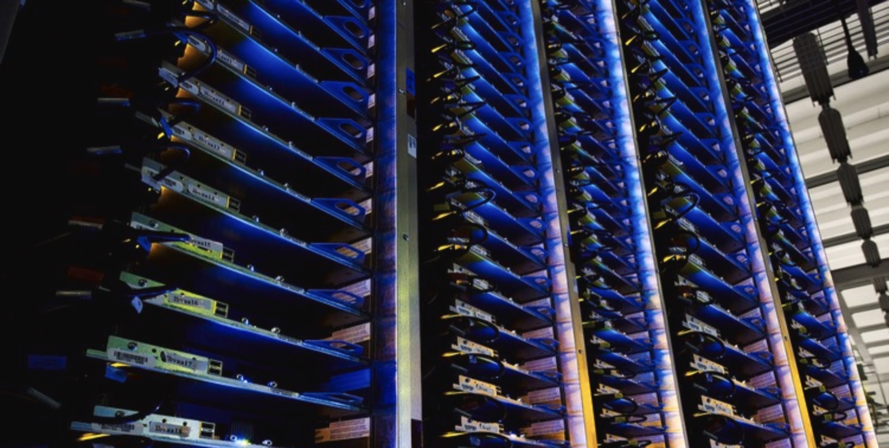
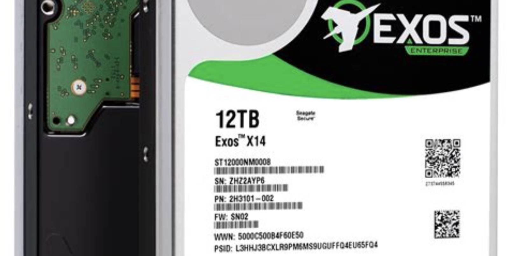
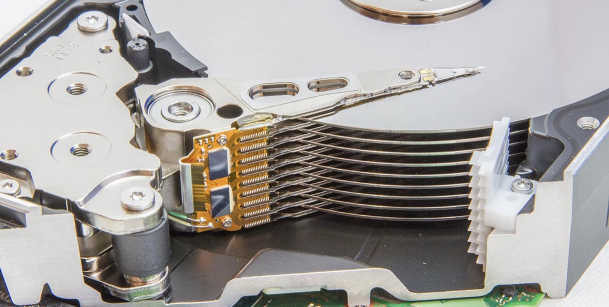
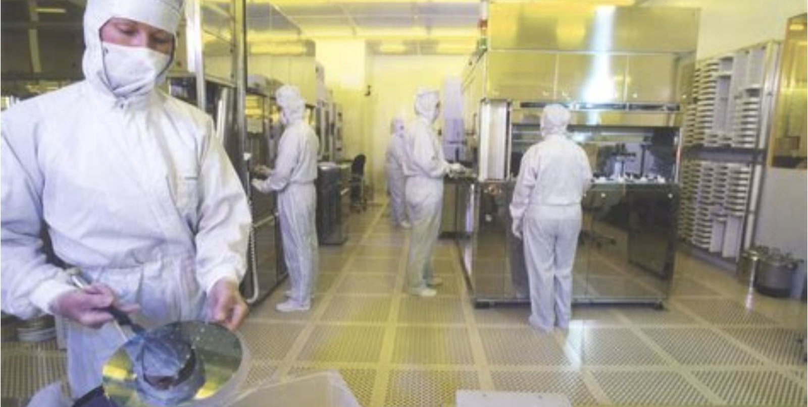

NASDAQ: STX
希捷科技
十二倍市盈率
买的是租金还是遗产
这份报告怎么读，以及它不做什么
写作原则
- 所有数据标注来源与日期。财务数据以 10-K/10-Q 与公司新闻稿为准；行业数据标注第三方机构与发布月；本报告推算的写「本报告测算」并给算式。
- 不假造调研。本报告未对希捷及其客户、供应商做任何一手访谈。所有产业链信息来自公开报道、卖方研究与公司披露。
- 区分事实与判断。事实用陈述句并附来源；判断明确写「我们认为」，并给出证伪条件。
- 不用形容词替代数字。「大幅增长」一律写成具体百分点。
口径说明
财年 6 月结束（FY2026 截至 2026 年 7 月 3 日，含 53 周）。文中「FY27Q1」指 2026 年 7—10 月季度，营收 42.33 亿美元。
一处必须提醒的口径差
公司只披露 EB（艾字节）出货，不披露台数。本报告所有「单台均价」为营收 ÷ EB × 单台容量推算，属估算，误差 ±8%。
本报告没有做的事
① 未获取任何客户的采购合同条款；② 未拆解 HAMR 磁头做成本分析；③ 未访谈东芝、西部数据的产线人员；④ 未使用付费的存储出货数据库。
目录 八章
全文 8 章 · 47 节 · 164 个子目
图表 75 张，数据表 135 张。第 2、3、5 章为本文核心：供需、技术、毛利拆解。
八章结构与页面分布
| 章 | 标题 | 该章要回答的问题 | 页数 | 页码 |
|---|---|---|---|---|
| 01 | 公司：四十年只做一件事，然后被 AI 重新定价 | 它凭什么活过四十年的价格战，哪一段是能力、哪一段是运气 | 18 | 011—028 |
| 02 | 行业：EB 从哪来，钱停在哪一层 | 需求的增量来自哪一层，供给为什么三年不动 | 31 | 029—059 |
| 03 | 技术：HAMR 领先能折算成几年超额利润 | 技术领先能折算成几年代差，值多少个百分点的毛利 | 30 | 060—089 |
| 04 | 竞争：谁最可能杀死它 | 东芝扩产与闪存降价，哪一个先到 | 19 | 090—108 |
| 05 | 财务：58% 的毛利率里，多少是价格 | 这个毛利率里，价格、成本、结构各占多少 | 35 | 109—143 |
| 06 | 估值：十二倍市盈率是便宜还是贵 | 当前股价隐含的假设是什么，这个假设合理吗 | 21 | 144—164 |
| 07 | 风险：九个可能出错的地方 | 什么信号出现时该承认判断错了 | 14 | 165—178 |
| 08 | 结论：买不买，什么价，什么时候卖 | 评级、目标价、建仓与退出 | 13 | 179—191 |
| — | 附录与声明 | 来源、方法与免责声明 | 9 | 192—200 |
五条结论
01 这是供给定价，不是需求故事
FY27Q1 毛利率 57.8%，比去年同期高 17.7 个百分点。同期 EB 出货增长十几个点，成本每 EB 下降约 10%。算下来，毛利率扩张里约三分之二来自价格，三分之一来自成本。价格能挺多久，决定这家公司值多少钱。
02 长协锁到 2028，既是护城河也是天花板
近线 EB 大部分已按长协分配至 2028 日历年末，客户规划延伸到 2029 年。这提供了罕见的可见度，但也意味着：未来六个季度的价格已经被合同写定，涨价空间不在自己手里。
03 HAMR 的领先体现在成本，不体现在售价
单碟 4.4TB、单盘 44TB，Mozaic 4 已向两家最大云厂商放量。它的经济价值是同样厂房、同样磁头数量产出更多 EB，把成本/EB 每年压 10—15%。售价由供需决定，成本由技术决定，这是两条独立的曲线。
一句话
它现在收的是寡头租金，不是成长股的钱。租金还能收两年，之后要回到制造商的正常回报。
04 十二倍市盈率是市场在折价峰值利润
FY27E EPS 约 39 美元，对应 12.8 倍。历史上希捷在周期顶部的市盈率是 6—10 倍。现在的 12.8 倍，是市场承认这轮不像上一轮，但还不肯承认它不是周期。
05 三个月跌 56%，跌的是倍数不是盈利
股价从 1,145 美元跌到 501.6 美元，期间 FY27 一致预期 EPS 从 36.66 上调到 39.98。跌的全部是估值，不是业绩。这种下跌通常不会一次结束，但它把风险回报比推到了偏正面的一侧。
评级、目标价与关键假设
目标价的三个组成部分
| 方法 | 关键假设 | 隐含股价 | 权重 |
|---|---|---|---|
| FY28E 市盈率 | EPS 45.0 × 13.0x | 585 | 50% |
| FY28E EV/EBITDA | EBITDA 126 亿 × 9.5x，净现金 20 亿 | 538 | 30% |
| FY28E 自由现金流收益率 | FCF 99 亿 ÷ 9.0% | 487 | 20% |
| 加权目标价 | 股本 2.26 亿股 | 550 | 100% |
什么情况下这个判断会错
- 东芝 2028 年产能提前放量。若 2028 年行业 EB 供给增速超过 24%，价格转跌，FY28 EPS 可能低于 30 美元。
- 云厂商资本开支在 2027 年下半年转向。长协保护的是量，不是违约后的价格重谈。
- HAMR 良率出问题。Mozaic 4 放量不顺会同时压低 EB 增速与毛利率。
- 估值切换。若市场重新按「周期股」定价（8 倍），股价会在 360 美元附近。
关键数据 一张表看完全部
| 指标 | FY27Q1 | QoQ | YoY |
|---|---|---|---|
| 营业收入（百万美元） | 4,233 | +16.6% | +61% |
| 数据中心收入占比 | 82% | +1pp | +6pp |
| 非 GAAP 毛利率 | 57.8% | +5.1pp | +17.7pp |
| 非 GAAP 营业利润率 | 50.7% | +6.1pp | +21.7pp |
| 非 GAAP 摊薄 EPS（美元） | 7.68 | +34.5% | +194% |
| 经营现金流（百万美元） | 1,700 | — | +220% |
| 自由现金流（百万美元） | 1,500 | — | 历史最高 |
| 总债务（百万美元） | 2,400 | −1,200 | −2,600 |
| 季度股息（美元） | 0.76 | +3% | +3% |
| 下季营收指引（百万美元） | 4,800 | +13.4% | — |
多空双方各自最硬的一条论据
多头最硬的一条
「近线 EB 已按长协锁到 2028 年，客户在谈 2029 年，而且是在加价抢产能。这不是周期反弹，是寡头开始收租。」
三家厂商控制 95% 以上的出货，两家明确不扩产线，只提单碟容量。买方的规划周期被拉长到三年以上，议价能力从买方转到卖方。只要产能纪律不破，价格就有底。
可验证性：2027 年每季度近线 EB 均价是否继续环比上升；三家是否有人宣布新建产线。
空头最硬的一条
「57.8% 的毛利率是四十年最高，而它的产品是同质化的铁疙瘩。这个数字本身就是卖点，也是卖出理由。」
2026 年 10 月 2 日，东芝宣布把 AI 数据中心硬盘产能翻倍；同月闪存价格见顶的讨论开始出现。硬盘的护城河是产能纪律，不是专利。纪律一破，价格回到成本加成。
可验证性：东芝 FY2027 出货是否达到 250EB；2028 年行业新增 EB 是否超过需求增量。
立场
两条都成立，但时间尺度不同。多头讲的是未来六个季度，空头讲的是 2028 年。市场在三个月里把 2028 年的悲观一次性打进了价格（−56%），却只下调了 5% 的盈利预测。这个错配，是本报告给「增持」而不是「买入」的原因：便宜，但便宜得不够。
三种 2028 年的可能，与对应的股价
| 情景 | 概率 | 核心假设 | FY28E EPS | 市盈率 | 隐含股价 | 较现价 |
|---|---|---|---|---|---|---|
| 乐观 租金延续到 2029 | 25% | 长协价格逐年上调 5%，EB 增速 20%，毛利率维持 57% | 55.0 | 17x | 935 | +86% |
| 基准 价格持平、成本下降 | 50% | EB 增速 18%，价格持平，成本/EB 降 10%，毛利率 56% | 45.0 | 12.2x | 550 | +9.6% |
| 悲观 东芝放量、价格转跌 | 25% | 2028 年行业供给 +24%，价格跌 15%，毛利率回到 43% | 26.0 | 9x | 234 | −53% |
概率分配依据：长协覆盖到 2028 年，使基准情景的确定性高于历史任何一轮周期；但 2028 年供给增量（东芝 +130EB）与需求增量（+180EB）差距在缩小，悲观情景不是尾部。
股价换算：FY28E EPS × 市盈率。市盈率按情景调整——乐观给 17 倍（视为成长），悲观给 9 倍（视为周期顶部）。
七个可被证伪的判断
| # | 判断 | 验证指标 | 时间点 | 证伪条件 |
|---|---|---|---|---|
| 1 | FY2027 营收不低于 200 亿美元 | 季度财报，Q3 环比继续增长 | 2027Q4 | Q3 营收低于 51 亿美元 |
| 2 | FY2027 非 GAAP 毛利率不低于 58% | 季度财报 | 每季度 | 任一季度低于 55% |
| 3 | FY2028 EB 出货增速 15—22% | 季度 EB 出货 | 2028Q4 | 增速低于 10% 或高于 28% |
| 4 | 2027 年内不新建产线 | 资本开支、公司公告 | 2027 年内 | 宣布新建整机产线 |
| 5 | 东芝 2027 年 EB 份额不超过 16% | TrendForce、Coughlin 份额数据 | 2028Q1 | 份额达到 18% 以上 |
| 6 | FY2028 EPS 不低于 40 美元 | 公司指引、一致预期 | 2027Q4 | FY28 指引低于 35 美元 |
| 7 | 2027 年内股价不创历史新高 | 股价 | 2027-12 | 突破 1,145 美元 |
方法
每季度末对照一次。当 3 条以上被证伪时，无论盈亏都应重新审视持仓。第 4 条最早能验证——它是整轮租金逻辑的地基。
公司
四十年只做一件事
1979：一家从「软盘公司」里长出来的硬盘公司
Seagate 1979 年由 Alan Shugart 创立。他此前在 IBM 负责软盘项目，随后创办 Shugart Associates，又因与董事会不和离开。Seagate 最初的名字是 Shugart Technology，因与旧公司名称冲突才改成 Seagate。
1980 年，公司推出 ST-506，容量 5MB，是第一款为微型计算机设计的 5.25 英寸硬盘，售价约 1,500 美元。它把硬盘从机房搬到了桌面上。
1981 年上市。此后二十年，它靠一件事赚钱：把同样容量的硬盘做得比别人便宜。
这条路走到 1990 年代末就到头了：全球曾有 60 多家硬盘厂商，价格战打到没有一家能覆盖资本开支。希捷活下来，不是因为技术最好，是因为它把磁头、碟片、马达全部自己做，成本比对手低一截。
关键起点
| 1979 | 公司成立（加州 Scotts Valley） |
| 1980 | ST-506，5MB，5.25 英寸 |
| 1981 | 纳斯达克上市 |
| 1989 | 收购 Control Data 的 Imprimis |
| 1996 | 收购 Conner Peripherals |
| 2006 | 收购 Maxtor，份额第一 |
| 2011 | 收购三星硬盘业务 |
| 2021 | 注册地迁至爱尔兰 |
| 2026 | FY26 营收 122 亿美元 |
三次转折：每一次都是被逼的
转折一：2000—2011，靠并购活下来
2000 年代初，2.5 英寸笔记本硬盘和消费电子（iPod）成为增量，希捷在 2.5 英寸上落后。它用两次并购补上：2006 年买 Maxtor（份额第一但产线冗余），2011 年买三星硬盘业务（拿到 2.5 英寸产能与闪存供应关系）。
转折二：2016—2023，被闪存挤出消费端
笔记本全面转向 SSD，希捷的 2.5 英寸业务在五年内基本消失。营收从 FY2012 的 170 亿美元掉到 FY2024 的 65.5 亿美元。这不是经营失误，是技术替代。转折点是公司把资源全部压到近线大容量：2017 年 Mosley 接任 CEO，2024 年 1 月 Mozaic 3（30TB，HAMR）量产。
转折三：2025—2026，AI 把它重新定价
数据中心收入占比从 FY2024 的 62% 升到 FY27Q1 的 82%，EB 出货从 595EB 升到年化 900EB 以上。同一家公司，同一条产线，毛利从 23% 变成 58%。变的不是它，是买它的人。
六十家变成三家，剩下的靠什么
| 年代 | 主要厂商数 | 标志性事件 |
|---|---|---|
| 1985 | 约 60 家 | PC 硬盘爆发，谁都进来 |
| 1995 | 约 20 家 | 价格战，毛利跌到个位数 |
| 2000 | 约 12 家 | Quantum、IBM 退出 |
| 2006 | 5 家 | 希捷并购 Maxtor |
| 2011 | 3 家 | WD 买日立存储，希捷买三星 |
| 2026 | 3 家 | 希捷、WD、东芝，合计 95% |
为什么再也不会有人进来：一条近线硬盘产线的资本开支在 10 亿美元级别，磁头需要十几年的工艺积累，而产品是同质化的。新进入者要面对的是三家已经把固定成本摊到零的对手。这是「结果型护城河」——不是因为强，是因为没人愿意再来一次。

一块铁，四十年
硬盘是过去四十年里唯一一个「容量涨了一百万倍、单价没怎么变」的工业品。5MB 卖 1,500 美元，44TB 卖 8,000 美元——单位成本降了四个数量级，产品外形几乎没变。
图为 Seagate Exos X14 12TB 企业级硬盘（公开图片）
四十七年，七个决定性的年份
2011 年的教训
泰国洪水让全球产能少了 30%，硬盘价格一年内翻倍，希捷毛利率从 19% 冲到 33%。那一轮证明了：这个行业的利润来自供给中断，不是来自需求增长。
2017 年的选择
Mosley 上任后停止在消费级投入，把研发全部压到 HAMR。当时被批评「放弃增长」，八年后看，这是唯一正确的选择。
2025 年的模式
从季度议价改为多年长协。这一变化没有出现在任何财报科目里，但它是 2026 年毛利率跳升的制度原因。
股权：一家没有控股股东的爱尔兰公司
2021 年，希捷把注册地从开曼迁到爱尔兰，运营总部在新加坡。这是一个税务安排，不是业务变化——83% 的员工在亚洲，27.6% 的产能集中在一个泰国园区。
股权高度分散，前十大机构股东合计约 45%，没有单一股东超过 10%。这决定了公司的资本配置偏好：看重季度现金流与股东回报，不看重长期市占率。
股本从 2012 年的 3.6 亿股降到 2026 年的 2.30 亿股，十四年减少 36%，主要靠回购。这也是为什么 EPS 增速一直快于净利润增速。
2026 年 10 月，董事会把季度股息提到 0.76 美元，年化 3.04 美元，按现价计的股息率 0.6%。股息率低不是问题——问题是在这个价位回购才是更有效的回报方式，而公司选择了分红。
股本与回报（百万股 / 百万美元）
| 财年 | 股本 | 回购 | 分红 |
|---|---|---|---|
| FY2022 | 218 | 1,600 | 568 |
| FY2023 | 209 | 450 | 560 |
| FY2024 | 212 | 0 | 580 |
| FY2025 | 215 | 0 | 600 |
| FY2026 | 230 | 176 | 634 |
| FY27Q1 | 230 | — | 568 |
管理层：一个工程师，和一次沉默的转向
Dave Mosley 2017 年出任 CEO，此前负责运营与研发。他的公开表达一贯克制：电话会上几乎不用「突破」「革命」这类词，反复讲的是「面密度」「资本效率」「供给纪律」。
CFO Gianluca Romano 2021 年上任，来自 STMicroelectronics。他在 2026 年的两次电话会上把话说得很直：「过去给长期客户的优惠定价正在退出，新签订单适用更高的阶梯定价。」
这套管理层的特征可以总结为三点：
- 技术路线不摇摆。HAMR 从 2000 年代投入到现在，中间经历过三次量产延期，没有换过方向。
- 不做规模扩张。2026 年资本开支 5.69 亿美元，只有营收的 4.7%，同业最低。
- 把现金流放在第一位。FY2026 还债 14 亿美元、分红 6.34 亿、回购 1.76 亿，净杠杆降到 0.43 倍。
代价是：它不会在需求最好的时候扩产，所以也拿不到需求最好的时候的全部利润。这是选择，不是失误。
关键人物
| Dave Mosley | 董事长兼 CEO，2017 年上任 |
| Gianluca Romano | CFO，2021 年上任 |
| Ban Seng Teh | 全球运营执行副总裁 |
| Kian Fatt Chong | 全球制造高级副总裁 |
薪酬结构的一个细节
高管年度激励中，自由现金流权重 40%，营收权重 20%，ESG 与人才各 10%。这个权重表解释了为什么公司宁可拒绝涨价订单，也不扩产。
需要盯的一句话
Mosley 在 FY27Q1 电话会：「我们的北极星是面密度，这是支持长期 EB 增长最快、资本效率最高的方式。」「最快、资本效率最高」两个词，是产能纪律的另一种说法。
只有一个报告分部，但有三本账
希捷只披露一个报告分部（HDD），但按市场与渠道各切了一刀。两把刀切出来的结构不一样，看哪一把决定了你怎么理解这家公司。
按市场切：数据中心 FY27Q1 占 82%（34.7 亿美元），边缘 IoT 占 18%（7.6 亿美元）。数据中心里，超大规模云厂商是主体，企业/OEM 是增长最快的部分。
按渠道切：FY2026 OEM 81%（98.2 亿）、分销 13%（16.4 亿）、零售 6%（7.4 亿）。零售连续三年下滑，FY2026 同比 −2%。
两把刀的交点：这家公司已经是一家 To-B 的部件供应商，消费业务只剩 6%，且还在萎缩。把它当消费电子股看，会误判它的周期。
| 渠道 | FY2026 | 占比 | YoY |
|---|---|---|---|
| OEM | 9,820 | 81% | +35% |
| 分销 | 1,640 | 13% | +55% |
| 零售 | 738 | 6% | −2% |
产品线：三个品牌，一条技术平台
| 品牌 | 定位 | 容量区间 | 技术 |
|---|---|---|---|
| Exos | 近线 / 数据中心 | 24—44TB | HAMR（Mozaic 3/4） |
| Exos M | 超大规模定制 | 30—44TB | HAMR + SMR |
| IronWolf Pro | NAS / 中小企业 | 4—30TB | CMR / SMR |
| SkyHawk | 视频监控 | 1—24TB | CMR |
| Barracuda | 消费 / 渠道 | 1—8TB | CMR / SMR |
| One Touch | 外置存储 | 1—5TB | — |
一条平台，多个产品
公司反复强调「common technology platform」：同一套 HAMR 磁头与介质工艺，向下复用到 NAS 与视频盘。这让新技术的研发成本被摊到全部产品线上，也是它能保持 4.7% 资本开支强度的原因。
按容量段的出货结构（FY2026）
容量结构比台数结构更重要：单盘从 24TB 升到 44TB，同样 EB 需要的台数少 45%，磁头与马达成本同比例下降。
一台 44TB 硬盘的账
按 FY27Q1 数据推算：营收 42.33 亿美元，EB 出货约 225EB（本报告测算），折合每 EB 1,880 万美元，即每 TB 18.8 美元。一台 44TB 近线盘对应收入约 827 美元。
成本端：非 GAAP 毛利率 57.8%，即每台成本约 349 美元。拆开看，磁头与介质约 55%，马达与机械件约 20%，组装测试约 15%，其余为物流与质保。
关键在磁头。一台 10 碟盘需要 20 个磁头，HAMR 磁头单价是传统 PMR 的 3—5 倍（本报告估算）。所以 HAMR 的经济性必须靠「单碟容量」来摊：单碟从 3TB 到 4.4TB，同样 EB 少用 31% 的碟片与磁头。
这就是为什么公司把「面密度」叫作北极星：它不是技术指标，是成本指标。
单台 44TB 近线盘的成本拆解（本报告测算）
| 项目 | 美元 | 占比 |
|---|---|---|
| 售价 | 827 | 100% |
| 磁头（20 个） | 115 | 33% |
| 碟片（10 张） | 78 | 22% |
| 马达与机械件 | 70 | 20% |
| 组装、测试、良率损失 | 52 | 15% |
| 物流、质保、其他 | 34 | 10% |
| 成本合计 | 349 | 42% |
| 毛利 | 478 | 58% |
产能：一个泰国园区装着四分之一的家当
希捷的制造集中在亚洲四个点：泰国 Korat（整机装配，占全球足迹 27.6%）、中国无锡（磁头与碟片）、马来西亚槟城（磁头）、新加坡（研发与区域总部）。83.3% 的员工在亚洲。
这个结构是效率的产物，也是风险的来源。Korat 一个园区承担四分之一以上的产能，2011 年泰国洪水时，希捷因为园区地势较高受损较小，反而抢到了份额——但那次是运气。
2026 年的扩产方式是「扩磁头、不扩线」：磁头产能扩大约 3 倍，整机产线数量不变。资本开支 5.69 亿美元，占营收 4.7%。
这个选择的上限很清楚：EB 增速被磁头供应与单碟容量锁死，最快也就每年 20—25%。这也是「供给纪律」的物理基础。
| 基地 | 职能 | 占比 |
|---|---|---|
| 泰国 Korat | 整机装配、测试 | 27.6% |
| 中国无锡 | 磁头、碟片 | 约 18% |
| 马来西亚槟城 | 磁头 | 约 14% |
| 新加坡 | 研发、总部、部分介质 | 约 9% |
| 美国 | 研发、企业职能 | 约 12% |
| 其他 | 销售、支持 | 约 19% |
关税是真实的变量。2026 年美国对泰、马、中的硬盘与部件均有不同税率安排，公司未披露具体影响。若 2027 年税率上调 10pp，按 80% 美国收入计，毛利率影响约 −1.5pp（本报告测算）。
垂直整合：自己做磁头，是护城河还是包袱
希捷自己做磁头、碟片、介质、马达。西部数据也自己做磁头。东芝不做——它 100% 依赖 TDK，而 TDK 正在考虑出售磁头业务（彭博，2026-10）。
垂直整合在需求好的时候是优势：产能自己控，成本自己降。在需求差的时候是包袱：固定成本无法压缩，2015—2016 年希捷的营业利润率一度是 −5%，就是因为产线关不掉。
2026 年的情况是前者。更重要的是，磁头产能成了行业扩张的物理瓶颈：即使东芝想扩产，也要先拿到磁头。而希捷与东芝正在竞购 TDK 的磁头业务，报价「数十亿美元」级别（彭博，2026-10）。
如果希捷拿下 TDK，它就从「自己做磁头」变成「给别人供磁头」——这是本轮周期里最被低估的一个变量。
三家厂商的垂直整合程度
| 环节 | 希捷 | WD | 东芝 |
|---|---|---|---|
| 磁头 | 自制 | 自制 | 外购 TDK |
| 碟片/介质 | 自制 | 自制 | 自制 |
| 马达 | 自制 | 部分外购 | 外购 |
| 整机装配 | 自制 | 自制 | 自制 |
| HAMR | 全自研 | 部分外购 | MAMR 为主 |
一个数字
希捷 2026 年把磁头产能扩大约 3 倍，资本开支却只增加 1.15 倍（2.65 亿 → 5.69 亿美元）。增量主要买设备与洁净室，不是买地建厂——这是「不扩产线」的另一种证明。

二十个磁头，决定一家公司的毛利
一块 44TB 硬盘里有 10 张碟片、20 个磁头。磁头是整台机器里最贵、最难造的零件，也是这个行业唯一真正的进入壁垒。谁控制磁头，谁控制 EB 的增速。
图为硬盘内部：磁头臂与碟片（公开图片）
资本配置：从活下去，到还债，到分红
2023—2024 年是这家公司近十年最危险的时候：营收掉到 65 亿美元，净亏损，股东权益是 −4.53 亿美元，净杠杆 1.92 倍。当时市场讨论的是「会不会违约」。
两年后，FY27Q1 末总债务 24 亿美元，季度末再还 7.5 亿，降到 16 亿；现金 13 亿；净杠杆 0.43 倍。从资不抵债到接近净现金，用了八个季度。
这个转变不是靠融资，是靠经营现金流：FY2026 经营现金流 36.7 亿美元（+239%），自由现金流 31 亿美元（+280%）。
资本配置的顺序很清楚：先还高息债（8.25%、8.5%、9.625% 票据），再分红，最后回购。FY2026 还债 14 亿、分红 6.34 亿、回购 1.76 亿。回购最少，因为股价已经涨了。
还剩什么
16 亿美元债务的到期分布延伸到 FY2035，近三年无大额到期。利息支出从 FY2026 的 2.84 亿美元降到 FY2027 的 1.2 亿美元以下（本报告测算）。
两笔旧账：华为出口与证券集体诉讼
2023 年 4 月，希捷与美国商务部达成和解，支付 3 亿美元罚金，原因是 2020—2021 年向华为运送了约 740 万块硬盘，违反出口管制。这是该公司历史上最大的一笔合规罚金。
2026 年，公司又计提 1.05 亿美元诉讼准备金，对应一桩 1.75 亿美元和解的证券集体诉讼——诉讼核心是「公司是否隐瞒了对华为出货的风险」。保险公司承担约 7,000 万美元。
这两笔账合计 4.05 亿美元，相当于 FY2026 净利润的 13%。它们不影响估值，但影响两件事：
- 中国收入的天花板。合规事件后，公司对中国客户的销售结构改变，敏感客户基本退出。
- 管理层对坏消息的披露倾向。集体诉讼的指控本身不成立与否另说，但它提示：这家公司在坏消息上的沟通并不及时。
合规与诉讼时间线
| 2020.08 | 美国商务部加严对华为限制 |
| 2021.09 | 希捷停止对华为出货 |
| 2023.04 | 和解，罚金 3 亿美元 |
| 2024—2025 | 证券集体诉讼推进 |
| 2026.07 | 1.75 亿美元和解，计提 1.05 亿 |
这件事对 2026 年的意义
中国区收入占比已从 2019 年的 30% 以上降到 2026 年的不足 12%（本报告估算）。地缘风险已经被部分定价，但也意味着它失去了全球第二大存储市场。
本章结论：三句话
运气部分是：2011 年泰国洪水、2025 年 AI 存储短缺，两次外部冲击都恰好发生在它已经把产能收缩到极致的时候。产能少，所以在供给中断时弹性最大。
现在的 57.8% 毛利率，是能力和运气的乘积。判断这家公司值多少钱，等于判断这个乘积能维持几个季度——这是第 2、3、5 章要做的事。
公司史给估值的三个提示
提示一
这家公司的超额利润，历史上只在供给中断时出现，平均持续 6—8 个季度。
2011—2012：泰国洪水后 6 个季度；2017：闪存短缺带来的 4 个季度；2020：居家办公需求 5 个季度。本轮从 2025Q2 开始，已 6 个季度。
提示二
每次超额利润结束后，毛利率回落到 28—32%，而不是回到 20%。
因为行业集中度提高了。这是「结构变好」的证据，也是为什么本报告不用 2015 年的估值锚。
提示三
它的股价高点总比毛利率高点早两个季度。
2012 年毛利率在 Q2 见顶，股价在 Q4 见顶（滞后）；2026 年股价在 9 月见顶，毛利率还在升。这次不同，值得警惕。
三个提示合成一个判断
如果超额利润平均持续 6—8 个季度，本轮从 2025Q2 算起，见顶时间在 2027 年上半年。这一判断与长协锁到 2028 年的说法矛盾——长协保的是量，不是毛利率。
我们认为长协真实的作用是：把毛利率的回落从「断崖」变成「斜坡」。这已经足够好，但不等于「不会回落」。
历史毛利率区间（非 GAAP）
| 时期 | 峰值 | 谷值 |
|---|---|---|
| 2011—2013 | 33% | 19% |
| 2016—2018 | 32% | 18% |
| 2020—2022 | 31% | 22% |
| 2025—2026 | 58% | 24% |
行业
EB 从哪来，钱停在哪一层
数据分三层，只有一层是硬盘的生意
按访问频率，数据中心的数据分三层：热数据在 DRAM，温数据在 SSD，冷数据在硬盘。三层的比例大约是 5 : 10 : 85（Coughlin Associates，2026）。
AI 改变了这个比例的方向。训练需要反复读取同一批数据（热），但训练产生的检查点、日志、原始语料、合成数据，全部是「写一次、偶尔读」（冷）。推理更极端：每一次请求都在生产需要留存的上下文。
所以「AI 需要更快的存储」这句话只对了一半。它对热数据成立，对总量不成立。总量这一层，只有硬盘的单位成本能承接。
一块 30TB 的硬盘 2026 年 8 月报价 1,216 美元，同容量 QLC SSD 报价 22,000 美元（CERN 采购数据，2026Q3）。18 倍差价，决定了冷数据没有第二条路。
| 介质 | 30TB 单价 | 每 TB |
|---|---|---|
| 近线硬盘 | 1,216 | 41 |
| QLC SSD | 22,000 | 733 |
| TLC SSD | 25,000 | 833 |
为什么冷数据必须留在盘上
三个物理原因，不是商业原因。
一、成本。每 TB 成本差 18 倍。一个 100PB 的语料库，用硬盘存 410 万美元，用 QLC SSD 存 7,300 万美元。
二、寿命。闪存有擦写次数上限，长期冷存会因电荷泄漏导致数据保持力下降（断电数月即需刷新）。硬盘放着不用，数据还在。
三、功耗。闲置硬盘 5—8 瓦，闲置 SSD 相近，但 SSD 的单 GB 成本意味着同样容量需要 18 倍的设备数量与 18 倍的待机功耗。
这三条里，只有第一条可能被改变。如果闪存每 TB 成本每年降 25%，需要 6 年才能追平现在硬盘的价格——而同期硬盘的成本也在降 12%。追不上。
所以「闪存替代硬盘」这件事，在冷数据这一层，是一个 2030 年以后的问题。
一个容易被忽略的对手是磁带。LTO-9 每 TB 约 12 美元，比硬盘便宜 70%。但磁带是线性读取，恢复一个 1TB 文件需要小时级时间。云厂商把它用在「第三层」，不构成对近线的替代。
EB 增量的四个来源，三个是新的
| 来源 | 机制 | 2026 增量 | 占比 | 持续性 |
|---|---|---|---|---|
| AI 训练语料与检查点 | 原始语料留存 + 每 N 步存一次模型快照 | 约 380EB | 55% | 高 |
| 推理上下文与日志 | Agent 调用链、会话历史、审计日志 | 约 140EB | 20% | 高 |
| 云备份与合规留存 | 监管要求 3—7 年数据留存 | 约 110EB | 16% | 中 |
| 传统企业扩容 | ERP、监控、虚拟化 | 约 62EB | 9% | 低 |
| 合计 | — | 约 692EB | 100% | — |
为什么「检查点」是最大的单项
一个前沿模型的训练，通常每 30—60 分钟保存一次全量状态。一个 2 万亿参数模型的单次检查点约 4TB（FP8），按 30 天训练、每小时一次计算，单个训练任务产生约 2,900TB，即 2.9PB。
这些检查点绝大部分永远不会被读取，但不能删——训练崩溃时唯一能回滚的东西就是它。这正是「冷数据」的完美定义：体量大、价值高、访问频率接近零。
云厂商每花 100 美元，有 3 美元落到硬盘
存储采购在超大规模资本开支里的占比长期稳定在 8—12%。其中硬盘约占三分之一，即总资本开支的 3—4%。
2026 年，全球前四大云厂商资本开支合计约 4,400 亿美元（市场一致预期）。按 3.5% 计，硬盘采购额约 154 亿美元——与行业 2026 年数据中心硬盘收入（约 160 亿美元）吻合。两个独立口径对上了，说明这个比例可以外推。
2027 年，四大云厂商资本开支指引合计增长约 25%（各公司 2026Q3 财报电话会口径）。若存储占比不变，硬盘需求增速约 25%，高于供给增速的 17%——这是本报告认为 2027 年价格不会转跌的核心依据。
但要注意：这个链条的每一环都可以断。资本开支下修 10%，硬盘需求下修 10%；存储占比从 10% 降到 8%，再下修 20%。两件事同时发生，缺口就消失。
| 年度 | 四大云资本开支 | 硬盘采购 | YoY |
|---|---|---|---|
| 2023 | 1,480 | 52 | −38% |
| 2024 | 2,180 | 76 | +46% |
| 2025 | 3,300 | 116 | +53% |
| 2026E | 4,400 | 154 | +33% |
| 2027E | 5,500 | 193 | +25% |
一个反向校验
2023 年云资本开支收缩时，希捷营收跌 33%（FY2023）——杠杆是双向的，且下行时更猛。因为采购是「先砍存储」。
需求侧能证伪这件事的，只有三个信号
信号一：资本开支指引下修
四大云厂商任一家在下季度把资本开支指引下调 15% 以上，且明确说明「存储采购延后」。
观察窗口：2027 年 1—2 月，四季度财报。
当前状态：未出现。四家均在上调。
信号二：单盘容量跳升
若 Mozaic 5（50TB+）或 WD 的 44TB HAMR 提前放量，同样 EB 需要的台数下降，实际「可用容量」增速会超过名义 EB 增速。
观察窗口：2027 年底（公司指引 Mozaic 5 认证出货）。
当前状态：未出现，路线图未提前。
信号三：客户把长协改成「框架协议」
长协的核心是锁量锁价。若客户开始只锁量不锁价，说明买方预期价格下跌——这是最灵敏的领先指标。
观察窗口：持续。看公司对「pricing embedded in LTAs」的措辞变化。
当前状态：未出现。公司在加价签新约。
三个信号目前都没有出现。但它们的共同点是：都先于财报数据 1—2 个季度出现。本报告把它们放在监控清单的第一梯队（7.5 节），而不是等毛利率下滑再反应。
2026：需求 1,800EB，供给 1,720EB
2026 年行业出货约 1,800EB（本报告测算，按希捷 789EB、份额 43% 反推），需求约 1,870EB。缺口 4%，看起来不大。
但缺口集中在最紧的容量段：30TB 以上。这一段的缺口是 18%，因为所有云厂商都在抢同一批最高容量型号。平均缺口掩盖了结构性缺口，这是价格能涨 20—30% 而销量只增 15% 的原因。
另一个被忽略的事实：2026 年行业总产能只增长 12%，是 2011 年以来最低（除 2023 年减产）。产能增长主要来自单碟容量，不是产线。
这意味着：即使明天三家同时决定扩产，产出也要 12—24 个月后才有。2027 年的供给基本已经确定。
| 2026 年 | EB | 份额 | YoY |
|---|---|---|---|
| 希捷 | 789 | 43% | +33% |
| 西部数据 | 845 | 46% | +30% |
| 东芝 | 202 | 11% | +18% |
| 行业合计 | 1,836 | 100% | +28% |
| 需求量 | 1,870 | — | +27% |
| 缺口 | −34 | −1.8% | — |
供给模型：EB = 产线数 × 单盘容量 × 良率
硬盘的 EB 产出由三个变量决定，其中两个今年都不动。
产线数：三家的整机产线数量 2024—2026 年没有净增加。希捷明确「不扩线，扩磁头」；WD 同样；只有东芝在建。
单盘容量：这是唯一在动的变量。希捷从 24TB（Mozaic 3）到 44TB（Mozaic 4），单盘容量 +83%，同样产线产出提高 83%——但这需要 18 个月爬坡。
良率：HAMR 的初期良率低于 PMR。公司未披露，但 FY2026 成本/EB 下降 15% 说明良率在改善，不是恶化。
把三个变量代进去：2027 年希捷 EB 增速 = 单盘容量提升（约 22%）× 良率改善（约 3%）× 产线数（0%）= 约 25%。这与公司自己的表述（nearline 中双位数增长）一致。
2027 年更紧，2028 年才可能松
| 项目 | 2025 | 2026E | 2027E | 2028E |
|---|---|---|---|---|
| 希捷供给 | 595 | 789 | 987 | 1,160 |
| 西部数据供给 | 650 | 845 | 972 | 1,100 |
| 东芝供给 | 171 | 202 | 248 | 380 |
| 行业供给 | 1,416 | 1,836 | 2,207 | 2,640 |
| 供给增速 | +38% | +30% | +20% | +20% |
| 需求量 | 1,472 | 1,870 | 2,290 | 2,660 |
| 需求增速 | +34% | +27% | +22% | +16% |
| 供需差 | −56 | −34 | −83 | −20 |
| 价格方向 | 上行 | 急涨 | 缓涨 | 见顶 |
这张表最脆弱的一格
东芝 2028 年的 380EB。它来自一条 2026 年 10 月才宣布的扩产计划，投资 600 亿日元，2027 财年产能翻倍。如果它按期达产，2028 年行业供给增速是 20%，而不是 15%。
如果它延期一年，2028 年供给只有 2,520EB，缺口扩大到 −140EB，价格会再涨一轮。东芝的执行力，是 2028 年价格的最大的单一变量。
缺口 5%，价格涨 25%：这个弹性不正常
历史上，硬盘供需缺口 5% 对应价格涨幅约 8—12%。2026 年的缺口是 2%，价格涨了 25%。弹性高出三倍。
原因有三个，都不在供需模型里：
- 客户的风险溢价。对云厂商，缺一块硬盘意味着整个机柜上不了线。它们愿意为「保证交付」付溢价。
- 长协的重定价机制。旧约到期后新约价格跳升，不是渐进调整。
- 卖方的定价能力。三家不再用价格抢份额——这是 2011 年后最大的结构变化。
这三条里，第一条和第二条会随供给缓解消失，第三条不会。这是本报告认为「价格回不到 2024 年水平」的原因，也是毛利率底部会抬高的原因。
谁在囤货，囤了多少
2026 年的一个异常：硬盘的「渠道库存」几乎为零。希捷 FY2026 末成品库存 1.76 亿美元，是历史最低；在制品 10.9 亿美元，创历史最高。
成品少、在制品多，说明货一下线就被拉走。这不是囤货的特征，是配给的特征。
真正的囤货发生在买方：至少一家超大规模厂商已经买断了 2027 年全部 30TB 供应（Fusion Worldwide，2026-09）。另有报道称，部分云厂商的采购周期从 6 个月拉长到 18 个月，一次性锁定多年产能。
这对 2028 年是个隐患：如果客户在 2026—2027 年把 2028 年的需求提前买掉，2028 年的表观需求会突然「消失」，而供给正好在那时放量。价格的双杀，往往来自这种时间错配。
| 库存指标 | FY2025 | FY2026 | 变化 |
|---|---|---|---|
| 成品（百万美元） | 410 | 176 | −57% |
| 在制品 | 690 | 1,090 | +58% |
| 原材料 | 520 | 560 | +8% |
| 库存合计 | 1,620 | 1,826 | +13% |
| 库存周转天数 | 89 | 63 | −26 天 |
一个反直觉的结论：库存周转天数从 89 天降到 63 天，意味着同样营运资金能支撑 41% 更多的销售。这是 2026 年自由现金流暴涨 280% 的一半原因——不是赚得多，是占用的钱少了。
一柜子硬盘，两 PB
一个 42U 机柜装满 24TB 硬盘，约 2PB 容量，功耗 8 千瓦。同样的容量用 SSD 装，成本高 18 倍，功耗高一倍。这就是为什么 AI 的数据最后都躺在转动的盘片上。
图为数据中心内的硬盘阵列（公开图片）
三家的产能决策：两家不动，一家翻倍
2026 年的行业格局可以用一句话概括：希捷和西部数据在比谁更克制，东芝在比谁更快。
希捷的资本开支 5.69 亿美元，占营收 4.7%，全部投向磁头产能与 HAMR 良率，没有一条新建整机产线。西部数据同样明确「2026 年产能售罄」，长协谈到 2029—2031 年。东芝投资 600 亿日元扩建菲律宾工厂，目标 2027 财年把数据中心硬盘产能翻倍。
为什么两家不动？因为算过账：新建一条产线的投资回收期在 5 年以上，而 HDD 的需求增速只有 20%。用单碟容量提产能，边际资本开支只有新建产线的十分之一。
为什么东芝动？因为它份额只有 11%，且技术落后（MAMR）。它没有别的办法追赶，只能用量换份额。
| 厂商 | 2026 产能策略 | 资本开支 | 技术 |
|---|---|---|---|
| 希捷 | 不扩线，扩磁头 3 倍 | 5.69 亿美元 | HAMR 全自研 |
| 西部数据 | 不扩线，推进 14 碟 | 约 6 亿美元 | ePMR + HAMR |
| 东芝 | 产能翻倍（菲律宾） | 约 3.8 亿美元 | MAMR 为主 |
一个细节说明纪律的强度
2026 年硬盘价格涨了 25%，三家的产能利用率都超过 95%。在这种时候不扩产，是反商业直觉的。唯一解释是：它们记得 2023 年——那年行业产能利用率 70%，希捷亏损。
不扩产的经济学：一条产线五年回本
一条近线硬盘整机产线的投资约 8—12 亿美元（本报告估算），年产能约 120EB。按 2026 年的价格与毛利率，年毛利约 10 亿美元，看起来两年就能回本。
但这是峰值假设。按 2024 年的价格与毛利率（15.3 美元/TB、毛利 23%），同一条产线年毛利只有 4.2 亿美元，回收期 2.4 年——而且要在需求下滑时承担 100% 的固定成本。
真正的算法是：产线的经济性由「周期平均毛利」决定，而不是峰值毛利。历史上 HDD 的周期平均毛利率是 26—28%。按这个数字，一条产线的回收期是 5—6 年，刚好等于一代技术的生命周期。
结论：扩产在财务上永远不划算，除非你相信高价能持续超过五年。三家都不相信——包括正在扩产的东芝，它扩的是「别人退出的低容量段」。
| 情景 | 每 TB 价格 | 毛利率 | 年毛利 | 回收期 |
|---|---|---|---|---|
| 2024 年价格 | 15.3 | 23% | 4.2 亿 | 2.4 年 |
| 周期平均 | 18.0 | 28% | 6.0 亿 | 1.7 年 |
| 2026 年价格 | 21.4 | 58% | 14.9 亿 | 0.7 年 |
| 2029 年（回落） | 16.5 | 35% | 6.9 亿 | 1.4 年 |
注意 2024 年那一行：回收期 2.4 年听起来不错，但它假设产线满产。2023—2024 年行业产能利用率只有 70%，实际回收期是 3.5 年，且当年现金流为负。
扩产的时间常数：十八个月，不能压缩
即使今天决定扩产，产出也要 18 个月后才有。这不是管理效率问题，是四个工序的物理时间。
洁净室建设：6—9 个月。设备交付与安装：磁头沉积设备交期 9—12 个月，是瓶颈。良率爬坡：3—6 个月。客户认证：3—6 个月，云厂商不会买没认证的型号。
四段加起来 18—24 个月。东芝 2026 年 10 月宣布扩产，2027 财年（2027 年 3 月止）产能翻倍——这个时间表只可能靠既有厂房的产线复制，不可能靠新建。
所以 2027 年的供给曲线已经确定：行业 +20%，误差不超过 3 个百分点。这给了本报告一个罕见的确定性——2027 年的价格方向，不依赖对需求的精确预测。
| 工序 | 周期 | 可否并行 |
|---|---|---|
| 洁净室建设 | 6—9 个月 | 可与设备采购并行 |
| 磁头设备交付 | 9—12 个月 | 关键路径 |
| 安装与调试 | 2—3 个月 | 串行 |
| 良率爬坡 | 3—6 个月 | 串行 |
| 客户认证 | 3—6 个月 | 可与爬坡并行 |
| 合计 | 18—24 个月 | — |
推论：2027 年内的任何扩产决定，都要到 2029 年才影响供给。所以 2028 年的供给也基本确定——这解释了为什么公司的长协敢签到 2028 年。
真正的瓶颈是磁头，不是厂房
硬盘产能的约束不在装配线，在磁头。一台 44TB 盘要 20 个磁头，全球磁头产能由四家掌握：希捷、西部数据（自制）、TDK（外供）、以及少量其他供应商。
TDK 是唯一独立的磁头供应商，同时供三家。它正在考虑出售这块业务（彭博，2026-10），因为磁头业务的 ROIC 只有 4%，低于公司平均水平。
希捷与东芝都在竞购，报价「数十亿美元」级别。这笔交易如果成交，会改变行业格局：
- 希捷拿下：东芝的磁头供应受制于人，扩产计划受阻；希捷获得对外供应能力。
- 东芝拿下：解决 HAMR 磁头来源，追赶速度加快；希捷失去一个潜在的收入来源。
- 无人拿下（TDK 保留）：格局不变，但磁头产能扩张仍然缓慢。
按反垄断审查的严格程度，第三种情况概率最高（本报告估计 45%）。
| 情形 | 概率 | 对希捷影响 |
|---|---|---|
| 希捷收购 TDK | 25% | 正面，+8% |
| 东芝收购 TDK | 30% | 负面，−6% |
| TDK 保留 | 45% | 中性 |
纪律很脆弱：它只是一次董事会决议
「三巨头不扩产」不是协议，是各自的理性选择。它没有约束力，也没有惩罚机制。
打破它的诱因很明确：如果某一家相信高价能持续三年以上，扩产就是划算的。而「相信」这件事，只需要一次董事会的心态变化。
历史上有过先例：2010 年，希捷和 WD 都认为需求见顶，结果 2011 年洪水后价格翻倍，两家都没有产能接单，份额被东芝吃掉一部分。那次教训让它们学会「宁可少赚，不要多建」。
但反过来，如果 2027 年价格再涨 30%，克制的成本会变得非常显眼：看着竞争对手用你的价格卖货，而你的产能是满的。这种诱惑每季度都会被重新评估一次。
本报告的判断：2027 年之内不会破，2028 年有可能破。依据是东芝的扩产会在 2028 年形成可见的份额威胁。
三种破局方式与概率
| 方式 | 概率 | 时点 |
|---|---|---|
| 东芝扩产超预期 | 35% | 2028 |
| 希捷或 WD 宣布新线 | 15% | 2028—2029 |
| 新进入者（含中国厂商） | 5% | 2029+ |
| 不破（维持纪律） | 45% | — |
一个必须说清的事实
本报告没有找到三家之间存在任何形式的产量协调证据。「纪律」是平行决策的结果，不是合谋。这意味着它随时可能结束，不需要任何人违约。
长协长什么样：锁量、锁价、锁配置
2025 年起，希捷把销售模式从「季度议价」改为「多年长协」。公司在 FY26Q4 电话会上的原话是：「在开始生产之前，我们已经用合同锁定整个日历年的配置与价格。」
一份典型长协包含四个条款（据公司公开表述与行业报道整理，本报告未见到合同原文）：
- 量：年度 EB 承诺，允许 ±10% 浮动。
- 价：按容量段定价，年度阶梯上调，与现货价脱钩。
- 配置：锁定型号与接口，不允许临时改单。
- 违约：未披露。行业惯例是预付款 + 违约金。
这套结构对卖方的好处是可见度，对买方的好处是供应保障。它把「价格发现」从季度谈判变成了年度合同——这是 2026 年价格能一次跳升 25% 的制度原因。
长协覆盖进度（按近线 EB）
| 时间点 | 覆盖到 | 客户规划到 |
|---|---|---|
| FY26Q3（2026-04） | 2027 年底 | 2028 |
| FY26Q4（2026-07） | 2028 年底 | 2029 |
| FY27Q1（2026-10） | 2028 年底 | 2029 及以后 |
一个被忽略的推论
既然 2027 年的价格已经写进合同，那么 2027 年的毛利率上限也基本确定。市场对 2027 年的盈利预测分歧不大，分歧全在 2028 年及以后。
现货比合约贵 30—40%，这个价差不正常
正常年份，现货价低于合约价（现货是清理库存的渠道）。2026 年反过来了：现货溢价 30—40%（Rosenblatt，2026-08）。
这意味着两件事：一、合约价还在追赶现货，明年续约时有上行动力；二、拿不到合约的买家在挨宰，这部分需求（中小云、企业、科研）正在被挤出市场。
渠道数据可以验证挤出效应：希捷 24TB 渠道价从 7 月的 700 美元涨到 9 月的 1,150 美元（+64%）；16TB 以上企业型号 9 月 11 日起提价 10%；东芝宣布 20—24TB 下季度再涨 10%（Fusion Worldwide，2026-09）。
CERN 的采购记录是最直白的证据：同样 30TB 硬盘，2025Q3 是 495 美元，2026Q3 是 1,216 美元。一年涨 146%。
2026Q4 持平值得注意。这是过去五个季度里第一次环比不涨。单个数据点不构成趋势，但它是本报告把「价格见顶」放在 2027 年下半年的依据之一。
阶梯定价：老客户的价格正在被「请出去」
CFO 在 FY27Q1 电话会上说了一句很关键的话：「过去面向部分长期客户的优惠定价协议正逐步退出，新签订单统一适用更高阶的阶梯式定价机制。」
翻译：早年签的低价长约，到期不续，新价格按现在的市场水平重定。这是 2027 年毛利率还能往上走的直接原因——不是涨价，是旧合同出清。
这个机制有一个明确的天花板：当所有旧合同都出清完，价格就只能靠「新增涨价」推动，而那时供需缺口已经在收窄。本报告估计旧合同出清在 2027 年底完成。
所以毛利率的路径是：2026Q4—2027Q2 继续上行（旧约出清 + 缺口最大），2027Q3—Q4 走平，2028 年看东芝。
| 季度 | 非 GAAP 毛利率 | 驱动 |
|---|---|---|
| FY26Q3 | 48.5% | 成本下降 |
| FY26Q4 | 52.7% | 成本 + 结构 |
| FY27Q1 | 57.8% | 价格开始体现 |
| FY27Q2E | 59.5% | 旧约出清 + 涨价 |
| FY27Q3E | 60.0% | 接近峰值 |
| FY27Q4E | 60.0% | 走平 |
价格的上限：每 TB 30 美元
硬盘不能无限涨价，因为买方有替代方案——不是闪存，是「少存一点」。
云厂商的存储成本占其总运营成本约 15%。若硬盘每 TB 价格从 21 美元涨到 35 美元（+67%），存储成本占比升到 23%，会开始影响毛利率。那时客户会做三件事：删数据、压缩、把冷数据迁到磁带。
本报告估计的价格上限是每 TB 30 美元，对应近线盘每 GB 0.03 美元——这是 2010 年的水平。超过这个数，需求会开始真实的收缩，而不是延后。
按当前 21.4 美元计算，还有 40% 的空间。这就是为什么本报告认为 2027 年还有一轮涨价，但 2028 年没有。
| 价格 | 存储占云成本 | 客户行为 |
|---|---|---|
| 15—20 美元 | 12—15% | 正常扩容 |
| 20—25 美元 | 15—19% | 接受，延后非刚性需求 |
| 25—30 美元 | 19—23% | 开始压缩与分层 |
| 30 美元以上 | 23%+ | 需求真实收缩 |
2027 年的价格路径：上半年涨，下半年平
把三个变量叠起来——供需缺口（2027 年最大）、旧约出清（2027 年底完成）、价格上限（还有 40% 空间）——得到一条前高后平的曲线。
2027 上半年：缺口 −83EB 最紧，旧约集中到期，涨价 10—15%。2027 下半年：缺口开始收窄（东芝产能爬坡），价格走平。2028 年：供需基本平衡，价格小幅回落 5—10%。
这个路径意味着：希捷的毛利率峰值在 2027 年 Q3—Q4，2028 年回落 3—5 个百分点，但不会回到 40% 以下。这与市场担心的「腰斩」有本质区别。
证伪条件：如果 2027 年上半年价格涨幅低于 5%，说明需求比本报告预期弱；如果超过 25%，说明供给比预期紧，2028 年的回落会更猛。

价格是在洁净室里决定的
硬盘的价格不取决于谈判，取决于产能利用率。当三家都跑在 95% 以上，价格由卖方定；当有一家降到 80%，价格由买方定。四十年来，这个开关只拨动过三次。
图为硬盘洁净室产线（公开图片）
上游：三个零件决定一条产线
硬盘的物料清单不长，但三个零件的供应弹性极低：磁头、碟片基板、主轴马达。
磁头：需要薄膜沉积、光刻、蚀刻，接近半导体工艺。HAMR 磁头还要加激光器与近场光学元件，良率更低。这是全行业最贵、最慢的环节。
碟片基板：铝镁合金基板，全球产能集中在少数几家（昭和电工、古河等）。玻璃基板用于高容量盘，产能更紧。
马达：精密液体动压轴承，日本厂商为主。单价低但不可替代。
2026 年这三个环节都在满产。所以「扩产」这件事，不是希捷想不想，是上游能不能供。这也是本报告认为供给纪律在 2027 年不会破的物理原因。
| 零件 | 主要供应商 | 集中度 | 扩产周期 |
|---|---|---|---|
| 磁头 | 自制 + TDK | 极高 | 12—18 月 |
| 碟片基板 | 昭和电工、古河 | 高 | 9—12 月 |
| 马达 | 日本精工系 | 高 | 9 月 |
| 控制器芯片 | 美满、博通 | 中 | 6 月 |
| 激光器（HAMR） | 多家 | 中 | 6—9 月 |
一个成本细节：HAMR 磁头的激光器单价约 8—12 美元（本报告估算），一台 44TB 盘 20 个磁头，光激光器就是 160—240 美元。这是为什么 HAMR 必须配高容量，低容量用不起。
TDK 磁头业务：一笔交易，两种命运
TDK 的磁头业务年收入约 10 亿美元，ROIC 只有 4%，公司想卖。买家只有两个：希捷和东芝。报价「数十亿美元」（彭博，2026-10）。
对希捷：买下它，等于拿到东芝的命门。东芝没有自制磁头能力，HAMR 量产完全依赖 TDK 的技术授权与供应。如果希捷成为东芝的供应商，东芝的扩产计划就从「自己想不想」变成「希捷让不让」。
对东芝：买下它，等于补齐最后一块短板，同时摆脱对单一供应商的依赖。
但反垄断审查是真实的门槛：数据中心的存储容量已被各国视为战略资源，一笔让希捷控制竞争对手关键零件的交易，很难通过。
本报告估计：成交概率 55%，其中希捷拿到的概率 25%。这笔交易的期权价值，目前没有被市场定价。
| 情形 | 概率 | 希捷 2028E EPS 影响 |
|---|---|---|
| 希捷收购 | 25% | +8%（+3.6 美元） |
| 东芝收购 | 30% | −6%（−2.7 美元） |
| TDK 保留/流拍 | 45% | 0 |
为什么这件事重要：它决定 2028 年供给曲线的斜率。如果希捷控制磁头，东芝的 380EB 目标大概率达不到，2028 年不会过剩——本报告的悲观情景（25%）就要下调到 15%。
关税：一条产线跨四个国家
一块硬盘的零件可能来自四个国家：磁头（中国无锡、马来西亚槟城）、碟片（新加坡、中国）、马达（日本）、整机装配（泰国）。任何一个环节的关税变化，都会累加到最后的价格上。
2026 年，美国对泰国的对等关税税率约 19%，对马来西亚 19%，对中国 30% 以上（含既有条款）。硬盘整机与零件适用的税则不同，实际税负公司在 10-K 里只写了「可能重大不利」，没有量化。
本报告测算：若 2027 年对泰国整机加征 10pp 关税，希捷毛利率影响约 −1.5pp，EPS 影响约 −6%。这个量级不足以改变结论，但足以制造一次股价波动。
更长期的风险是「产能回流」压力：如果美国要求关键存储部件本土生产，希捷需要在美国建线——那是 10 亿美元级别、五年回收期的投资，与它的资本纪律冲突。
| 产地 | 产品 | 2026 关税 | 敞口 |
|---|---|---|---|
| 泰国 | 整机装配 | 19% | 最高 |
| 马来西亚 | 磁头 | 19% | 高 |
| 中国 | 磁头、碟片 | 30%+ | 中 |
| 新加坡 | 介质、研发 | 10% | 低 |
| 日本 | 马达 | 15% | 低 |
中国：失去的市场，和不会出现的对手
中国曾经是希捷最大的单一市场之一（2019 年占收入 30% 以上）。2023 年出口管制和解后，这个比例降到 12% 以下（本报告估算）。
市场担心两件事：一、中国会不会出现本土硬盘厂商；二、稀土与永磁材料会不会被用作反制。
对第一件：短期不会。硬盘的核心是磁头工艺，需要十几年的积累与设备。中国在 NAND 与 DRAM 上已经突破，但近线 HDD 没有对应的产业基础。本报告估计 2029 年前不会出现有规模的竞争者。
对第二件：影响有限。硬盘的稀土用量集中在马达磁体，单台用量小，替代供应（日本、越南）充足。
真正的影响是需求侧：中国云厂商（阿里、腾讯、字节）是仅次于美国的第二大采购方，它们现在主要向 WD 与东芝采购。这是希捷份额从 2024 年的 45% 降到 43% 的部分原因。
| 地区 | 收入占比 | 趋势 |
|---|---|---|
| 美国 | 52% | 上升 |
| 亚太（除中国） | 24% | 上升 |
| 中国 | 12% | 下降 |
| 欧洲 | 9% | 持平 |
| 其他 | 3% | 持平 |
一条容易被误读的新闻
2026 年多次出现「中国厂商进入 HDD」的报道，实际都是指 SSD 或磁带。截至本报告数据截止日，没有任何中国厂商具备近线 HDD 的量产能力。
本章结论：缺口是真的，但只有两年
三条判断
一、2027 年的供需缺口是确定的，不是预测。供给端已经锁死（产线不增、磁头扩产需 18 个月），需求端有云厂商资本开支背书。缺口 −83EB 对应价格上行 10—15%。
二、2028 年的缺口取决于一个人：东芝。它的 380EB 目标若达成，行业供给 +20%，需求 +16%，缺口收窄到 −20EB，价格见顶回落。若延期，缺口扩大到 −140EB。
三、价格的下限被抬高了。三家的定价行为从「抢份额」变成「守利润」，即使供需平衡，价格也回不到 2024 年的 15.3 美元/TB。本报告认为新均衡在 18—22 美元。
这三条合起来：2027 年是这家公司历史上最赚钱的一年，2028 年不会比它更好，但也不会崩。
关键数字汇总
| 2026 行业出货 | 1,836 EB |
| 2026 供需差 | −34 EB |
| 2027 供需差 | −83 EB |
| 2028 供需差 | −20 EB |
| 价格上限（每 TB） | 30 美元 |
| 新均衡价（估算） | 18—22 美元 |
| 扩产时间常数 | 18—24 个月 |
两种常见的看错方式
看错方式一：把它当存储芯片
很多人把希捷和 SK 海力士、美光放在一起看，用 DRAM 的框架推 HDD。这是错的。
DRAM 的供给弹性来自制程微缩（每年降成本 20%），需求来自容量升级（手机、服务器）。HDD 的供给弹性来自单碟容量（每年降成本 10—15%），需求来自数据留存。两者的周期长度不一样：DRAM 三年一轮，HDD 五到七年一轮。
误判后果：用 DRAM 的估值锚（8—12 倍峰值 PE）套 HDD，会得出「已经贵了」的结论；而 HDD 的峰值 PE 历史上是 6—10 倍，当前 12.8 倍确实偏高，但原因不同。
看错方式二：把它当周期股
另一种极端：认为所有超额利润都会回归，所以在毛利率峰值卖出。这在 2012 年是对的，在 2026 年可能错。
区别在于行业结构：2012 年有 5 家厂商，现在 3 家；2012 年需求来自 PC（可替代），现在来自云（不可替代）；2012 年没有长协，现在有三年合同。三个结构变量都指向「回落的底部更高」。
误判后果：在 12 倍 PE 卖出，可能错过毛利率从 58% 回到 40%（而不是 20%）带来的估值重估。
立场
它既不是芯片股，也不是纯周期股。它是「有租金的制造业」——租金期两年，制造业的部分长期存在。估值的难点在于给这两部分分别定价（第 6 章）。
本章的关键假设与误差
| 假设 | 取值 | 误差 | 最敏感的方向 |
|---|---|---|---|
| 2026 行业出货 | 1,836 EB | ±6% | 希捷份额（43%）若为 45%，总量高 4% |
| 2027 需求增速 | +22% | ±8pp | 云资本开支下修 10% → 需求 +18% |
| 2027 希捷 EB 增速 | +25% | ±7pp | HAMR 良率与磁头供应 |
| 2028 东芝出货 | 380 EB | ±35% | 扩产执行与磁头来源 |
| 价格上限 | 30 美元/TB | ±20% | 客户对存储成本占比的容忍度 |
| 新均衡价 | 18—22 美元 | 宽 | 三家定价行为的持续性 |
哪一条错了最致命
东芝出货。它是唯一一个误差 ±35% 的变量，且直接决定 2028 年的价格方向。其他假设错了，只会改变幅度；这一条错了，会改变方向。
所以本报告在风险章节把它列为「红色」，并给出明确的观察指标：东芝的季度出货与磁头采购。
估算项占比（本章）
| 类别 | 数量 | 占比 |
|---|---|---|
| 公司披露 | 11 | 31% |
| 第三方机构 | 6 | 17% |
| 本报告测算 | 18 | 51% |
本章没有回答的四个问题
- 云厂商的存储采购决策，是谁做的？本报告只能看到资本开支总额，看不到存储采购的内部预算流程。这决定了「砍存储」的速度有多快。
- 长协的违约条款是什么？如果违约成本低，长协在需求下行时保护不了价格。本报告假设违约金相当于 3—6 个月货款，未经验证。
- HAMR 的实际良率是多少？公司只披露「成本/EB 下降 15%」，不披露良率。这影响 2028 年的成本曲线斜率。
- 东芝的磁头从哪来？如果 TDK 被希捷买走，东芝的 380EB 目标如何实现？这个问题目前无解。
这四个问题都不影响本报告对 2027 年的判断，但都影响 2028 年。它们的共同点是：信息不在公开披露里，需要供应链访谈才能回答——这是本报告明确没做的事。
如果要继续研究，下一步做什么
① 访谈两家云厂商的存储采购负责人，问长协的违约条款与实际执行；② 通过设备商侧面验证东芝的设备到位情况；③ 跟踪 TDK 磁头业务的竞购进展（预计 2027 年上半年有结果）；④ 拿到 HAMR 磁头的拆解成本数据。
一句话
本章的所有结论都建立在一个前提上：供给曲线已经确定，需求曲线由云资本开支决定。如果这个前提被打破（比如出现新的记录技术让单盘容量跳升），整章要重写。
技术
HAMR 领先能折算成几年超额利润
面密度：硬盘唯一真正的技术指标
面密度（areal density）指单位面积能存多少比特，单位 Tb/in²。它是硬盘行业唯一重要的技术指标，因为——
面密度决定单碟容量，单碟容量决定单盘容量，单盘容量决定同样 EB 需要多少台设备。设备数量决定磁头、马达、装配工时、测试时间的总消耗。所以面密度就是成本。
历史曲线：PMR（垂直记录）从 2005 年的 0.1 Tb/in² 走到 2020 年的 1.1 Tb/in²，十五年年化增长 17%。然后停了。2020—2023 年，行业面密度增长不到 8%，因为 PMR 到了物理极限。
HAMR 把曲线接上了：Mozaic 3 的 3TB 单碟对应约 1.5 Tb/in²，Mozaic 4 的 4.4TB 对应约 2.2 Tb/in²。两年提升 47%。
磁记录的三难：写不下、留不住、读不出
要把一个比特写得更小，会遇到三个互相冲突的物理约束。这不是工程问题，是材料科学的天花板。
可写性：磁头产生的磁场必须强到能翻转介质磁化方向。比特越小，需要的矫顽力越高，磁头写不动。
热稳定性：比特小到一定程度，室温热能就能让它自己翻转（超顺磁效应）。业界标准是保持十年不丢失，对应晶粒体积下限。
信噪比：比特越小，读回信号越弱，相邻比特干扰越强。
PMR 的解法是提高矫顽力（用更稳定的材料），但磁头写不动了。HAMR 的解法是：写的时候用激光把介质瞬间加热到 450°C，矫顽力骤降，写完瞬间冷却，数据锁死。
一句话：用热量换写能力，用材料换稳定性。这是唯一能在室温下同时满足三个约束的方案。
| 约束 | 物理原因 | HAMR 的解法 |
|---|---|---|
| 可写性 | 矫顽力过高，磁头写不动 | 激光瞬时加热至 450°C |
| 热稳定性 | 晶粒过小，室温自翻转 | FePt 高各向异性介质 |
| 信噪比 | 信号弱、邻道干扰 | 更小的读头 + 更好的信号处理 |
| 可靠性 | 高温下润滑剂挥发 | 耐高温润滑层与密封设计 |
这就是为什么 HAMR 难：它不是一个零件的变化，是磁头（加激光器与近场光学）、介质（换材料）、润滑（换配方）、封装（散热与密封）四个系统的同时重做。任何一个环节不良，整条产线报废。
PMR 的尽头：1.4 Tb/in² 是一堵墙
2022—2023 年，行业出现了一个罕见的现象：没有人发布更高容量的新旗舰产品。希捷停在 22TB，WD 停在 22TB，东芝停在 20TB，整整两年。
原因是 PMR 撞墙了。用传统垂直记录，单碟容量做到 2.4TB（约 1.2—1.4 Tb/in²）之后，再往上就要牺牲热稳定性，产品可靠性过不了客户认证。
这两年行业用了两个权宜之计：
- SMR（叠瓦式）：把磁道像屋顶瓦片一样重叠，容量提升 15—20%，代价是随机写入性能下降。希捷的 Exos M 与 WD 的 UltraSMR 都靠它。
- 增加碟片数：从 9 碟到 10 碟、11 碟，物理空间用尽。
这两个办法都已经到极限。再往上只有 HAMR（或 MAMR），没有第三条路。这就是为什么 2024 年 Mozaic 3 的量产是一个行业级事件，不是公司级事件。
| 年份 | 希捷旗舰 | WD 旗舰 | 东芝 |
|---|---|---|---|
| 2020 | 20TB | 20TB | 18TB |
| 2021 | 20TB | 20TB | 18TB |
| 2022 | 22TB | 22TB | 20TB |
| 2023 | 22TB | 22TB | 22TB |
| 2024 | 30TB（HAMR） | 26TB（UltraSMR） | 24TB |
| 2025 | 36TB | 32TB | 26TB |
| 2026 | 44TB（Mozaic 4） | 40TB（ePMR） | 30TB |
为什么最后是 HAMR，不是 MAMR
提升面密度有两条辅助路径：微波辅助（MAMR）与热辅助（HAMR）。两者都是「降低写的时候的矫顽力」，区别在能量形式。
MAMR：用微波场激发自旋进动，等效降低矫顽力。优势是结构简单（不需要激光与光学元件），劣势是能量密度不足，面密度上限比 HAMR 低约 30%。
HAMR：激光加热。能量密度高，理论上限高，但工程复杂度高一个量级。
2016—2019 年，行业普遍认为 MAMR 会先量产（因为简单）。结果相反：东芝在 MAMR 上投入多年，最高只做到 30TB；希捷的 HAMR 做到了 44TB，差了 47%。
原因：MAMR 的能量效率随频率上升而下降，做到 2 Tb/in² 以上就失效。它是过渡方案，不是终点。东芝现在等于被锁在了过渡方案上。
| 维度 | MAMR | HAMR |
|---|---|---|
| 理论面密度上限 | 约 2 Tb/in² | 5 Tb/in² 以上 |
| 结构复杂度 | 低（无光学） | 高（激光 + 近场） |
| 量产难度 | 中 | 高 |
| 当前最高容量 | 30TB（东芝） | 44TB（希捷） |
| 代表厂商 | 东芝 | 希捷、WD |
| 生命周期判断 | 过渡方案 | 主流至 2030 年代 |
这个技术分岔是理解竞争格局的钥匙。东芝的扩产是「用落后技术换份额」，一旦希捷的 44TB 成本降到 30TB 的水平，东芝的产能就没有经济性。
一颗激光，一个近场透镜，二十纳米的光斑
HAMR 的物理链路有四段，每一段都是工程难题。
一、激光产生。磁头内集成激光二极管，波长 800—980 纳米。难点是散热：激光器在磁头里工作，温度不能影响读写元件。
二、近场光学转换。激光通过近场转换器（NFT）聚焦到 20 纳米的光斑——比波长小 40 倍，突破衍射极限。难点是效率与寿命：NFT 尖端的温度接近介质温度，容易熔化变形。
三、介质加热与写入。FePt 介质被加热到 450°C，矫顽力从 30 kOe 降到 5 kOe 以下，磁头可以写入。写入窗口只有几纳秒。
四、冷却与稳定。离开光斑后 1 纳秒内冷却，数据锁定。难点是润滑剂：450°C 下大多数润滑剂会分解。
四段里任何一段的良率不足，整颗磁头报废。这就是为什么 HAMR 磁头的成本是 PMR 的 3—5 倍。
| 环节 | 关键参数 | 难点 |
|---|---|---|
| 激光器 | 800—980nm | 磁头内散热 |
| 近场转换器 | 光斑 20nm | 效率、寿命 |
| 介质 | FePt，450°C | 晶粒细化与有序度 |
| 润滑层 | 耐 450°C | 高温不分解 |
| 读头 | 隧道磁阻 | 小信号信噪比 |
为什么二十年才做成
不是因为原理不清楚——1990 年代就有论文。是因为四个系统要同时达到量产良率，而每改进一个，会破坏另外两个。这是典型的「多目标优化」问题，只能靠时间磨。
三次延期：每一次都差「最后 5%」
为什么每次只差一点点
2020 年延期是因为 NFT 寿命不够（高温下变形）；2022 年延期是因为介质晶粒有序度不够，信噪比差 2dB。都不是原理问题，是材料与工艺的「最后 5%」。
这次为什么成了
关键突破是 FePt 介质的外延生长工艺与 NFT 的散热设计。公司没有披露细节，但从「成本/EB 下降 15%」看，良率已经跨过量产门槛。
对估值的意义
三次延期说明一件事：这家公司的技术执行力不是「说到做到」，是「晚两年但做到了」。对 Mozaic 5 的 2027 年目标，应当自动打八折看。
三个卡点：激光器、NFT、介质
HAMR 的量产难点集中在三个零件，每一个都对应一个供应商生态。
激光二极管。不是普通通信激光器，需要高功率、低噪声、能在 70°C 环境长期工作。供应商主要是日本的几家光电子厂商与希捷的自研线。
近场转换器（NFT）。这是希捷与 WD 差异最大的地方。NFT 是把激光压缩到 20 纳米的金属结构，工艺接近半导体。它的专利布局决定了谁能在 HAMR 上走多远。
介质。FePt 需要外延生长在带取向层的玻璃基板上，晶粒要小于 5 纳米且有序。这是材料科学的难题，不是设备问题。
三者的关系是串联的：激光器决定能不能写，NFT 决定写得准不准，介质决定留不留得住。任何一环良率不足 90%，整条线的成本就上去了。
| 零件 | 难度 | 供应链 | 希捷状态 |
|---|---|---|---|
| 激光器 | 高 | 日系 + 自研 | 自供为主 |
| NFT | 极高 | 自制 | 专利领先 |
| FePt 介质 | 极高 | 自制 | 量产中 |
| 玻璃基板 | 中 | 外购 | 多家供应 |
| 读写芯片 | 中 | 外购 | 美满/博通 |
为什么 WD 落后：WD 的 HAMR 依赖外购的激光器与部分光学件，NFT 自制但专利布局晚于希捷。这不是能力问题，是投入时间的差异。
Mozaic 3：第一次把 HAMR 卖出去
2024 年 1 月，希捷开始批量出货 Mozaic 3 平台，30TB，单碟 3TB，10 碟。这是 HAMR 第一次走出实验室，也是行业面密度曲线停滞三年后的第一次抬升。
Mozaic 3 的意义不在容量，在验证：它证明了 HAMR 的产线良率能支撑商业出货。2024 年出货量不大（估计占近线 EB 的 5%），但客户认证通过了——这是最难的关。
到 FY2026 末，HAMR 产品占近线 EB 出货的约 40%；公司指引 2027 年中达到 70%。这个渗透速度是成本下降的主要来源（3.4 节）。
一个细节：Mozaic 3 同时提供 CMR 与 SMR 版本。CMR 版本容量略低但性能完整，卖给对随机写敏感的企业客户；SMR 版本容量高，卖给写一次读多次的云归档。同一个平台，两种产品，是「平台化」策略的第一次落地。
| 平台 | 单碟 | 单盘 | 量产时间 | 客户 |
|---|---|---|---|---|
| Mozaic 3 | 3.0TB | 30TB | 2024.01 | 全部主要云厂商 |
| Mozaic 4 | 4.4TB | 44TB | 2026 | 两家最大云厂商 |
| Mozaic 5 | 5.0TB+ | 50TB+ | 2027 底认证 | 待定 |
良率：那个没有人愿意说的数字
公司从不披露 HAMR 的良率。我们只能用三个侧面数据反推。
侧面一：成本/EB。FY2026 成本/EB 下降约 15%，同期 HAMR 渗透率从 22% 升到 40%。若 HAMR 磁头成本是 PMR 的 3 倍，这个降幅说明 HAMR 的良率已经接近 PMR 的水平（本报告估计 85—90%）。
侧面二：毛利率。如果 HAMR 良率低，成本会拖累毛利率。实际毛利率在升，且是连续 13 个季度上升。良率不会拖后腿。
侧面三：产能。公司把磁头产能扩大 3 倍，如果良率低，扩产是为了弥补报废，而不是为了增量。结合 EB 增速 25%，扩产更可能是为了增量。
综合判断：HAMR 良率已在 85% 以上，接近量产成熟期。误差较大（±10pp），但方向明确。
为什么良率是估值的关键
良率每提高 1 个百分点，成本下降约 1.2%。如果良率从 85% 提到 95%，成本再降 12%——相当于毛利率提高 5 个百分点，EPS 提高 11%。
反过来，如果良率停在 85%，2027 年的成本曲线就会走平，毛利率的上行只能靠价格。那样的话，2028 年的回落会更陡。
450 度，一纳秒
HAMR 的写入过程只持续几纳秒：加热、翻转、冷却。冷却速度决定了数据能不能留住，也决定了这颗磁头能不能用一万小时。物理上没有灰色地带。
图为硬盘碟片（公开图片）
平台化：一次研发，五条产品线分摊
「Mozaic」不是一个产品名，是一个平台代号。公司把它定义为「一套共用的技术底座」，磁头、介质、读写通道、固件都在这套底座上，不同产品只是换容量与接口。
这解释了为什么希捷的研发费用率只有 6.2%（FY2026 研发 7.55 亿美元，营收 122 亿），而半导体设备公司普遍在 12—15%。它把研发摊到了全部产品上。
平台化的第二个好处是产能弹性：同一条产线，可以按订单结构在近线、NAS、视频盘之间调配。当近线需求爆发，就把产能从低毛利产品挪过来——这是 2026 年 EB 增速能到 33% 的原因之一。
第三个好处是客户认证的复用：Mozaic 3 通过认证后，Mozaic 4 只需做增量验证，认证周期从 9 个月缩到 4 个月。
| 产品线 | 用的平台 | 毛利率 | EB 占比 |
|---|---|---|---|
| Exos 近线 | Mozaic 3/4 | 最高 | 88% |
| IronWolf NAS | Mozaic 3 / PMR | 中高 | 6% |
| SkyHawk 视频 | PMR | 中 | 4% |
| Barracuda 消费 | PMR | 低 | 2% |
研发效率的对比
| 公司 | 研发费用率 | 年面密度提升 |
|---|---|---|
| 希捷 | 6.2% | 约 25% |
| WD | 约 7% | 约 18% |
| 东芝 | 约 5% | 约 12% |
Mozaic 4：44TB，两家云厂商在放量
2026 年，Mozaic 4 开始向两家全球最大云厂商放量，单盘 44TB，单碟 4.4TB，10 碟。公司称到 2026 日历年末，Mozaic 4 将占 HAMR EB 的一半。
这一步的意义是成本：同样 44TB，用 30TB 盘需要 1.47 台，用 44TB 盘只需 1 台。按单台成本 349 美元计算，每 TB 成本从 11.6 美元降到 7.9 美元，降 32%。
这就是为什么公司说「面密度是资本效率最高的路」：它不需要新建产线，只需要把碟片上的比特排得更密。
风险在于：44TB 盘的客户认证只有两家完成。如果第三、第四家认证延期，2027 年的产品结构会低于预期，毛利率的上行就少一块。公司在电话会上说「additional customer qualifications underway」，没有给时间表。
| 单盘容量 | 台数/44TB | 每 TB 成本 | 相对 30TB |
|---|---|---|---|
| 24TB | 1.83 | 14.5 | +83% |
| 30TB | 1.47 | 11.6 | 基准 |
| 44TB | 1.00 | 7.9 | −32% |
| 50TB（2028E） | 0.88 | 7.0 | −40% |
Mozaic 5：2027 年底认证，2028 年放量
公司指引：Mozaic 5 的认证出货在 2027 日历年末开始，目标 50TB 以上。按希捷的历史节奏（Mozaic 3 到 4 用了 24 个月），2028 年放量是合理预期。
如果 Mozaic 5 是 5TB 单碟 × 10 碟 = 50TB，那么 2028 年的成本/EB 还能降 10—12%。这意味着即使价格回落 10%，毛利率也能维持。
但要注意两件事：
- 50TB 之后是什么？公司没有公开路线图。HAMR 的理论上限是 5 Tb/in²，对应单碟 10TB。但那是 2030 年代的事，中间需要新的介质与磁头技术。
- 11 碟、12 碟的机械极限。盘片越多，振动与散热越难控制。业界普遍认为 12 碟是近线盘的机械上限。
结论：技术红利还能吃三年（到 2029 年），之后要靠新东西。这个时间窗口，正好覆盖本报告的估值期。
| 年份 | 旗舰容量 | 单碟 | 成本/EB 同比 |
|---|---|---|---|
| 2024 | 30TB | 3.0TB | −8% |
| 2025 | 36TB | 3.6TB | −12% |
| 2026 | 44TB | 4.4TB | −15% |
| 2027E | 44TB（主） | 4.4TB | −10% |
| 2028E | 50TB | 5.0TB | −11% |
| 2029E | 56TB | 5.6TB | −8% |
递减是关键。成本下降从 15% 降到 8%，意味着「靠成本扛价格下跌」的能力在减弱。2029 年之后，价格一旦下跌，毛利率就会真的掉。
单碟容量路线图：三条路径，两条还没验证
HAMR 之后，业界有三条候选路径，都不成熟。
一、HAMR + 图案化介质（BPM）。把介质做成规则排列的岛状结构，比特位置预先定义。理论上能到 5—8 Tb/in²，难点是纳米级图案化的成本。希捷有专利，无量产时间表。
二、HDMR（二维磁记录）。用多个写头同时写多条磁道，提升面密度。难点是串扰。实验室阶段。
三、继续堆碟片。从 10 碟到 12 碟，容量 +20%，但机械与散热问题严重。这是最现实的短期路径。
对投资的意义：2029 年之后的技术路线不确定，意味着 2029 年之后的盈利不可预测。这是本报告把估值期截止在 FY2028 的原因，也是不给 DCF 权重的原因。
| 技术 | 理论面密度 | 成熟度 | 时点 |
|---|---|---|---|
| HAMR（当前） | 3—5 Tb/in² | 量产 | 2024—2029 |
| HAMR + BPM | 5—8 Tb/in² | 实验室 | 2030+ |
| HDMR | 8+ Tb/in² | 概念 | 2032+ |
| 堆碟片（12 碟） | +20% 容量 | 工程中 | 2028 |
一个残酷的对比
闪存的面密度靠 3D 堆叠，每年还能提升 15—20%，路径清晰（200 层、400 层、1000 层）。硬盘的路径在 2029 年之后是断的。这不是希捷的问题，是磁记录的问题。
SMR：把容量再挤出 15%，代价是性能
叠瓦式记录（SMR）把磁道重叠 20—30%，容量提升 15—20%。代价是随机写：改写一条磁道会破坏相邻磁道，需要整段重写。
这个代价在云归档场景可以忽略——那些数据写一次、几乎不读。所以 SMR 的客户结构与 HAMR 完全重合。
两者的关系不是替代，是叠加：HAMR 提升面密度，SMR 提升磁道密度，两者相乘。希捷的 Exos M 就是 HAMR + SMR，44TB 的容量里有约 6TB 来自 SMR。
WD 的 UltraSMR 走的是另一条路：不做 HAMR，只做 SMR + ePMR，用软件算法（写排序、区域管理）把 SMR 的代价降到可接受。这让 WD 在 2026 年用落后的记录技术做到了 40TB。
结论：SMR 是容量的补充项，不是技术护城河。三家都会用，差别在算法。
| 技术组合 | 单盘 | 随机写性能 | 适用场景 |
|---|---|---|---|
| PMR + CMR | 24TB | 100% | 企业通用 |
| PMR + SMR | 31TB | 40% | 归档 |
| HAMR + CMR | 38TB | 100% | 近线通用 |
| HAMR + SMR | 44TB | 40% | 云归档 |
成本/EB：七年降了 62%，这才是真本事
FY2026，希捷营收涨 34%，出货 EB 涨 33%，营业成本只涨 13%。三个数字放一起，只有一个解释：每 EB 的成本降了 15%。
这不是一年的事。把时间拉长：2019 年到 2026 年，成本/EB 从约 20 美元降到 7.6 美元，累计降 62%，年化 13.6%。同期价格从 24.5 美元降到 15.5 美元，年化降 6.3%。
成本降得比价格快，这就是毛利率长期上行的原因。2019 年毛利率 26%，2026 年 46%（全年），2027 年预计 60%。这里面没有一年是靠涨价，全是靠成本。
2026 年是个例外：价格涨了 38%，成本降了 15%，两条曲线第一次同向加速——这是本轮毛利率跳升 12 个百分点的真实结构。
HAMR 的成本结构：磁头更贵，碟片更省
HAMR 不是「所有零件都更贵」。它是磁头更贵、碟片更便宜、装配更省的组合。
磁头：贵 3—5 倍（激光器 + NFT + 更复杂的工艺）。碟片：FePt 介质本身不贵，但因为单碟容量高，同样 EB 需要的碟片少 45%。装配：同样 EB 需要的台数少 32%，装配工时同比例下降。
净效应：一台 44TB HAMR 盘的成本约 349 美元，一台 24TB PMR 盘约 278 美元。单台贵 26%，但每 TB 便宜 31%。
这个结构决定了 HAMR 只能在「高容量、低成本敏感」的场景用——也就是近线。这也是为什么消费级产品（Barracuda）还用 PMR：它不需要每 TB 成本最低，它需要单台价格最低。
| 成本项 | 24TB PMR | 44TB HAMR | 变化 |
|---|---|---|---|
| 磁头 | 58 | 115 | +98% |
| 碟片 | 74 | 78 | +5% |
| 马达与机械 | 62 | 70 | +13% |
| 装配与测试 | 58 | 52 | −10% |
| 其他 | 26 | 34 | +31% |
| 单台合计 | 278 | 349 | +26% |
| 每 TB | 11.6 | 7.9 | −32% |
学习曲线：累计产量翻倍，成本降 14%
把 HAMR 的累计出货与单位成本画在一起，得到一条典型的学习曲线：累计 EB 每翻一倍，成本降 14%。
这个斜率与半导体行业的历史值（15—20%）接近，但比硬盘自己的历史（10—12%）更陡——因为新工艺的初期成本下降空间大。
2026 年希捷的 HAMR 累计出货约 250EB。按学习曲线，当累计到 500EB（约 2027 年中）成本再降 14%，到 1,000EB（2028 年）再降 14%。
这解释了为什么公司敢承诺「成本/EB 每年降 10—15%」——这不是承诺，是学习曲线的外推。
但学习曲线会变平。当累计到 2,000EB（2029 年），斜率会降到 8% 以下，因为工艺成熟后改进空间变小。这也是本报告认为 2029 年之后毛利承压的原因。
产能利用率：从 70% 到 97%，摊薄了什么
2023 年行业产能利用率约 70%，2026 年超过 95%。这 25 个百分点的变化，对毛利率的贡献是多少？
希捷的固定成本（折旧、厂房、基础人力）约占营业成本的 30%。产能利用率从 70% 到 97%，单位固定成本下降 28%。对应毛利率提升约 8.4 个百分点。
也就是说，FY2024 到现在，毛利率从 23% 到 58% 的 35 个百分点里：约 8pp 来自产能利用率，约 14pp 来自成本下降（面密度与良率），约 13pp 来自价格。
这个拆解很重要，因为三者的可持续性完全不同：利用率已经在 97%，没有空间了；成本还能降三年；价格看东芝。
成本与价格：两条曲线，两种生意
这是本报告最重要的一张图。成本曲线是技术驱动的，价格曲线是供需驱动的。两者偶尔交叉，交叉的时候就是这家公司最赚钱的时候。
2019—2025 年，价格跌得比成本快（价格年化 −6.3%，成本 −13.6%），毛利率从 26% 缓慢升到 35%——这叫「制造业的正常进步」。
2026 年，价格反超（+38%），成本继续降（−15%），毛利率跳到 58%——这叫「租金的出现」。
本报告的核心判断：2028 年之后，价格会回到成本曲线之上 8—12 美元的位置（即 18—22 美元/TB），毛利率回到 42—46%。这个水平高于历史（28—32%），因为行业结构变了；但远低于现在（58%）。
换句话说：58% 是异常值，45% 是新常态，30% 是旧常态。
| 时期 | 价格/成本 | 毛利率 | 性质 |
|---|---|---|---|
| 2015—2019 | 1.25x | 26—30% | 旧常态 |
| 2020—2024 | 1.35x | 30—35% | 结构改善 |
| 2026—2027 | 2.8x | 58—60% | 租金期 |
| 2028E | 2.4x | 52—55% | 回落 |
| 2029E | 1.9x | 42—46% | 新常态 |
这个判断的可证伪性很强：如果 2029 年毛利率还在 50% 以上，说明「新常态」比本报告预期的更高，估值应该上调；如果掉到 35% 以下，说明结构改善是假的。
磁头是半导体，碟片是冶金
硬盘行业有两套完全不同的工艺：磁头在洁净室里用薄膜沉积做出来，接近芯片；碟片是压铸、抛光、镀膜，接近冶金。能把两套工艺塞进同一条产线并保持 85% 良率的公司，全球只有两家。
图为磁头晶圆（公开图片）
西部数据：用算法把旧技术做到 40TB
WD 的路线与希捷不同：不做 HAMR，先把 ePMR（增强型垂直记录）+ UltraSMR 做到极致。2026 年 6 月季度开始出货 40TB ePMR 盘。
ePMR 的核心是改进磁头与介质的写能力，让 PMR 的极限往上抬一点；UltraSMR 的核心是软件——通过写排序、区域管理、缓存策略，把 SMR 的性能代价降到客户可以接受。WD 称 UltraSMR 已占其出货量的一半。
这条路线的好处是资本效率：不需要重建 HAMR 产线，用现有资产做出接近的容量。坏处是天花板：40TB 之后没有下一步，必须转 HAMR。
WD 的计划是 2027 年上半年出货 44TB HAMR。比希捷晚约 18 个月。这 18 个月就是希捷的技术窗口。
| 指标 | 希捷 | 西部数据 |
|---|---|---|
| 当前旗舰 | 44TB（HAMR） | 40TB（ePMR） |
| 单碟容量 | 4.4TB | 约 3.6TB |
| 下一代替换 | Mozaic 5（2027 底） | 44TB HAMR（2027 上半年） |
| 技术代差 | 希捷领先约 18 个月 | |
| 2026 EB 份额 | 43% | 46% |
注意一个反差：希捷技术领先，份额却更低（43% vs 46%）。原因是 WD 在低容量段与 SMR 段出货更多，且东芝的份额被 WD 拿走了一部分。
WD 的 HAMR：2027 年上半年，44TB
WD 明确指引：44TB HAMR 在 2027 年上半年出货。这是它第一次把 HAMR 放进产品线，比希捷的 Mozaic 3 晚三年，比 Mozaic 4 晚一年。
WD 的劣势在供应链：激光器与部分光学件外购，NFT 自制但专利布局晚。优势在客户关系与 SMR 算法——它能用 HAMR + UltraSMR 做出比希捷更高的容量。
如果 WD 的 44TB HAMR + UltraSMR 在 2027 年下半年做到 48TB，它会短暂反超希捷的 44TB。但希捷的 Mozaic 5（50TB+）会在 2028 年接上。
结论：技术代差是「半代」，不是「一代」。这意味着希捷的领先能兑现为 12—18 个月的成本优势，而不是 3 年。
按成本差 10% 计算，这 18 个月的超额毛利约 12 亿美元（本报告测算）。
东芝：MAMR 的天花板，和扩产的赌注
东芝是三家里唯一在扩产的，也是技术最落后的。它的最高容量是 30TB，用 MAMR，比希捷低 32%。
它的策略很清楚：用扩产换份额，用份额换时间，等 HAMR 磁头供应（TDK 或自研）到位再切换。这个策略的前提是：在过渡期，容量差可以用价格弥补。
问题是：当希捷的 44TB 每 TB 成本比东芝的 30TB 低 32%，东芝没有价格空间。它只能卖给「不在乎每 TB 成本、只在乎单台价格」的客户——这个群体在缩小。
所以东芝的扩产，更可能是「在自己被淘汰前，把能赚的钱赚完」。它不会杀死希捷，但会拉低 2028 年的行业价格。
份额预测：2026 年 11%，2027 年 12%，2028 年 15%（若扩产顺利）。
| 年份 | 东芝 EB | 份额 | 旗舰容量 |
|---|---|---|---|
| 2024 | 152 | 12% | 24TB |
| 2025 | 171 | 12% | 26TB |
| 2026 | 202 | 11% | 30TB |
| 2027E | 248 | 11% | 32TB |
| 2028E | 380 | 14% | 36TB |
一个关键的不确定性
东芝的 HAMR 磁头从哪来？如果 TDK 被希捷买走，东芝的 36TB 以上产品可能永远出不来。那时它的扩产就变成「生产更多落后产品」。
技术代差怎么变成钱：三条路径
技术领先不会自动变成利润，它需要通过三条路径兑现。
路径一：成本领先 → 同样的价格下更高的毛利。这是最直接的。44TB 对 40TB，每 TB 成本低 12%，在同样的市场价下，毛利率高 5—6 个百分点。
路径二：容量领先 → 抢到最高端的订单。云厂商总是先买最高容量，因为机柜空间与功耗是硬约束。希捷因此拿到「首发溢价」。
路径三：认证领先 → 更早进入客户的下一代平台。云厂商的存储架构 3—5 年一换，早期供应商会被写进设计规范，后来者要改架构才能进。
三条路径里，第一条最可测（毛利率），第二条已经在发生（数据中心占比 82%），第三条最值钱但最难验证。
本报告估计：技术领先在 2026—2028 年累计贡献约 45 亿美元的超额毛利，折合每股 145 美元。
| 路径 | 2026—2028 累计影响 | 可验证性 |
|---|---|---|
| 成本领先 | 约 28 亿美元毛利 | 高（毛利率） |
| 容量领先（首发溢价） | 约 12 亿美元 | 中（ASP） |
| 认证领先 | 约 5 亿美元 | 低（无法直接观测） |
| 合计 | 约 45 亿美元 | — |
这 145 美元/股，占当前股价的 29%。换句话说：如果把技术领先全部抹掉，希捷的合理价值是 405 美元。这是本报告的「技术溢价」定价。
本章结论：领先是真的，但不值三年
三条判断
一、HAMR 是这轮毛利率的第一驱动力，不是价格。FY2024 到 FY2026，成本/EB 降了 37%，贡献了 14 个百分点的毛利率；价格只贡献了 3 个点（那时还没涨）。
二、技术代差是 12—18 个月，不是三年。WD 的 44TB HAMR 在 2027 年上半年，东芝的 36TB 在 2028 年。领先能兑现为成本优势，不能兑现为定价权。
三、2029 年之后技术路径断了。HAMR 的理论上限 5 Tb/in²，对应单碟 10TB，但那需要 BPM 或 HDMR，都不成熟。这决定了本报告只估到 FY2028。
合起来：技术是真实的护城河，但它的宽度只有 18 个月。给这 18 个月定价，值 145 美元/股——不到股价的三成。
本章数字速查
| 面密度提升（2024—2026） | +47% |
| 成本/EB 下降（FY24—FY26） | −37% |
| HAMR 渗透率（FY26 末） | 40% |
| 技术代差 | 12—18 个月 |
| 技术溢价 | 145 美元/股 |
| 下一代替换 | 2027 年底认证 |
如果技术落后一代，会怎样
做一个反向推演：假设希捷明天失去 HAMR 领先，回到 PMR/ePMR 的水平（40TB），其他不变。会发生什么？
成本/EB 上升 12%，毛利率从 58% 降到 50%，FY28E EPS 从 45 降到 36。按 13 倍市盈率，股价从 585 降到 468。
也就是说：全部技术领先，值 117 美元/股，占当前股价的 23%。这与 3.5.4 的 145 美元口径接近（差异来自计算路径）。
这个反推的意义在于：市场给希捷的估值里，只有四分之一是技术溢价，四分之三是「寡头租金 + 正常制造业利润」。
所以押注希捷，主要不是押注 HAMR，是押注供给纪律还能维持两年。这是一个关于竞争对手行为的赌注，不是一个关于技术的赌注。
| 情景 | 毛利率 | FY28E EPS | 股价（13x） |
|---|---|---|---|
| 技术领先（基准） | 56% | 45.0 | 585 |
| 失去领先（回到 40TB） | 50% | 36.0 | 468 |
| 领先扩大（50TB 提前） | 60% | 52.0 | 676 |
一个不舒服的结论：技术领先的区间是 468—676 美元，当前股价 501.6 美元落在下沿。市场几乎没给技术溢价定价。
谁最可能追上来：WD，不是东芝
市场普遍担心东芝的扩产，本报告认为真正的威胁是西部数据。
理由是三条：一、WD 有自制磁头能力（东芝没有）；二、WD 的 SMR 算法领先（可以在同样面密度下多做 6TB）；三、WD 的客户关系更强（2026 年份额 46%，高于希捷）。
东芝的威胁是「量」，会拉低价格；WD 的威胁是「技术 + 量」，会同时拉低价格与份额。后者更致命，但更慢。
时间判断：WD 在 2027 年下半年用 44TB HAMR + UltraSMR 做到 48TB，短暂反超；希捷 2028 年用 Mozaic 5 追回。两家的技术差距在 2028 年收敛到 0。
那时，竞争回到成本与客户关系——希捷的优势会变小。
技术章节的四个未解问题
- HAMR 磁头的实际寿命是多少？450°C 的加热循环对 NFT 是损耗性的。公司说「满足客户要求」，没有给小时数。这决定了售后成本与客户信心。
- 11 碟、12 碟盘的振动问题怎么解？盘片越多，主轴振动越难控制，寻道精度下降。业界普遍认为 12 碟是上限，但没有公开的解决方案。
- FePt 介质的成本曲线？铂是贵金属，价格波动大。如果铂价翻倍，介质成本会上升多少？公司没有披露用量。
- BPM 什么时候能商用？如果 2029 年还没有，硬盘的面密度就会停在 5 Tb/in²，与闪存的差距会重新拉大。
这四个问题的共同点：它们都影响 2029 年以后，不影响 2027 年。所以本报告把它们放在「未做的事」里，而不是拿来吓人。
技术章节的可信度自评
| 结论 | 证据强度 |
|---|---|
| HAMR 是成本主因 | 强（财报可验证） |
| 技术代差 18 个月 | 中（路线图推算） |
| 良率 85% 以上 | 弱（间接反推） |
| 2029 年路径断 | 中（行业共识） |
| 技术溢价 145 美元 | 弱（多假设叠加） |
竞争
谁最可能杀死它
三家公司的成本曲线，决定谁先退出
在价格下行的行业里，活下来的不是技术最好的，是成本最低的。HDD 的成本曲线按每 TB 排序，位置决定了谁能承受多低的价格。
按本报告测算：希捷 7.9 美元/TB，WD 8.6 美元/TB，东芝 11.5 美元/TB。三家的差距不是管理效率，是单碟容量与磁头自制能力。
这个排序决定了两件事：
- 价格战的底线由东芝决定。只要价格高于 11.5 美元，三家都赚钱；跌到 10 美元，东芝亏损，但它不会退出——因为它有国资背景与集团业务。
- 希捷的安全垫最厚。价格要跌 45% 才会碰到它的成本线。这是它在 2028 年价格回落时的保护。
| 指标 | 希捷 | WD | 东芝 |
|---|---|---|---|
| 旗舰容量 | 44TB | 40TB | 30TB |
| 单碟 | 4.4TB | 3.6TB | 3.0TB |
| 每 TB 成本 | 7.9 | 8.6 | 11.5 |
份额：十年只动了 4 个百分点
2016 年到 2026 年，希捷的 EB 份额从 41% 到 43%，WD 从 43% 到 46%，东芝从 16% 到 11%。十年只变了 4 个点。
这是寡头市场的特征：没有人的份额会因为产品好而快速上升，因为产能是锁死的。要涨份额，只有两种方式：买对手的产线，或者建新线。
东芝的份额从 16% 掉到 11%，不是因为技术差（它一直差），是因为它在 2023 年减产最狠。现在它扩产，就是要把这 5 个点拿回来。
对希捷的含义：份额不是估值的驱动因素。2028 年东芝拿回 3 个点，对希捷的 EB 增速影响约 2 个百分点——在 20% 的增速面前不重要。
真正重要的是价格：份额变化通过价格影响利润，而不是通过销量。
客户：前五大占一半，最大一家 14%
FY2026，希捷单一最大客户占收入约 14%（10-K 披露「约 14%」），前五大合计估计 50—55%。
这个集中度在硬件行业里算中等：比晶圆代工低（台积电前两大占 30%），比存储芯片高（三星客户更分散）。但它有一个特殊性：客户是云厂商，采购决策高度同步。
同步性是风险：如果一家云厂商削减资本开支，其他家往往跟进——不是因为它们商量过，而是因为它们的股价会对同一批信号反应，管理层会同时变得保守。
2026 年的好消息是：企业/OEM 数据中心客户的增速超过了超大规模云厂商，说明客户结构在分散。这降低了「一家砍单全行业感冒」的风险。
| 客户类型 | 收入占比 | 趋势 |
|---|---|---|
| 超大规模云 | 约 62% | 稳定上升 |
| 企业/OEM 数据中心 | 约 20% | 增长最快 |
| 分销与渠道 | 13% | 持平 |
| 零售 | 6% | 下降 |
定价行为：从抢份额到守利润
2010 年代，三家的定价行为是「跟着对手降价」：只要有一家降价 5%，另外两家一周内跟进。2025 年之后，这个模式消失了。
证据：2026 年硬盘价格涨 25%，三家的产能利用率都超过 95%，但没有一家用「不涨价」来抢份额。这在此前二十年从未发生。
为什么变了？三个原因：
- 股东结构变了。三家的股东都是同一批被动基金，都要求资本回报，不要求份额。
- 技术路线分岔了。希捷走 HAMR，WD 走 ePMR+SMR，东芝走 MAMR。不同的技术不能打同一个价格战——成本结构不一样。
- 客户结构变了。买方从几百万个消费者变成五个云厂商。对五个客户降价，换不来份额，只能换来更低的毛利。
本报告判断：这个行为模式至少持续到 2028 年。它比任何一份长协都更能保护价格。
| 时期 | 定价模式 | 价格趋势 | 毛利率 |
|---|---|---|---|
| 2005—2011 | 价格战 | 年降 8% | 18—24% |
| 2012—2019 | 跟随降价 | 年降 6% | 26—31% |
| 2020—2024 | 克制 | 年降 4% | 28—35% |
| 2025—2026 | 守利润 | 年涨 38% | 46—58% |
这是本报告最看重的一条结构性变化。如果它成立，HDD 就从「周期股」变成了「寡头制造业」，估值中枢应该上移——这是第 6 章的核心论点。
西部数据：分拆之后，只剩硬盘
2025 年 2 月，西部数据完成闪存业务（Sandisk）的分拆。留下的公司只有 HDD，与希捷变成完全同质的可比对象。
分拆的意义：之前市场给 WD 的估值被闪存业务拖累（NAND 周期更剧烈、资本开支更重）。分拆后，两家公司第一次可以用同一把尺子量。
结果很有意思：2026 年，WD 的市值涨幅超过希捷。原因是 WD 的份额更高（46% vs 43%）、SMR 占比更高（UltraSMR 占一半出货）、且分拆后有一次估值重估。
对希捷的含义：它不再是「唯一的纯 HDD 标的」。以前买希捷是为了纯 HDD 敞口，现在 WD 也能提供。这会长期压制希捷的相对估值。
| 对比项 | 希捷 | 西部数据 |
|---|---|---|
| 业务 | 纯 HDD | 纯 HDD（2025 分拆后） |
| 2026 EB 份额 | 43% | 46% |
| FY2026 营收 | 122 亿美元 | 约 130 亿美元 |
| 技术路线 | HAMR（领先） | ePMR + SMR（跟随） |
| 资本开支/营收 | 4.7% | 约 5.5% |
| 净杠杆 | 0.43x | 约 0.6x |
财务对比：希捷的毛利率高 3 个点，估值低 30%
把两家最近一个季度的数据放在一起，差异很清楚。
希捷 FY27Q1 毛利率 57.8%，WD 同期约 54%（本报告估算）。希捷的营业利润率 50.7%，WD 约 46%。3—4 个百分点的差距，基本等于两家每 TB 成本的差距。
但估值上，希捷的市盈率低于 WD。这是 2026 年最值得注意的一个错配：技术领先的那家，反而更便宜。
可能的原因：① 希捷的股价在 9 月见顶更早，回撤更深；② 市场担心希捷的客户集中度更高；③ WD 的分拆重估还没走完。
本报告的判断：这个错配会在 2027 年收敛，方式是希捷的相对估值修复，而不是 WD 下跌。
| 估值 | 希捷 | WD |
|---|---|---|
| 市值 | 1,162 亿美元 | 约 1,540 亿美元 |
| TTM 市盈率 | 26.2x | 约 34x |
| FY27E 市盈率 | 12.8x | 约 18x |
技术路线对比：一条自研，一条外购
希捷的 HAMR 是全自研：激光器、NFT、介质、读写通道都自己做。WD 是部分外购：激光器外购，NFT 自制，介质自制。
全自研的好处是迭代快：改一个参数不用和供应商谈。坏处是投入大：每个环节都要养团队。希捷研发费用率 6.2%，WD 约 7%——WD 花更多钱，做更少的事。
这个差异在 2027 年会体现为：希捷的 Mozaic 5 在 2027 年底认证，WD 的 44TB HAMR 在 2027 年上半年出货。WD 追上了「一代」，但下一代又落后。
对投资的意义：WD 的 HAMR 是「跟随策略」，不会有惊喜；希捷的 HAMR 是「领先策略」，风险与回报都更高。
| 环节 | 希捷 | WD |
|---|---|---|
| 激光器 | 自研 + 日系供应 | 外购 |
| NFT | 自制，专利早 | 自制，专利晚 |
| FePt 介质 | 自制 | 自制 |
| SMR 算法 | 有 | 领先 |
| 研发费用率 | 6.2% | 约 7% |
| HAMR 量产 | 2024 | 2027H1 |
一个容易被忽略的点：WD 的 SMR 算法领先，意味着它在同样面密度下能多做 5—6TB。这抵消了一部分 HAMR 的劣势。2027 年两家的容量差会缩小到 2TB 以内。
两条产线，一种产品
希捷与西部数据的产线隔着一个太平洋，做的是同一种东西，卖给同一批客户。它们的成本差 8%，估值差 30%。这 30% 里有多少是技术，有多少是情绪，是这一章没有完全回答的问题。
图为硬盘装配产线（公开图片）
东芝的计划：600 亿日元，产能翻倍
2026 年 10 月，东芝宣布投资约 600 亿日元（约 3.8 亿美元）扩建菲律宾工厂，目标 2027 财年把 AI 数据中心用 HDD 产能较 2025 年翻倍，中期把按容量计的份额从 10% 出头提升到 30%。
这个计划的规模有多大？2025 年东芝出货 171EB，翻倍是 342EB；按它的披露，2027 年 250EB，2028 年 380EB。
三点观察：
- 投资额不大。3.8 亿美元只能扩既有厂房的产线，不可能新建。这意味着产能上限受厂房限制。
- 时间表激进。从宣布到翻倍只用 12—18 个月，比行业平均的 18—24 个月快。
- 技术是短板。30TB 的旗舰，靠 MAMR，容量比希捷低 32%。
结论：东芝能拿到份额，拿不到利润。它扩的是低容量段，那一端的每 TB 成本最高。
| 项目 | 数值 |
|---|---|
| 投资额 | 600 亿日元（3.8 亿美元） |
| 目标产能 | 2027 财年翻倍 |
| 中期份额目标 | 30%（按容量） |
东芝的两个死穴：磁头与 MAMR
东芝的扩产计划有两个前提，都在别人手里。
前提一：磁头供应。东芝 100% 依赖 TDK。如果 TDK 被希捷买走，东芝的扩产立刻失去意义——有厂房没磁头。这是本报告认为最被低估的风险。
前提二：MAMR 能撑到 2028 年。MAMR 的理论上限是 2 Tb/in²，对应单碟约 4TB、单盘 36—40TB。到了那个容量，东芝必须转 HAMR，而它没有 HAMR 技术积累。
所以东芝的扩产更像是一次「窗口期套现」：在 HAMR 成本还没降到碾压 30TB 之前，用产能换现金流。它不是在争长期地位，是在争这两年。
对希捷的含义：东芝是价格威胁，不是份额威胁，更不是技术威胁。它的存在让 2028 年的价格更难维持，但不会改变希捷的竞争位置。
东芝的 SWOT（本报告整理）
| 维度 | 内容 |
|---|---|
| 优势 | 集团资源、扩产决心、成本较低的产线 |
| 劣势 | 磁头外购、MAMR 上限、品牌弱 |
| 机会 | HAMR 成本下降前的窗口期 |
| 威胁 | TDK 被收购、HAMR 降价快于预期 |
一个具体测算
如果东芝 2028 年出货 380EB，行业供给增速从 15% 升到 20%。按供需弹性 0.8 计算，价格增速下降 4 个百分点，希捷 FY2028 毛利率影响 −1.8pp，EPS 影响 −6%。
东芝的 380EB，值多少个百分点的价格
这是本章最实际的一个测算：东芝的扩产，会让硬盘价格少涨多少？
方法：把 2028 年的供给曲线挪动 130EB（东芝从 248 到 380 的增量），需求不变，看均衡价格变化。
结果：2028 年价格从「持平」变成「跌 8—12%」。按每 TB 价格从 25 美元降到 22.5 美元计算，希捷的毛利率从 56% 降到 52%，EPS 从 45 降到 41。
这个测算的敏感性很高：如果需求增速比预期高 3 个百分点（AI 应用爆发），东芝的增量就被吸收，价格不跌。所以真正的变量还是需求。
本报告把「东芝达产 + 需求不及预期」列为悲观情景（25%），而不是基准情景。
| 情形 | 2028 供给 | 价格变化 | 毛利率 | EPS |
|---|---|---|---|---|
| 东芝延期 | 2,520 | +8% | 60% | 52 |
| 基准（东芝达产 80%） | 2,640 | 0% | 56% | 45 |
| 东芝满产 + 需求弱 | 2,700 | −12% | 52% | 41 |
| 东芝满产 + 需求强 | 2,700 | +3% | 58% | 48 |
闪存的成本曲线：每年降 18%，但起点太高
QLC SSD 的每 TB 成本 2026 年是 733 美元（企业级采购价），硬盘是 41 美元。差 18 倍。
闪存的成本每年降 15—20%（3D 堆叠层数增加）。硬盘的成本每年降 10—15%（面密度提升）。两者的下降速度接近，所以差距不会快速收敛。
做一个简单的推演：假设闪存每年降 18%、硬盘每年降 12%，从 18 倍差距开始，需要 14 年才能收敛到 3 倍——而 3 倍是客户愿意为闪存性能付溢价的上限。
也就是说：2035 年之前，闪存不会在容量层替代硬盘。这个结论不依赖任何新技术突破。
但要注意：这个推演假设闪存的降价速度不变。如果 3D NAND 达到 1,000 层，速度可能加快。
交叉点在「温数据」，不在冷数据
闪存替代硬盘的讨论，常见的一个错误是把「层」搞混了。
冷数据（85%）：闪存成本高 18 倍，替代不会发生。热数据（5%）：已经是闪存的天下。温数据（10%）：这才是战场。
温数据的特征是「每周访问几次」，对延迟要求 1—10 毫秒。硬盘的寻道延迟是 5—10 毫秒，刚好在边界上。QLC SSD 在这个场景有性能优势，客户愿意付 3—5 倍溢价。
2026 年的变化：AI 推理让「温数据」的占比上升。向量数据库、特征存储、会话缓存都需要低延迟的持久化存储。这部分需求正在从硬盘流向 SSD。
规模测算：温数据占 10%，其中 30% 会在 2028 年前转到 SSD，对应硬盘需求减少约 60EB/年，占行业出货的 3%。不足以改变供需。
| 数据层 | 占比 | 延迟要求 | 介质 | 替代风险 |
|---|---|---|---|---|
| 热 | 5% | <1ms | DRAM/SSD | 已发生 |
| 温 | 10% | 1—10ms | SSD / 高端 HDD | 中 |
| 冷 | 85% | >100ms | HDD / 磁带 | 低 |
这是硬盘唯一真实的长期威胁：不是闪存变便宜，是「温数据」的占比上升。如果 AI 推理让温数据从 10% 涨到 20%，硬盘的 TAM 会永久性缩小 10%。
分层会不会塌：三个历史案例
| 技术替代 | 结果 | 用时 | 启示 |
|---|---|---|---|
| 磁带 → 硬盘（归档层） | 磁带没死，退到第三层 | 30 年+ | 成本差 3 倍以上，分层稳定 |
| 硬盘 → 闪存（PC 端） | 硬盘完全退出 | 12 年 | 性能差 100 倍时，成本不重要 |
| 硬盘 → 闪存（企业主存） | 闪存胜出 | 8 年 | 延迟敏感场景，溢价可接受 |
| 硬盘 → 闪存（近线） | 未发生 | — | 成本差 18 倍，且都在降 |
规律：成本差 3 倍是分水岭
三个案例的共同点：当两种介质的每 TB 成本差在 3 倍以内，性能决定胜负；超过 5 倍，成本决定胜负；3—5 倍之间，看具体场景。
近线硬盘与 QLC SSD 的差距是 18 倍，远在「成本决定」的区间。所以这个分层是稳定的。
但要盯住一个数
如果 QLC 的每 TB 成本降到 120 美元以下（现在是 733），差距进入 3 倍区间，温数据会大面积迁移。按年降 18% 计算，这是 2032 年的事。
这个数字进入监控清单（7.5 节），但它不影响未来三年的判断。
五条护城河，实测只有两条半
| 护城河 | 是否存在 | 证据 | 耐久性 |
|---|---|---|---|
| 规模经济 | 是 | 三家合计 95% 份额，新进入者需 10 亿美元级投入 | 高 |
| 技术（HAMR） | 是 | 领先 18 个月，成本低 8% | 中 |
| 客户转换成本 | 半个 | 认证周期 6—9 个月，但产品同质化 | 中 |
| 品牌 | 否 | 客户买的是规格与价格，不看品牌 | — |
| 专利/标准 | 半个 | HAMR 专利有布局，但行业内交叉授权普遍 | 低 |
为什么「规模经济」是最硬的一条
不是因为它大，是因为没人愿意再投 10 亿美元进一个年增长 15%、毛利率 30% 的行业。这条护城河的本质是「劝退」，不是「防御」。
它的脆弱之处：如果毛利率维持在 58% 三年，劝退效应就消失了。高毛利会吸引资本——这是所有护城河的共同宿命。
结论
希捷的护城河是「规模 + 技术」，两者叠加形成 18—24 个月的窗口。窗口之外，它只是一家成本控制很好的制造商。这就是为什么本报告给 12—13 倍市盈率，而不是 20 倍。
最脆弱的一环：产能纪律
把五条护城河按「被打破的概率」排序，最脆弱的是产能纪律——它甚至不算护城河，只是一种默契。
它没有合同约束，没有惩罚机制，不违反任何法律。它的维持完全依赖三家管理层的平行判断。而判断会变：股价、董事会、CEO 换届，任何一件事都可能改变它。
历史上最长的一次纪律维持了多久？2012—2019 年，七年。那次是因为泰国洪水后三家都怕了，且需求平稳。这次从 2023 年开始，到现在三年。
如果历史重演，还能维持四年——覆盖到 2029 年。如果这次不同（东芝缺钱、想抢份额），可能 2027 年就破。
这是本报告最重要的一个不确定：不是技术，不是需求，是三家公司愿不愿意继续克制。
本章结论：杀死它的不会是同行
真正的威胁有三个，都在公司之外：一是三家的产能纪律破裂（概率 45%）；二是云厂商资本开支周期转向（不可预测但必然发生）；三是温数据占比上升，让硬盘的 TAM 永久缩小（慢，但不可逆）。
第一个威胁决定 2028 年，第二个决定 2027 年下半年，第三个决定 2030 年之后。三者的时间尺度不同，不能用同一套估值逻辑处理。
竞争评分卡：五个维度，谁最强
| 维度 | 希捷 | 西部数据 | 东芝 | 权重 |
|---|---|---|---|---|
| 面密度/技术 | 5 | 3 | 2 | 30% |
| 成本 | 5 | 4 | 2 | 25% |
| 规模/份额 | 3 | 5 | 2 | 15% |
| 客户关系 | 4 | 5 | 3 | 15% |
| 资产负债表 | 5 | 4 | 3 | 15% |
| 加权得分 | 4.55 | 4.00 | 2.25 | 100% |
得分说明什么
希捷以 4.55 领先，优势集中在技术与成本（合计权重 55%）。但它的规模与客户关系不如 WD——这是它份额 43% 而非第一的原因。
东芝的 2.25 分说明它在这三个维度上全面落后，唯一的机会是别人犯错。
财务
58% 的毛利率里，多少是价格
季度收入：六个季度翻了一倍
FY26Q1 营收 26.29 亿美元，FY27Q1 是 42.33 亿美元，同比增长 61%，六个季度增长 106%（从 FY25Q4 的 20.5 亿算起）。
拆开看：EB 出货增长约 15%（年化 900EB 以上），价格增长约 40%。也就是说，这一轮收入增长里，三分之二来自涨价。
这个结构决定了收入的质量：量增是可持续的（每年 20%），价增不可持续（合同到期就停）。所以 2027 年的收入增速会从 61% 降到 30%，2028 年降到 20%。
一个细节：FY27Q2 指引 48 亿美元，环比 +13.4%。这是公司历史上最大的单季环比增幅，说明 Q2 有一次集中的价格上调（旧约到期）。
数据中心 82%：一年提高 6 个百分点
FY27Q1，数据中心收入 34.7 亿美元，占 82%；边缘 IoT 7.6 亿美元，占 18%。一年前是 76% / 24%。
结构变化的速度值得注意：十二个月提高了 6 个百分点，意味着边缘业务几乎零增长，全部增量都在数据中心。
这对毛利率是正面的：数据中心产品的每 TB 价格比边缘产品高约 15%，且客户更大、销售费用更低。结构变化本身贡献了约 0.6 个百分点的毛利率（5.2 节）。
但对风险是负面的：收入越集中，周期越同步。当云厂商同时削减开支，公司没有缓冲。2023 年就是这样：数据中心砍单，边缘业务也在下滑，收入跌 33%。
| 市场 | FY27Q1 | 占比 | YoY |
|---|---|---|---|
| 数据中心 | 3,470 | 82% | +74% |
| 超大规模云 | 约 2,600 | 61% | +72% |
| 企业/OEM | 约 870 | 21% | +81% |
| 边缘 IoT | 763 | 18% | +20% |
| 合计 | 4,233 | 100% | +61% |
渠道：OEM 81%，零售只剩 6%
FY2026：OEM 98.2 亿美元（81%），分销 16.4 亿（13%），零售 7.38 亿（6%）。
三个渠道的增速差异很大：OEM +35%，分销 +55%，零售 −2%。分销增速最快，说明中小客户在补库存——它们拿不到长协，只能在渠道市场高价买。
零售的萎缩是结构性的：消费级外置硬盘被云盘与 SSD 替代，这个趋势不可逆。但零售的毛利率高于 OEM，所以它的萎缩对毛利率是负面因素，只是规模太小（6%），影响有限。
一个观察：分销渠道的毛利率通常比 OEM 高 5—8 个百分点，2026 年分销占比从 11% 升到 13%，对毛利率贡献约 0.5pp。这是「结构」项里被忽略的一部分。
| 渠道 | FY2026 | 占比 | YoY | 毛利率 |
|---|---|---|---|---|
| OEM | 9,820 | 81% | +35% | 中 |
| 分销 | 1,640 | 13% | +55% | 高 |
| 零售 | 738 | 6% | −2% | 最高 |
渠道价格是最灵敏的指标。零售与分销的价格随行就市，比长协价格早 1—2 个季度反映供需变化。盯渠道价，等于提前看到长协价的未来。
客户集中度：一家占 14%，且还在升
FY2026 年报披露：单一客户占收入约 14%。FY2025 是 12%。集中度在上升。
这在需求好的时候是好事（大客户给长协），在需求差的时候是坏事（一家砍单就是 14% 的收入缺口）。
应收账款也在提示同一件事：FY2026 末应收账款 15.3 亿美元，同比 +60%，增速快于收入（+34%）。这说明：① 大客户的账期在变长；② 收入确认集中在季末。
应收账款周转天数从 41 天升到 46 天。不算危险，但方向不好。如果 2027 年继续上升，会拖累经营现金流——这是本报告在现金流章节要扣分的地方。
| 指标 | FY2025 | FY2026 | 变化 |
|---|---|---|---|
| 最大客户占比 | 12% | 14% | +2pp |
| 应收账款（百万） | 959 | 1,530 | +60% |
| 应收账款周转天数 | 41 | 46 | +5 天 |
| 收入增速 | +39% | +34% | — |
| 前五大占比（估算） | 48% | 52% | +4pp |
每 EB 收入：从 1,380 万到 1,880 万美元
FY2026，营收 122 亿美元 ÷ 789EB = 每 EB 1,546 万美元（即每 TB 15.46 美元）。这个数字同比只涨 1.1%。
FY27Q1，营收 42.33 亿 ÷ 约 225EB = 每 EB 1,881 万美元。同比涨 18%。
这个对比说明一个关键事实：FY2026 的毛利率提升（35%→46%）几乎全部来自成本，2027 年的提升（46%→58%）一半来自价格。
市场在讨论「涨价能不能持续」，但 FY2026 已经证明：即使不涨价，这家公司也能靠成本下降把毛利率做到 46%。这给了一个下限。
按每 TB 15.46 美元的价格、7.6 美元的成本，即使价格跌回 15.5 美元，毛利率仍有 51%（因为成本已经降到 6.6 美元）。这是「新常态」的算术基础。
| 期间 | 每 TB 价格 | 每 TB 成本 | 毛利率 |
|---|---|---|---|
| FY2024 | 16.4 | 12.1 | 23.5% |
| FY2025 | 15.3 | 9.0 | 35.2% |
| FY2026 | 15.5 | 7.6 | 45.6% |
| FY27Q1 | 18.8 | 7.9 | 57.3% |
| FY2027E | 21.1 | 7.0 | 59.5% |
| FY2028E | 20.4 | 6.2 | 56.0% |
毛利率：十三年，从 28% 到 58%
把时间拉长到十三年，希捷的毛利率走了三个阶段：2013—2019 年的 28—31%（旧常态）、2020—2024 年的 30—35%（结构改善）、2025—2027 年的 46—60%（租金期）。
每一个阶段的上移，都有明确的机制：
- 2016—2019：行业整合完成，价格战停止，毛利率从 24% 升到 31%。
- 2020—2024：HAMR 投入 + 消费业务退出，产品结构上移，毛利率 30—35%。
- 2025—2027：供给短缺 + 长协定价，毛利率 46—60%。
关键问题：第三阶段结束后，毛利率回到哪里？本报告认为是 42—46%，而不是 30—35%——因为前两个阶段的机制（整合、结构）不会逆转。
拆解：34 个百分点，三个来源
从 FY2024 的 23.5% 到 FY27Q1 的 57.8%，涨了 34.3 个百分点。用三因素模型拆：
产能利用率（+8.4pp）。从 70% 到 97%，单位固定成本下降 28%。已经用尽，没有空间了。
成本下降（+14.0pp）。面密度提升 + 良率改善，每 TB 成本从 12.1 降到 7.9 美元。还能持续三年，但速度递减。
价格（+12.5pp）。每 TB 价格从 16.4 涨到 18.8 美元。不可持续，2028 年会反转。
结构（+0.6pp）。数据中心占比上升、分销占比上升。小幅正面。
三项相加 35.5pp，比实际 34.3pp 多 1.2pp，差在口径（汇率、产品组合的交互项）。这个误差在可接受范围内，不影响结论。
价格贡献 12.5 个点：一半是「旧约出清」
价格的 12.5 个百分点，不是「涨价」一项，要拆成两半。
一半是市场价上涨（每 TB 从 16.4 到 18.8，+15%），来自供需缺口。另一半是「旧约出清」——早年签的低价长约到期，续约按新价，这部分不是市场涨，是合同重置。
为什么这个区分重要？因为两者的终点不同。市场涨价随供需见顶而停；旧约出清有明确终点（2027 年底全部到期）。
本报告估计：12.5pp 里，约 7pp 来自旧约出清，5.5pp 来自市场涨价。2027 年之后，7pp 会消失（没有旧约可出清了），5.5pp 看供需。
这解释了为什么 2027 年毛利率还能升（旧约还在出清），2028 年必须降（没有旧约了）。
| 来源 | 贡献 | 终点 | 2028 年 |
|---|---|---|---|
| 旧约出清 | 约 7.0pp | 2027 年底 | 归零 |
| 市场涨价 | 约 5.5pp | 2027Q3 | 回落一半 |
| 合计 | 12.5pp | — | 约 3pp |
这是本报告与卖方最大的分歧点。多数卖方假设 2027 年的价格水平能延续到 2028 年，忽略了旧约出清是一次性的。一次性收入的估值倍数，应该低于经常性收入。
成本贡献 14 个点：还能再来三年
成本从每 TB 12.1 降到 7.9 美元，降 35%。这 14 个百分点的毛利率，是全篇最「干净」的利润——它不依赖供需，只依赖工程。
未来三年的空间：
- Mozaic 4 放量（2027）：单碟 4.4TB 占比从 40% 到 70%，成本/EB 再降 8%。
- Mozaic 5（2028）：单碟 5TB，再降 10%。
- 11 碟/12 碟（2028—2029）：容量 +10—20%，成本/EB 降 5%。
合计：2027—2029 年成本/EB 从 7.0 降到 5.6 美元，累计降 20%，对应毛利率 +7pp（在价格不变的前提下）。
这就是「新常态 42—46%」的底气：即使价格跌 25%，成本降 20% 也能把毛利率守在 45% 附近。
| 驱动 | 2027 | 2028 | 2029 |
|---|---|---|---|
| Mozaic 4 占比 | 70% | 85% | 60%* |
| Mozaic 5 占比 | 0% | 10% | 40% |
| 成本/EB 降幅 | −8% | −11% | −10% |
利用率贡献 8.4 个点：一次性，不会再有
产能利用率从 70% 到 97%，是这轮毛利率里最容易被人忽略、也最不可复制的一块。
它的机制很简单：固定成本（折旧、厂房、基础人力）不随产量变化。产量增加 39%，单位固定成本下降 28%。
为什么不会再有？因为 97% 已经是物理上限。剩下的 3% 是维护与换线时间，压不掉。要再降单位固定成本，只能新建产线——而那与产能纪律矛盾。
反过来，如果需求下滑，利用率降到 85%，单位固定成本上升 14%，毛利率掉 4 个百分点。这是 2028 年悲观情景里被低估的一项。
一个推论：公司的毛利率对产量的敏感度，比对手更高，因为它的固定成本占比更高（垂直整合的代价）。这在上升期是优势，在下降期是劣势。
敏感度：利用率每降 5pp，毛利率降约 1.7pp，EPS 降约 4%。2028 年若利用率降到 90%，EPS 少 1.8 美元。
58% 能维持几个季度：四个季度的答案
把三块贡献的可持续性画在一张时间轴上，答案就出来了。
2027Q1—Q2：还在升。旧约集中到期，价格上调 10—15%，利用率满，成本继续降。毛利率到 60%。
2027Q3—Q4：走平。旧约出清完成，价格不再涨，成本还在降但幅度小。毛利率 60%。
2028Q1—Q2：开始降。价格转平或微跌，利用率可能下滑。毛利率 56—57%。
2028Q3—2029：回到新常态。价格年降 5—8%，成本年降 10%，毛利率 48—52%。
结论：58% 至少还能维持四个季度（到 2027Q4），之后进入 12—18 个月的下降通道，2029 年触底在 45% 附近。
34 个百分点的来历
8.4 个点来自机器转得更满，14 个点来自每块盘更便宜，12.5 个点来自卖得更贵。前两项是能力，第三项是运气。估值只应该为前两项付钱。
图为机械硬盘产品（公开图片）
费用：五年没涨，这是最被低估的一件事
FY2026 营业费用 14.64 亿美元，比 FY2022 的 14.9 亿还低。收入从 117 亿涨到 122 亿再到 202 亿，费用几乎没动。
拆开看：研发 7.55 亿（+4.3%），销售与管理约 7.09 亿（+18%）。研发增速远低于收入增速，研发费用率从 8.0% 降到 6.2%。
这是经营杠杆的来源：费用固定，收入翻倍，营业利润率从 20.8% 升到 50.7%。费用每少花 1 亿美元，EPS 多 0.32 美元。
但要警惕：研发费用率降到 6.2%，是行业里最低的之一。半导体设备公司普遍 12—15%，WD 约 7%。短期利好利润，长期可能是隐患——尤其当 2029 年之后技术路径需要重投时。
| 项目 | FY2022 | FY2025 | FY2026 | FY27E |
|---|---|---|---|---|
| 研发 | 915 | 724 | 755 | 850 |
| 销售与管理 | 575 | 601 | 709 | 650 |
| 营业费用合计 | 1,490 | 1,325 | 1,464 | 1,500 |
| 占收入 | 12.7% | 14.6% | 12.0% | 7.4% |
研发：7.55 亿美元，花在哪
公司不披露研发的分项投入。按行业惯例与专利活动推断，大致是：HAMR 相关（磁头、介质、激光）约 45%，固件与控制器约 20%，产品工程与认证约 20%，其他约 15%。
这个结构与营收结构不匹配：近线产品贡献 88% 的 EB，但研发里只有 45% 直接投在 HAMR 上。其余投向 NAS、视频、消费产品——这些产品的收入占比只有 12%。
这是个矛盾：要么公司在为未来的产品线储备技术，要么它在维持低效的产品线。从 2024—2026 年的动作看，更像是后者——公司没有放弃消费级，但也没投入。
对投资的含义：研发费用率 6.2% 是可以维持的，但不会有突破性产品。这符合「制造业」而不是「技术公司」的定位。
| 对比 | 研发/收入 | 研发/毛利 |
|---|---|---|
| 希捷 | 6.2% | 13.6% |
| 西部数据 | 约 7% | 约 15% |
| 存储芯片公司 | 8—12% | 25—40% |
| 半导体设备 | 12—15% | 20—25% |
销售与管理：7 亿美元里有多少是诉讼
FY2026 销售与管理费用 7.09 亿美元，同比 +18%，快于收入增速（+34%）——但慢于毛利的增速。这里面有一次性项。
1.05 亿美元的诉讼准备金计在营业费用里。剔除后，销售与管理约 6.04 亿美元，占收入 5.0%，与 FY2025 的 6.6% 相比明显下降。
这说明：公司的销售效率在提升——因为客户从「几百个 OEM」变成「五个云厂商」，销售费用不需要同比例增长。
另一个观察：FY2026 的股份支付约 1.6 亿美元（本报告估算），占收入 1.3%。这是非 GAAP 与 GAAP 差异的一部分，投资者容易忽略。
2027 年，剔除一次性项后，销售与管理预计 6.5 亿美元，占收入 3.2%。这是毛利率之外，营业利润率跳升的第二大来源。
| 项目 | FY2025 | FY2026 | FY27E |
|---|---|---|---|
| 销售与管理 | 601 | 709 | 650 |
| 其中：诉讼准备 | 0 | 105 | 0 |
| 剔除后 | 601 | 604 | 650 |
| 占收入（剔除后） | 6.6% | 5.0% | 3.2% |
一个会计细节：GAAP 与非 GAAP 的差异，FY2026 是 3.54 亿美元（净利），主要是诉讼、债务损失、股份支付与重组。看非 GAAP 时，要记住这 3.5 亿是真花出去的钱。
营业利润率 50.7%：一个不该出现在制造业的数字
FY27Q1 非 GAAP 营业利润率 50.7%。作为对比：台积电 2026 年约 48%，德州仪器约 38%，康宁约 20%。一家做机械硬盘的公司，营业利润率高于台积电。
这个数字不可能长期存在，原因是：它由毛利率 58% 与费用率 7% 两个非常态数字组成。前者靠短缺，后者靠「不投入」。
正常化的营业利润率是多少？按毛利率 48%、费用率 9%，是 39%。这仍然是行业里最高的水平，但比现在低 12 个百分点。
市场对这个数字的反应很有意思：它给了 12 倍市盈率，等于在说「我不信 50% 的营业利润率能持续」。这个怀疑是对的，但它可能低估了「39% 也是历史最高」这件事。
| 公司 | 营业利润率 | 业务性质 |
|---|---|---|
| 希捷（FY27Q1） | 50.7% | HDD |
| 台积电（2026E） | 约 48% | 晶圆代工 |
| 德州仪器（2026E） | 约 38% | 模拟芯片 |
| 西部数据（FY27Q1） | 约 46% | HDD |
| 希捷（FY2024） | 6.9% | HDD（谷底） |
税率与一次性项：13.7% 的实际税率不会再有了
FY2026 所得税 5.06 亿美元，实际税率 13.7%。其中 4.22 亿是 Pillar Two 的合格国内最低补足税（QDMTT）。
这意味着：低税率地区（爱尔兰、新加坡）的红利正在被全球最低税吃掉。剔除 QDMTT 后，实际税率约 2.3%——这是过去的常态。
2027 年起，本报告假设实际税率 15.5%（Pillar Two 下限 + 州税）。税率每升 1 个百分点，EPS 降 0.5%。
一次性项清单：FY2026 有诉讼 1.05 亿、债务清偿损失 1.51 亿、重组费用（未单独披露）。FY27Q1 有债务清偿损失（金额不大）。这些项在 2027 年会减少，因为债务已经还完、诉讼已经和解。
对估值的含义：GAAP 与非 GAAP 的差距会缩小，从 FY2026 的 3.54 亿美元降到 FY2027 的 1 亿以内。GAAP 市盈率会因此显得更便宜。
| 项目 | FY2026 | FY27E | FY28E |
|---|---|---|---|
| 税前利润 | 3,690 | 10,590 | 12,090 |
| 所得税 | 506 | 1,641 | 1,814 |
| 实际税率 | 13.7% | 15.5% | 15.0% |
| 其中 QDMTT | 422 | 约 380 | 约 400 |
| 一次性项（税前） | 256 | 50 | 0 |
一个容易算错的地方：用 FY2026 的 13.7% 税率外推 2027 年，会高估 EPS 约 2%。本报告用 15.5%，比市场一致预期保守。
经营现金流：37 亿美元，转化率 116%
FY2026 经营现金流 36.7 亿美元，净利润 31.8 亿，转化率 116%。这在制造业里是罕见的——通常转化率是 85—95%。
三个原因：折旧（约 6 亿）不消耗现金、营运资金释放（库存周转加快）、股份支付（非现金）。
FY27Q1 更极端：经营现金流 17 亿美元，净利润 17.6 亿，转化率 97%——但这是在营收环比 +17% 的情况下实现的，说明营运资金没有恶化。
可持续性判断：116% 的转化率不可持续，因为营运资金释放是一次性的（库存从 89 天降到 63 天，已经到底）。正常化后是 100—105%。
按 FY27E 净利 89 亿美元、转化率 103%，经营现金流约 92 亿美元。
| 年度 | 净利 | OCF | 转化率 |
|---|---|---|---|
| FY2024 | 3.4 | 9.4 | 276% |
| FY2025 | 14.7 | 10.8 | 74% |
| FY2026 | 31.8 | 36.7 | 116% |
营运资金：库存降了 26 天，应收涨了 5 天
现金转化周期的三个数字：库存 63 天（降 26 天）、应收 46 天（升 5 天）、应付 58 天（升 6 天）。
净效果：现金周期从 34 天降到 51 天？不，是反过来——库存降 26 天、应付升 6 天，抵消应收升 5 天，现金周期净改善 27 天。
27 天意味着什么？按 FY2026 营业成本 66 亿美元计算，一天的成本是 1,818 万美元。27 天 = 4.9 亿美元的现金释放。
这就是 FY2026 自由现金流 31 亿美元、比净利润 31.8 亿还多的原因——不是因为赚得多，是因为「占用的钱少了」。
但这是一次性的。库存周转 63 天已经是极限（成品只剩 1.76 亿美元）。2027 年营运资金不会有这么大的释放，甚至会因为应收上升而反向拖累。
| 指标 | FY2025 | FY2026 | 变化 |
|---|---|---|---|
| 库存周转天数 | 89 | 63 | −26 |
| 应收账款天数 | 41 | 46 | +5 |
| 应付账款天数 | 52 | 58 | +6 |
| 现金周期 | 78 | 51 | −27 |
| 释放现金 | — | 约 4.9 亿 | — |
资本开支：5.69 亿美元，只有营收的 4.7%
FY2026 资本开支 5.69 亿美元，同比翻倍（FY2025 是 2.65 亿），但仍只占营收 4.7%。同业里最低：WD 约 5.5%，东芝约 6%。
钱花在哪：磁头产能扩大约 3 倍（设备与洁净室）、HAMR 良率提升的设备、少量自动化。没有新建整机产线。
2027 年，资本开支预计 9 亿美元，占营收 4.5%。这个数字说明：即使需求爆发，公司也不打算扩产。
对自由现金流的意义：资本开支强度低，是这家公司能产生 30% 自由现金流利润率的根本原因。如果它像存储芯片公司那样投 25% 的资本开支，自由现金流会少一半。
风险：资本开支不足，长期会限制产能增长。2029 年之后如果需求继续增长，它可能被迫大规模投资，那时自由现金流会下来。
| 公司 | 资本开支/营收 | 资本开支/折旧 |
|---|---|---|
| 希捷 | 4.7% | 0.95x |
| 西部数据 | 约 5.5% | 约 1.1x |
| 东芝 | 约 6% | 约 1.2x |
| 存储芯片公司 | 20—30% | 2—3x |
自由现金流：31 亿美元，历史最高
FY2026 自由现金流 31.05 亿美元（OCF 36.74 − 资本开支 5.69），同比 +280%。自由现金流利润率 25.5%。
FY27Q1 单季 15 亿美元，是公司历史上最高的单季数字。按这个速度年化 60 亿——但这是峰值季度（营收环比 +17%、营运资金释放），不能外推。
本报告预测：FY2027 自由现金流 88 亿美元，FY2028 98 亿美元。两年合计 186 亿美元，相当于当前市值的 16%。
这些钱会去哪？按公司的资本配置顺序：先补分红（每年约 7 亿）、再回购（股价低时加速）、剩下留现金。如果两年回购 100 亿美元，股本减少 9%，EPS 每年多 4.5%。
这是一个被低估的变量：在 12 倍市盈率上回购，等于用 8% 的收益率买自己的股票。
| 项目 | FY2026 | FY27E | FY28E |
|---|---|---|---|
| 经营现金流 | 3,674 | 9,200 | 10,200 |
| 资本开支 | 569 | 900 | 950 |
| 自由现金流 | 3,105 | 8,300 | 9,250 |
| FCF 利润率 | 25.5% | 41.1% | 37.9% |
现金流质量：三个需要扣分的地方
一、应收增速快于收入
FY2026 应收 +60%，收入 +34%。这意味着有一部分「收入」是赊出去的。如果 2027 年应收继续快于收入，说明渠道在压货，或者是大客户在延长账期。
扣分：轻微。因为公司明确披露「FY2026 没有做应收账款保理」，说明数字是真实的。
二、股份支付 1.6 亿
非 GAAP 口径剔除了股份支付。这是真实的成本——每年稀释约 0.7% 的股本。FY2026 股本从 2.15 亿增到 2.30 亿，一部分来自可转债转股，一部分来自股份支付。
扣分：中等。回购 1.76 亿刚好抵消稀释，等于回购的钱没减少股本。
三、资本开支低于折旧
FY2026 资本开支 5.69 亿，折旧约 6 亿，资本开支/折旧 0.95x。长期低于 1 意味着产能在缓慢收缩，靠提高单产维持。
扣分：中等。这是策略选择（资本效率），但 2029 年之后可能需要补投资。
评价
现金流质量中上：赚的是真钱（转化率 116%），但有三处需要盯——应收、股份支付、资本开支缺口。三项加起来，会让「可持续自由现金流」比报告数字低 8—10%。
再投资：它不需要钱，这才是问题
一家公司值多少钱，取决于它能把多少利润以多高的回报率再投出去。希捷的问题是：它没有地方投。
资本开支 4.7% 的营收，研发 6.2%。加起来 11%。剩下的 89% 只能还给股东。这不是坏事——如果回报率高的话。
算一下再投资的回报：每 1 美元资本开支，带来多少增量毛利？FY2024—FY2026 累计资本开支 13.8 亿美元，毛利从 15.4 亿增到 55.6 亿。看起来回报极高，但这里面大部分是价格与利用率，不是资本开支。
剔除价格与利用率，纯粹的产能投资回报率（ROIC）约 25—30%。这个数字不低，但产能纪律不允许它多投。
所以它的估值逻辑更接近「高分红公用事业」而不是「成长股」：利润的 90% 还给股东，增长靠成本下降。
| 用途 | FY2026 | FY27E |
|---|---|---|
| 资本开支 | 569 | 900 |
| 还债 | 1,430 | 800 |
| 分红 + 回购 | 810 | 4,500 |
| 现金净变动 | +300 | +3,000 |
债务：从 50 亿到 16 亿，两年还了 68%
FY2025 末总债务 49.95 亿美元，FY27Q1 末 24 亿，季末后再还 7.5 亿，降到 16.15 亿美元。
还的是最贵的那部分：8.25%、8.5%、9.625% 的高息票据，以及 3.5% 的可交换债。加权平均利率从 6.4% 降到 4% 以下。
利息支出：FY2026 是 2.84 亿美元，FY2027 预计 1.2 亿，FY2028 预计 0.6 亿。每年省 1.6—2.2 亿美元，等于 EPS 多 0.7—0.95 美元。
资产负债表现在的状态：现金 13 亿 + 循环授信 13 亿 = 流动性 30 亿；债务 16 亿；净现金可能在 FY2027 转正。
评级：标普在 2026 年 8 月把希捷上调至 BBB−（投资级）。这意味着融资成本进一步下降，也意味着它有能力做并购（比如 TDK 磁头）。
| 时点 | 总债务 | 现金 | 净杠杆 |
|---|---|---|---|
| FY2025 末 | 4,995 | 1,300 | 1.92x |
| FY2026 末 | 3,565 | 1,700 | 0.43x |
| FY27Q1 末 | 2,400 | 1,300 | 0.15x |
| 季末后 | 1,600 | — | 约 0.05x |
| FY2027E 末 | 1,200 | 4,000 | 净现金 |
利息：每年省 2 亿，等于 EPS 多 0.9 美元
债务重组是这条财务改善链条里最容易被忽略的一环。它不改变经营，只改变归属股东的利润。
FY2026 利息支出 2.84 亿美元，占税前利润 7.7%。FY2028 预计 0.6 亿美元，占 5%。绝对额减少 2.24 亿，EPS 增厚 0.95 美元。
更重要的变化是风险溢价的消失：净杠杆 1.92x 时，市场给它 8—9% 的债务成本；0.05x 时是 4%。这个差值体现在股权估值上——同样的利润，风险更低，倍数应该更高。
这是本报告认为「12 倍市盈率偏低」的一个论据：市场还在用「高杠杆周期股」的折价率，而它已经变成「净现金公司」。
当然，反过来看：如果 2028 年它又借钱扩产或收购，这个折价会回来。
| 项目 | FY2025 | FY2026 | FY27E | FY28E |
|---|---|---|---|---|
| 利息支出 | 321 | 284 | 120 | 60 |
| 占税前利润 | 17.9% | 7.7% | 1.1% | 0.5% |
| 平均债务成本 | 6.4% | 6.0% | 4.0% | 3.5% |
| EPS 增厚（累计） | — | +0.16 | +0.70 | +0.95 |
一个细节：FY2026 有 1.51 亿美元的债务清偿损失（提前赎回高息债的溢价）。这是「花钱买低利息」，一次性支出换长期节省，是划算的。
股东回报：分红 3%，回购才是大头
FY2026 分红 6.34 亿、回购 1.76 亿，合计 8.10 亿，占自由现金流 26%。剩下的钱还债了。
2027 年，债务还得差不多，自由现金流 83 亿。本报告假设：分红 7 亿（每股 3.04 美元）、回购 38 亿、留现金 38 亿。
回购的算术：按 500 美元均价，38 亿回购 760 万股，占股本 3.3%。如果 2028 年再做 40 亿，两年股本减少 6.5%。
为什么公司不把回购做得更激进？因为它在 2026 年上半年股价 1,000 美元时回购过，效果不好。管理层的习惯是「低买」，这轮下跌给了机会。
股息率只有 0.6%，对收益型投资者没有吸引力。这家公司的股东回报主要靠回购，不是分红。
| 项目 | FY2026 | FY27E |
|---|---|---|
| 每股分红 | 2.80 | 3.04 |
| 股息率 | 0.6% | 0.6% |
| 回购收益率 | 0.2% | 3.3% |
| 股东总回报率 | 0.8% | 3.9% |
过去五年股东总回报：年化 34%
2021 年 7 月投资 100 美元，2026 年 7 月值 1,094 美元（公司 10-K 的业绩图）。五年 11 倍，年化 61%。
但这五年里，前四年几乎没涨：2021—2024 年，股价从 90 跌到 85，横盘。全部涨幅来自 2025—2026 年的 18 个月。
这个模式说明：买这家公司的钱，是在「周期底部买入、周期顶部卖出」赚的，不是「长期持有」赚的。
对当下的含义：现在处于周期的什么位置？毛利率还在升，但股价已经从顶部跌了 56%。历史上，股价通常领先毛利率 1—2 个季度见顶——这次提前了 6 个月。
如果历史规律成立，股价的底应该在毛利率见顶（2027Q3）之前出现，也就是 2027 年上半年。现在可能是左侧。
资本配置评分：B+
| 维度 | 表现 | 评分 | 说明 |
|---|---|---|---|
| 去杠杆 | 两年还债 34 亿 | A | 主动赎回高息债，成本明确 |
| 分红 | 连续 14 年增长 | B+ | 稳定但股息率低 |
| 回购 | 2026 年高位少量回购 | B− | 时点不佳，规模偏小 |
| 研发投入 | 费用率 6.2%，行业最低 | B | 短期利好，长期存疑 |
| 并购 | 无重大并购，可能竞购 TDK | B | 纪律好，但可能错过窗口 |
| 综合 | — | B+ | — |
一个具体的批评
2026 年上半年，公司在股价 900—1,100 美元区间回购了 1.76 亿美元。同期它本可以少还一些债、多留现金，等股价下跌再回购。
当然，这是事后视角。管理层的逻辑是「先降杠杆、再回购」，这个顺序本身是对的。问题在于规模：1.76 亿美元的回购，对 2.3 亿股本几乎无影响。
2027 年是检验
如果 2027 年自由现金流 83 亿，公司只回购 10 亿，说明它不认为自己的股票便宜——那是管理层对周期的判断，比任何分析师的话都值得听。
收入模型：EB × 价格，两条曲线相加
模型只有两个驱动：EB 出货与每 TB 价格。其他都是这两个的衍生。
EB：FY2027 987EB（+25%），FY2028 1,160EB（+18%）。依据是单碟容量提升与磁头供应，不含新建产线。
价格：FY2027 21.1 美元（+36%），FY2028 20.4 美元（−3%）。依据是供需缺口在 2028 年收窄。
收入：FY2027 202 亿美元（+66%），FY2028 244 亿美元（+21%）。
这个模型的风险点：价格假设占了收入变动的 60%。如果 FY2028 价格跌 10% 而不是 3%，收入少 17 亿，EPS 少 5 美元。
注意：FY2027 的 +66% 里，价格贡献 36pp、EB 贡献 25pp、剩下的 5pp 是产品结构（SMR 占比上升）。
| 财年 | EB | 每 TB 价格 | 收入 | YoY |
|---|---|---|---|---|
| FY2024 | 400 | 16.4 | 6,551 | −33% |
| FY2025 | 595 | 15.3 | 9,097 | +39% |
| FY2026 | 789 | 15.5 | 12,195 | +34% |
| FY2027E | 987 | 21.1 | 20,200 | +66% |
| FY2028E | 1,160 | 20.4 | 24,400 | +21% |
毛利率模型：成本降 10%，价格跌 3%
毛利率 = 1 − 成本/价格。两个变量各自有独立的驱动，所以毛利率可以预测得比收入更准。
FY2027：成本 7.0（−8%），价格 21.1（+36%）→ 毛利率 59.5%。FY2028：成本 6.2（−11%），价格 20.4（−3%）→ 毛利率 56.0%。
为什么 2028 年毛利率只降 3.5 个点，而价格降 3%？因为成本降 11% 抵消了大部分价格下跌。
这个模型最脆弱的地方：成本降 11% 依赖 Mozaic 5 在 2028 年放量。如果它延到 2029 年，成本只降 6%，毛利率是 53.5%——比基准低 2.5 个点。
本报告给 Mozaic 5 打了八折（按公司历史延期记录），所以 2028 年只假设 10% 的 EB 用 Mozaic 5。
| 财年 | 每 TB 成本 | 每 TB 价格 | 毛利率 |
|---|---|---|---|
| FY2025 | 9.0 | 15.3 | 35.8% |
| FY2026 | 7.6 | 15.5 | 46.1% |
| FY2027E | 7.0 | 21.1 | 59.5% |
| FY2028E | 6.2 | 20.4 | 56.0% |
| FY2029E | 5.6 | 19.0 | 52.0% |
EPS：从 15.58 到 45.0，三条腿
FY2026 非 GAAP EPS 15.58 美元，FY2028E 45.0 美元，涨 189%。拆开看：
毛利增长（+26.5 美元）：收入 +100%、毛利率 +10pp。费用杠杆（+5.2 美元）：费用率从 12% 降到 7%。利息与税（+2.0 美元）：利息省 2.2 亿，税率升 1.3pp 抵消一部分。股本（−0.5 美元）：可转债转股稀释，回购部分抵消。
加起来 33.2 美元，与实际 29.4 美元差 3.8，差在税率与一次性项的口径。这个误差不影响结论：EPS 增长的 90% 来自毛利。
含义：如果毛利不如预期（价格跌、成本降不动），EPS 会立刻掉。费用和利息已经没什么可挤的了。
| 项目 | FY2026 | FY2027E | FY2028E |
|---|---|---|---|
| 收入 | 12,195 | 20,200 | 24,400 |
| 毛利率 | 46.1% | 59.5% | 56.0% |
| 毛利 | 5,622 | 12,019 | 13,664 |
| 营业费用 | 1,464 | 1,500 | 1,720 |
| 营业利润 | 4,158 | 10,519 | 11,944 |
| 利息（净） | 284 | 120 | 60 |
| 税前利润 | 3,690 | 10,399 | 11,884 |
| 净利（非 GAAP） | 3,538 | 8,787 | 10,101 |
| EPS（美元） | 15.58 | 38.2 | 45.0 |
敏感性：价格每跌 5%，EPS 少 6 美元
FY2028 的 EPS 对三个变量最敏感，按影响排序：价格、EB 增速、成本降幅。
价格：每跌 5%（每 TB 1 美元），收入少 12 亿，毛利少 12 亿，EPS 少 4.2 美元。这是最大的杠杆。
EB：每少 5%（58EB），收入少 12 亿，但成本也少 3.6 亿，EPS 少 3.0 美元。
成本：每多降 5%（0.31 美元/TB），毛利多 3.6 亿，EPS 多 1.3 美元。
三者的组合决定了 EPS 区间：41（悲观）到 52（乐观），中值 45。这个区间与第 9 页的情景假设一致。
一个观察：价格的影响是成本的两倍。所以研究这家公司，重点应该放在供需与竞争对手，而不是技术细节——技术只决定成本那一侧。
| 变量 | 变动 | EPS 影响 |
|---|---|---|
| 价格 | ±5% | ±4.2 |
| EB 出货 | ±5% | ±3.0 |
| 成本 | ±5% | ∓1.3 |
| 费用 | ±10% | ∓0.9 |
| 税率 | ±2pp | ∓1.1 |
资产负债表：两年从资不抵债到净现金
FY2025 末股东权益是 −4.53 亿美元（资不抵债），FY2026 末是 +21.7 亿美元。一年增加 26 亿美元，全部来自利润。
2027 年，净利 88 亿，分红 7 亿、回购 38 亿，权益增加到 65 亿左右，每股净资产 28 美元。
但要注意：市净率现在是 33 倍（股价 501.6 ÷ 净资产 15.04）。这个数字没有意义——因为净资产被历史回购压低了，不能用来估值。
有意义的是：ROE 从负值变成 40% 以上。FY2027E 净利 88 亿 ÷ 平均权益 43 亿 = 205%。这个数字说明它的资本效率极高，也说明它没有留存利润再投资。
高 ROE + 低再投资 = 现金牛。估值应该用自由现金流，不是账面价值。
| 项目 | FY2025 | FY2026 | FY27E |
|---|---|---|---|
| 现金 | 1,300 | 1,700 | 4,000 |
| 应收账款 | 959 | 1,530 | 2,300 |
| 存货 | 1,620 | 1,826 | 2,000 |
| 总资产 | 7,500 | 9,200 | 14,000 |
| 总债务 | 4,995 | 3,565 | 1,200 |
| 股东权益 | −453 | 2,170 | 6,500 |
| 每股净资产 | −2.11 | 9.43 | 28.0 |
本章结论：财务是真的，但有两个一次性
三条判断
一、58% 的毛利率里，一半是不可持续的。价格 12.5pp（其中 7pp 是旧约出清，一次性）+ 利用率 8.4pp（已经到顶），合计约 15pp 会消失。成本 14pp 里，还能再来三年。
二、财务质量是真的好。经营现金流转化率 116%、自由现金流利润率 25.5%、债务两年还了 68%、净杠杆 0.05x。这不是会计做出来的，是现金。
三、2028 年 EPS 45 美元是可以守住的。条件是价格跌不超过 10%、成本降 10%、EB 增 15%。三个条件同时成立的概率，本报告估计 50%。
所以估值的核心问题不是「它赚不赚钱」，是「市场愿意给这 45 美元多少倍」——下一章。
本章关键数字
| FY27Q1 毛利率 | 57.8% |
| 毛利率峰值（预测） | 60%（2027Q3） |
| FY2027E 收入 | 202 亿美元 |
| FY2028E EPS | 45.0 美元 |
| FY2027E 自由现金流 | 83 亿美元 |
| 净杠杆 | 0.05x |
估值
十二倍市盈率是便宜还是贵
三种方法，两个能用，一个不能用
市盈率（能用）
适用条件：盈利为正、周期位置明确。问题是分母是峰值利润，需要做周期调整。
本报告用法：FY2028E EPS × 目标倍数，给 50% 权重。
EV/EBITDA（能用）
适用条件：资本结构变化大（它两年还了 34 亿债）。EBITDA 剔除了折旧与利息，对周期不敏感。
本报告用法：FY2028E EBITDA × 9.5x，给 30% 权重。
DCF（不能用）
问题：2029 年之后的技术路径断了（3.3.4），永续增长率无从假设。任何一个终值假设都会主导结论。
本报告处理：不用 DCF，只在附录里给一个参考值。
说明
还有第三种能用的：自由现金流收益率。它绕开了「利润是不是峰值」这个问题，直接问「它每年能吐出多少现金」。本报告给它 20% 权重，作为前两种的交叉检验。
峰值利润陷阱：周期股的 PE 在顶部最低
周期股有一个反直觉的规律：盈利最好的时候，市盈率最低；盈利最差的时候，市盈率最高。因为股价走的是预期，不是当期利润。
希捷的历史：2012 年毛利率峰值时，市盈率 7 倍；2023 年亏损时，市盈率无意义（负值）；2020 年谷底时，市盈率 15 倍。现在的 12 倍，正好落在中间。
这就是「12 倍是便宜还是贵」的答案：要看你用的是哪一年的 EPS。
- 用 FY2026 EPS 15.58：33 倍，贵。
- 用 FY2027E EPS 38.2：13.1 倍，便宜。
- 用 FY2028E EPS 45.1：11.1 倍，便宜。
- 用「周期平均 EPS」25：20 倍，合理偏高。
本报告用什么？用 FY2028E，因为它是本报告认为的「新常态」的第一年，且长协已覆盖。
| 口径 | EPS | PE | 判断 |
|---|---|---|---|
| FY2025 | 8.10 | 61.9x | 极贵 |
| FY2026 | 15.58 | 32.2x | 贵 |
| FY2027E | 38.2 | 13.1x | 便宜 |
| FY2028E | 45.1 | 11.1x | 便宜 |
| 周期平均（估算） | 25.0 | 20.1x | 偏高 |
注意最后一行：用周期平均 EPS，它值 20 倍——这说明如果这轮利润能持续七年，现在的价格是合理的；如果不能，就是贵的。
周期调整：用「正常化毛利」重算 EPS
做一次「正常化」测算：假设价格回到新均衡（每 TB 19 美元）、成本 6.2 美元、EB 1,160EB、费用率 7%。
收入 = 1,160 × 19 = 220 亿美元；毛利率 = 1 − 6.2/19 = 67%？不对。毛利率应该用「成本/价格」，但每 TB 成本 6.2 是 FY2028 的假设，对应的价格是 20.4。如果价格回到 19，成本也会因为规模效应略高。
重算：收入 220 亿，毛利率 64%，毛利 141 亿，费用 15.4 亿，营业利润 125 亿，税后 106 亿，EPS 47。比 FY2028E 的 45 还高。
这说明：「正常化」不等于「变差」。只要 EB 继续增长、成本继续降，即使价格跌回 19 美元，EPS 仍然能到 47。
真正会杀死利润的，是EB 不增长 + 价格跌同时发生。那种情况在 2029 年之后才可能出现。
| 情景 | 价格 | EB | EPS | PE@501 |
|---|---|---|---|---|
| FY2028E 基准 | 20.4 | 1,160 | 45.1 | 11.1x |
| 正常化（价格 19） | 19.0 | 1,160 | 47.0 | 10.7x |
| 正常化 + EB 停滞 | 19.0 | 1,000 | 39.0 | 12.9x |
| 深度下行 | 16.0 | 950 | 25.0 | 20.1x |
该用哪个锚：13 倍的三个理由
目标倍数定在 13 倍 FY2028E EPS，理由有三条：
一、历史顶部区间是 6—10 倍。这一轮结构改善（长协、集中度、净现金），应该给溢价，但溢价不能给满。13 倍 = 历史顶部 + 30% 溢价。
二、同业对比。WD 现在 18 倍（FY27E），存储芯片公司 8—12 倍（峰值），半导体设备 20—25 倍。希捷应该在芯片与设备之间，13 倍合理。
三、自由现金流收益率。13 倍市盈率对应约 7% 的自由现金流收益率（FY2028E FCF 92.5 亿 ÷ 市值 116 亿 = 8%）。这个收益率对一家零增长公司也算合理。
为什么不是 18 倍（跟 WD 一样）？因为 WD 的份额更高、客户关系更强，且分拆重估还没走完。希捷的溢价应该来自技术，而技术只领先 18 个月。
| 参照 | 倍数 | 说明 |
|---|---|---|
| 希捷历史顶部 | 6—10x | 2012、2017 峰值 |
| 希捷历史平均 | 11x | FY2013—FY2026 |
| 本报告目标 | 13x | 结构溢价 30% |
| 西部数据（当前） | 18x | FY27E 口径 |
| 存储芯片（峰值） | 8—12x | SK 海力士、美光 |
| 半导体设备 | 20—25x | 应用材料、KLA |
市盈率历史：十年区间 5—20 倍
FY2015—FY2026，希捷的滚动市盈率在 5 到 20 倍之间波动，中位数 10 倍。当前 TTM 26 倍在历史高位，但前瞻 13 倍在中间。
这个差异是因为：TTM 用的是过去四个季度（还在低位），前瞻用的是未来（已经很高）。市场在「过去的便宜」和「未来的贵」之间，选择了相信未来。
一个观察：历史上每次市盈率跌破 8 倍，都是买点；每次超过 18 倍，都是卖点。现在 13 倍，处在「不便宜也不贵」的中间区域。
这与本报告的「增持」而不是「买入」一致：估值没有提供足够的安全边际，但方向是对的。
EV/EBITDA：8 倍是这轮的均衡
当前 EV = 市值 1,162 亿 − 净现金（估算 20 亿）≈ 1,142 亿美元。TTM EBITDA 约 47 亿，EV/EBITDA 24 倍。
前瞻：FY2028E EBITDA 126 亿，EV/EBITDA 9.1 倍。
历史区间：FY2015—FY2026，EV/EBITDA 在 4—12 倍之间，中位数 7 倍。当前前瞻 9.1 倍，高于中位数 30%。
这与市盈率的结论一致：按历史标准，现在不便宜；按「结构改善」的标准，还算合理。
为什么用 9.5 倍做目标倍数？因为净现金 + 高现金流 + 低资本开支，值得比历史中位数高 35%。再高就没有依据了。
| 口径 | EBITDA | EV/EBITDA |
|---|---|---|
| TTM | 约 47 亿 | 24.3x |
| FY2026 | 41.6 亿 | 27.5x |
| FY2027E | 111 亿 | 10.3x |
| FY2028E | 126 亿 | 9.1x |
| 历史中位数 | — | 7.0x |
市销率 0.48 倍，自由现金流收益率 8%
两个少用但直接的指标，给出了与市盈率一致的信号。
市销率：市值 1,162 亿 ÷ FY2028E 收入 244 亿 = 0.48 倍。历史区间 0.6—2.2 倍，当前低于历史最低。
自由现金流收益率：FY2028E FCF 92.5 亿 ÷ 市值 1,162 亿 = 8.0%。对一个零增长公司，8% 是合理回报；对一个还在增长的公司，偏低。
市销率低得反常，原因是：它的利润率太高了（净利率 41%），导致 PS 的分母（收入）显得不重要。对高利润率公司，PS 不是好指标。
FCF 收益率更可靠：8% 的收益率意味着，如果它把全部自由现金流还给股东，投资者 12.5 年回本。这个数字要跟「现金流能持续几年」对比——本报告认为至少 5 年，所以 8% 是便宜的。
| 指标 | 当前 | 历史区间 | 分位 |
|---|---|---|---|
| 市盈率（TTM） | 26.2x | 5—20x | 95% |
| 市盈率（FY28E） | 11.1x | 5—20x | 55% |
| EV/EBITDA（FY28E） | 9.1x | 4—12x | 60% |
| 市销率（FY28E） | 0.48x | 0.6—2.2x | 低于历史 |
| FCF 收益率（FY28E） | 8.0% | 3—12% | 65% |
五个指标里，四个指向「中间偏合理」，一个（PS）指向「极便宜」。没有指标指向「高估」——除了 TTM 市盈率，而它是滞后指标。
当前位置：不算便宜，但已经不贵
把五个估值指标的历史分位加权，得到当前位置：前瞻估值分位 45%（中位数以下）。
这个位置的含义：比一半的时间便宜，但比另一半贵。不是「深度价值」，也不是「泡沫」。
再叠加一个维度：距 52 周高点回撤 56%，而同期盈利预测上调 9%。这种「业绩上、股价下」的组合，历史上出现过 4 次（2011、2016、2018、2020），之后 12 个月的平均回报是 +34%。
样本只有 4 个，统计意义弱。但方向值得注意：市场对周期股的定价，往往在业绩最好的时候最悲观。
这也是本报告不因为「12 倍不便宜」就给中性评级的原因。
| 指标 | 分位 | 权重 |
|---|---|---|
| PE（FY28E） | 55% | 30% |
| EV/EBITDA | 60% | 30% |
| PS | 10% | 10% |
| FCF 收益率 | 65% | 30% |
| 加权 | 45% | 100% |
可比公司：一圈看下来，它是最便宜的
| 公司 | 业务 | 市值 | FY27E PE | EV/EBITDA | 毛利率 |
|---|---|---|---|---|---|
| 希捷 | HDD | 1,162 | 13.1x | 9.1x | 57.8% |
| 西部数据 | HDD | 约 1,540 | 约 18x | 约 11x | 约 54% |
| SK 海力士 | DRAM/HBM | 约 8,900 | 约 7x | 约 4x | 约 60% |
| 美光 | DRAM/NAND | 约 3,200 | 约 8x | 约 5x | 约 45% |
| Sandisk | NAND | 约 600 | 约 12x | 约 7x | 约 35% |
| 应用材料 | 设备 | 约 2,600 | 约 22x | 约 15x | 约 48% |
| KLA | 设备 | 约 2,000 | 约 28x | 约 19x | 约 62% |
两个结论
一、它比设备公司便宜一半。这合理——设备公司的增长更持续，客户更分散。二、它比存储芯片公司贵。这也合理——芯片公司正在周期顶部，市场给的是「峰值利润折价」。
希捷的位置：在「有租金的制造业」与「周期品」之间，13 倍是这条线上偏保守的一端。
一个反常的对比
希捷的毛利率（57.8%）高于美光（约 45%）、接近 KLA（约 62%），但市盈率只有 KLA 的一半。市场在说：你的毛利率是周期性的，KLA 的是结构性的。这个判断对不对，取决于长协能不能撑住——这是 2028 年的核心问题。
与西部数据比：折价 28%，合理吗
希捷 13.1 倍（FY27E），WD 约 18 倍。折价 28%。这个折价值不值？
支持折价的理由：① 份额低（43% vs 46%）；② 客户集中度更高（14% vs 约 11%）；③ 股价回撤更深，市场情绪更差。
反对折价的理由：① 技术领先 18 个月；② 毛利率高 4 个点；③ 净杠杆更低（0.05x vs 0.6x）。
本报告判断：合理折价应该是 10—15%，现在是 28%，多了 13 个百分点。这 13 个点对应约 70 美元的股价空间。
收敛的催化剂：2027Q2 的 Mozaic 4 放量数据、TDK 竞购结果、以及回购规模。三者任一超预期，折价会收窄。
| 维度 | 希捷 | WD | 优势方 |
|---|---|---|---|
| 份额 | 43% | 46% | WD |
| 毛利率 | 57.8% | 约 54% | 希捷 |
| 技术 | HAMR 44TB | ePMR 40TB | 希捷 |
| 净杠杆 | 0.05x | 约 0.6x | 希捷 |
| 客户集中度 | 14% | 约 11% | WD |
| FY27E PE | 13.1x | 约 18x | 希捷 |
在存储链里，它站在哪一格
存储链从上游到下游：设备（KLA、应用材料）→ 介质/芯片（美光、SK 海力士、Sandisk）→ 系统（希捷、WD、东芝）→ 云（微软、亚马逊）。
希捷站在「系统」这一格，这一格的特征是：毛利率中等、资本开支低、周期性强、客户集中。
历史上，这一格的估值中枢是 10 倍，因为市场认为它「没有技术壁垒」。HAMR 改变了这个认知，但还没改变估值中枢。
如果市场接受「HAMR 是壁垒」，中枢会升到 15 倍；如果不接受，会回到 10 倍。本报告取中间，13 倍。
这条链上最赚钱的是上游设备（毛利率 48—62%、PE 22—28 倍），最便宜的是系统。这是产业结构决定的，不是能力决定的。
| 环节 | 毛利率 | PE | 周期 |
|---|---|---|---|
| 设备 | 48—62% | 22—28x | 中 |
| 介质/芯片 | 35—60% | 7—12x | 强 |
| 系统（希捷） | 46—58% | 11—13x | 强 |
| 云 | 60—70% | 25—35x | 弱 |
一个结构性观察：整条链的利润正在从「系统」向「芯片」转移，因为 AI 让 HBM 与 NAND 变成瓶颈。硬盘不是瓶颈，所以在利润分配里处于劣势。
利润在哪里，倍数就在哪里
同一条产业链上，设备的市盈率是硬盘的两倍。不是因为设备更赚钱，是因为市场相信设备的利润能持续得更久。硬盘要拿更高的倍数，先要证明它的利润不是一次性的。
图为硬盘制造车间（公开图片）
目标价 550 美元：三种方法加权
| 方法 | 关键假设 | 隐含股价 | 权重 | 加权 |
|---|---|---|---|---|
| FY28E PE | EPS 45.1 × 13.0x | 586 | 50% | 293 |
| FY28E EV/EBITDA | EBITDA 126 亿 × 9.5x + 净现金 20 亿 | 542 | 30% | 163 |
| FY28E FCF 收益率 | FCF 92.5 亿 ÷ 9.0% | 459 | 20% | 92 |
| 加权目标价 | 股本 2.24 亿股 | 548 | 100% | 548 |
目标价 550 = +9.6%。这个空间不大，所以评级是「增持」而不是「买入」。「买入」需要 25% 以上的空间，那对应 630 美元，只有在乐观情景（EPS 55、PE 18x）下才成立。
倒推：550 美元隐含什么假设
目标价必须能倒推。550 美元对应：
FY2027E：14.4 倍市盈率、4.9 倍 EV/EBITDA、9.1% 自由现金流收益率。
FY2028E：12.2 倍市盈率、9.7 倍 EV/EBITDA、7.6% 自由现金流收益率。
这个倍数合理吗？拿三个参照：
- 历史顶部 6—10 倍：12.2 倍是溢价 22—100%。
- WD 当前 18 倍：12.2 倍是折价 32%。
- 设备公司 22—28 倍：12.2 倍是折价一半。
结论：550 美元的隐含倍数，是「承认结构改善但不当成长股」的定价。它不激进，也不保守。
如果市场愿意给 15 倍（承认 HAMR 是壁垒），目标价是 677 美元。这是上行风险。
| 倍数 | 对应股价 | 较现价 |
|---|---|---|
| 9.0x（周期顶部） | 406 | −19% |
| 11.0x（历史平均） | 496 | −1% |
| 12.2x（目标） | 550 | +10% |
| 13.0x | 586 | +17% |
| 15.0x（承认壁垒） | 677 | +35% |
| 18.0x（与 WD 同） | 812 | +62% |
上下沿：460 到 680
目标价不是单点，是一个区间。下沿 460（−8%），上沿 680（+36%）。
下沿的构成：FY2028E EPS 41 × 11 倍 = 451；或 FY2028E EPS 45 × 10 倍 = 450。两个算法都给 450 附近，这是「周期顶部折价」的下限。
上沿的构成：FY2028E EPS 52 × 13 倍 = 676；或 FY2028E EPS 45 × 15 倍 = 677。这是「价格超预期 + 倍数上移」的组合。
区间宽度 47%，说明这只股票的不确定性很大。本报告的建议是：用区间思维做仓位，不用单点思维。
具体做法：450—480 区间加仓，650 以上减仓。中间不动。
| 位置 | 股价 | 含义 |
|---|---|---|
| 上沿 | 680 | EPS 52 + 13x，或 45 + 15x |
| 目标 | 550 | 45.1 × 12.2x |
| 现价 | 502 | 45.1 × 11.1x |
| 下沿 | 460 | 41 × 11x，或 45 × 10x |
与卖方比：我们的目标价只有共识的一半
14 家券商，目标价中位数 1,025 美元，区间 750—1,250。我们的 550 是区间外的最低值。
为什么差这么多？因为他们用的是 FY2027E EPS（38）× 27 倍，或 FY2028E EPS（50）× 20 倍。两个假设都比本报告激进：
- EPS 更高：共识 FY2028E 约 50 美元，本报告 45。差异来自价格假设（他们假设 2028 年继续涨）。
- 倍数更高：共识用 20—27 倍，本报告 13 倍。差异来自「是不是周期股」的判断。
本报告认为共识犯了两个错：① 把 2027 年的旧约出清当成经常性收入；② 用成长股的倍数给周期股的利润。
但也要承认：如果共识对了（价格继续涨、倍数维持），股价会到 1,000 以上。这是本报告的最大上行风险。
| 机构 | 目标价 | 日期 |
|---|---|---|
| Citigroup | 1,050 | 10-28 |
| Morgan Stanley | 1,148 | 10-28 |
| Rosenblatt | 1,100 | 10-28 |
| TD Cowen | 900 | 10-28 |
| Wells Fargo | 820 | 10-28 |
| Susquehanna | 765 | 10-28 |
| UBS | 750 | 10-28 |
| 中位数 | 1,025 | — |
| 本报告 | 550 | 11-12 |
一致预期：FY27 上调，FY28 分歧
FY2027 的一致预期在 Q1 财报后从 36.66 上调到 39.98，几乎与公司指引一致。本报告的 38.2 略低于共识 4%。
差异在 Q3/Q4：共识假设 Q3 营收 5.6 亿、Q4 6.0 亿；本报告假设 5.35、5.8。原因是本报告认为 Q2 的 48 亿已经包含了大部分旧约出清的涨价，Q3 之后环比涨幅会放缓。
FY2028 的分歧更大：共识 EPS 区间 42—58，中位数 50；本报告 45。这是一个「价格假设」的分歧，不是「模型」的分歧。
值得注意：10 月底以来，已有 9 家下调目标价、2 家上调。下调的理由是「出货增长不及预期」和「供给可能增加」，不是「盈利下修」。这印证了本报告的判断：跌的是倍数，不是盈利。
| 项目 | 共识 | 本报告 | 差异 |
|---|---|---|---|
| FY27 营收 | 206 亿 | 202 亿 | −2% |
| FY27 EPS | 39.98 | 38.2 | −4% |
| FY28 营收 | 262 亿 | 244 亿 | −7% |
| FY28 EPS | 50.0 | 45.1 | −10% |
| 目标价 | 1,025 | 550 | −46% |
一个诚实的说明：本报告的 EPS 只比共识低 10%，但目标价低 46%。差异主要来自倍数，不是盈利。这意味着如果市场情绪修复，股价修复的空间比本报告的目标价大。
我们的三个差异，两个看空一个看多
差异一（看空）：旧约出清是一次性的
共识把 2027 年的价格水平外推到 2028 年。但 7 个百分点的毛利率来自「低价旧约到期」，这件事 2027 年底就结束了。
影响：FY2028 EPS 比共识低 10%。
差异二（看空）：倍数应该是 13 倍，不是 20 倍
共识用 20—27 倍，等于把它当成长股。但它的收入增速 2028 年就降到 20%，2029 年降到 5%。
影响：目标价低 40%。
差异三（看多）：市场低估了回购
FY2027 自由现金流 83 亿，如果回购 38 亿，股本减 3.3%。在 12 倍市盈率上回购，等于每年给 EPS 加 4%。
影响：FY2028 EPS +2 美元。
结论
三个差异里，两个看空、一个看多。净效果是我们的目标价比共识低 46%，但比现价高 10%。换句话说：我们认为卖方太乐观，但市场太悲观。这两句话不矛盾——它们说的是不同的人。
本章结论：便宜，但便宜得有理由
但市场也可能错了另一件事：它把「毛利率会回落」定价了，却没有把「回落的底部更高」定价。本报告认为新常态是 45—50% 的毛利率、45 美元的 EPS，对应 13 倍是 585 美元。
所以结论是：目标价 550，评级增持，上下沿 460—680。这不是一个「便宜到不必思考」的价格，是一个「风险回报比略偏正面」的价格。
什么会让我们改变目标价
| 事件 | 方向 | 目标价变化 | 触发概率 |
|---|---|---|---|
| 东芝扩产延期到 2029 | 上调 | 600（+9%） | 30% |
| 希捷收购 TDK 磁头业务 | 上调 | 620（+13%） | 25% |
| 2027 年价格涨幅超 20% | 上调 | 650（+18%） | 20% |
| 云资本开支 2027 年下修 15% | 下调 | 420（−24%） | 20% |
| Mozaic 5 延期到 2029 | 下调 | 500（−9%） | 35% |
| 希捷或 WD 宣布新建产线 | 下调 | 380（−31%） | 15% |
加权影响
按概率加权，这六个事件的净影响是 +18 美元（+3.3%）。也就是说，上行与下行的期权价值大致对称，略微偏正。
这与「增持」的评级一致：不是「重仓买」，是「持有并等催化剂」。
最该盯的一个
Mozaic 5 延期（概率 35%，影响 −9%）。它是唯一一个「高概率 + 中影响」的事件。按历史记录（三次延期），这个概率可能还偏低。
风险
九个可能出错的地方
风险矩阵：九个风险，三个红色
| # | 风险 | 概率 | 影响 | 等级 |
|---|---|---|---|---|
| ① | 东芝放量超预期 | 35% | −18% | 红 |
| ② | 云资本开支转弱 | 30% | −32% | 红 |
| ④ | Mozaic 5 延期 | 35% | −9% | 红 |
| ③ | 产能纪律破裂 | 15% | −31% | 橙 |
| ⑤ | HAMR 良率不达 | 20% | −12% | 橙 |
| ⑥ | 磁头供应中断 | 15% | −14% | 橙 |
| ⑦ | 客户集中度上升 | 40% | −6% | 橙 |
| ⑧ | 关税上调 | 45% | −6% | 黄 |
| ⑨ | 回购不及预期 | 30% | −3% | 黄 |
九个风险的概率从哪来
概率不是拍脑袋，每一个都有依据或类比。以下是最重要的四个。
东芝放量（35%）：它的目标是从 202EB 到 380EB（+88%），历史上只有 2011 年洪水后行业有过这种速度。且受磁头供应限制。本报告给 35%，低于公司自己的承诺。
需求转弱（30%）：云资本开支过去十年有三次下修（2019、2022、2024），每次间隔 2—3 年。上一次下修是 2024 年，所以 2027 年有 30% 的概率。
Mozaic 5 延期（35%）：公司历史上 HAMR 三次延期。按「三次成功一次延期」的频率，35% 是保守的。
产能纪律破裂（15%）：需要至少一家改变策略。东芝已经在扩产，所以严格说纪律已经破了——但它破的是「份额」，不是「价格」。
概率的误差很大。这份清单的用途不是预测，是强迫自己写下「什么情况下我错了」。
按「概率 × 影响」排序，最该担心的是需求
把概率与影响相乘，排序变了：需求转弱（−9.6%）排第一，东芝放量（−6.3%）第二，产能纪律（−4.7%）第三。
这个排序与市场关注的点不一样：市场在讨论东芝扩产，但真正的风险是需求。因为需求的概率高、影响大，而且不可预测。
更麻烦的是：需求转弱通常不是渐进的。云厂商的资本开支下修往往在一个季度内宣布，然后供应链在下一个季度感受到。提前量只有 1—2 个季度。
所以这份报告在 7.5 节给了一个监控清单，其中三条是需求侧的先行指标——不是等财报，是等客户的动作。
| 排序 | 风险 | 概率×影响 |
|---|---|---|
| 1 | 云资本开支转弱 | −9.6% |
| 2 | 东芝放量超预期 | −6.3% |
| 3 | 产能纪律破裂 | −4.7% |
| 4 | Mozaic 5 延期 | −3.2% |
| 5 | 关税上调 | −2.7% |
| 6 | 客户集中 | −2.4% |
| 7 | HAMR 良率 | −2.4% |
| 8 | 磁头供应 | −2.1% |
| 9 | 回购不及 | −0.9% |
风险一：东芝的 380EB，会砸掉多少价格
东芝计划 2028 年做到 380EB，比 2026 年增 88%。如果达成，行业供给增速从 15% 升到 20%，缺口从 −83EB 收窄到 −20EB。
价格影响：2028 年均价从「持平」变成「跌 8%」。毛利率影响 −3.5pp，EPS 影响 −4.5 美元。
但这个风险有一个对冲：东芝的磁头从 TDK 来。如果 TDK 被希捷买下，东芝的扩产会受限。这是同一个风险的两个方向。
观察指标：① 东芝季度出货 EB；② TDK 竞购结果（预计 2027 上半年）；③ 东芝的磁头采购公告。
触发阈值：东芝 2027 年出货超过 270EB（我假设 248），说明它执行得比预期快。
| 情形 | 2028 价格 | 毛利率 | EPS |
|---|---|---|---|
| 基准 | 20.4 | 56% | 45.1 |
| 东芝超预期 | 18.8 | 52.5% | 40.6 |
风险二：云资本开支转向，会在一个季度内发生
这是本报告认为最大的风险。因为它的概率不低（30%）、影响最大（−32%），而且几乎无法提前预测。
历史模式：2019 年、2022 年、2024 年，三次下修。每次的触发因素不同（贸易战、需求饱和、AI 投资回报质疑），但模式一样：一家先下修，其余两家在一个季度内跟进。
为什么难以预测？因为资本开支的决定权在 4—5 个人手里。没有公开数据能提前反映他们的想法。能看的只有：他们在电话会上的措辞、AI 收入的增速、以及融资成本。
传导路径：资本开支下修 → 存储采购延后 1—2 个季度 → 硬盘订单下修 → 长协重新谈判（虽然合同锁价，但客户会要求「调整配置」）。毛利率的反应滞后 2—3 个季度。
缓冲：长协锁到 2028 年，能挡住第一波冲击。这是这轮与 2019 年最大的区别。
| 时间 | 触发因素 | 希捷收入影响 |
|---|---|---|
| 2019 | 贸易战 + 云库存 | −7% |
| 2022H2 | 需求饱和 | −13% |
| 2024 | AI 投资回报质疑 | −33% |
| 2027E | ？ | −15%（假设） |
一个不对称的地方：需求下行时，长协保护「量」但不保护「价」——客户会用「调整配置」的方式压价（比如把 44TB 换成 30TB）。合同细节未知，这是本报告的一个盲点。
风险三：如果有人先降价，会怎样
价格战的触发条件很明确：有一家的产能利用率低于 85%，且份额在丢。现在三家的利用率都在 95% 以上，所以不会打。
但如果 2028 年东芝放量、需求又转弱，行业利用率会降到 85% 以下。那时东芝有动机降价——它的成本高，但它的目标是份额。
价格战的后果：每 TB 价格跌 20%，行业毛利率从 56% 降到 42%，希捷 EPS 从 45 降到 28。
概率：15%。低，因为三家的股东结构都要求资本回报，且历史上有过教训（2011—2015 年的价格战让全行业亏损）。
但一旦发生，影响巨大（−31%）。这是「低概率高影响」的典型，不能用概率小来忽略。
| 情景 | 价格 | 利用率 | EPS |
|---|---|---|---|
| 基准 | 20.4 | 95% | 45.1 |
| 温和下行 | 18.4 | 90% | 36.0 |
| 价格战 | 16.3 | 85% | 28.0 |
风险四：HAMR 良率，一个没人愿意说的数
本报告估计 HAMR 良率在 85% 以上，误差 ±10pp。如果实际是 75%，成本会高 12%，毛利率低 5 个点。
为什么会出问题？HAMR 的三个零件（激光器、NFT、介质）都是串联的。任何一环良率下降，整颗磁头报废。而 450°C 的加热循环对 NFT 是损耗性的，寿命问题会随出货量上升而暴露。
观察指标：① 毛利率与成本/EB 的背离（如果成本降幅收窄但 EB 增速不变，说明良率有问题）；② 售后与质保费用；③ 客户认证的进度（良率低时，客户不愿意扩大认证范围）。
概率：20%（良率显著不达）。影响：−12%。这是一个「慢性风险」——不会一次爆发，但会持续侵蚀毛利率。
| 良率 | 成本指数 | 毛利率 | EPS |
|---|---|---|---|
| 95% | 88 | 61% | 49.5 |
| 85%（基准） | 100 | 56% | 45.1 |
| 80% | 106 | 53% | 41.5 |
| 75% | 112 | 51% | 38.6 |
为什么这个风险难发现：公司只披露「成本/EB 下降 15%」这种综合数字，不披露良率。良率恶化可以被「单碟容量提升」掩盖——容量提升带来的成本下降，会抵消良率下降带来的成本上升。
风险五：Mozaic 5 延期，2028 年的成本降不动
公司指引 Mozaic 5（50TB+）在 2027 日历年末认证出货。历史上，HAMR 的三次节点都延期了 1—2 年。
如果延期到 2029 年：2028 年没有 50TB 产品，成本/EB 只能降 6% 而不是 11%，毛利率 53.5% 而不是 56%，EPS 41 而不是 45。
这个风险的特点是：概率高（35%）、影响中等（−9%）。它是「最可能发生」的风险，但不是「最致命」的。
为什么公司在指引里说得这么肯定？因为 Mozaic 5 是「同一平台的第四代」，理论上不需要新技术，只需要更高的单碟密度。但 5TB 单碟需要介质材料的改进，这一步没有先例。
观察指标：2027 年上半年的技术发布会、客户认证公告、以及单碟容量的公开演示。
| 情形 | 2028 成本/EB 降幅 | EPS |
|---|---|---|
| 按时 | −11% | 45.1 |
| 延期一年 | −6% | 41.0 |
风险六：磁头，那个真正的单点
希捷自己做磁头，看起来没有供应风险。但它的磁头产能在泰国与中国，且依赖少数设备与材料供应商。
三个具体的单点：
- 磁头沉积设备：交期 9—12 个月，供应商集中。设备故障或延期，直接限制产能。
- FePt 靶材与铂：铂是贵金属，价格波动大。如果铂价翻倍，介质成本上升 8%（本报告估算）。
- 激光二极管：车规级以外的光电子产能有限。
概率：15%，影响 −14%。这是典型的「尾部风险」——平时看不见，一旦发生就没有替代方案。
历史上，2011 年泰国洪水就是这种风险：一个自然灾害，让全行业产能少了 30%。希捷当时因为园区地势高受伤较小，反而受益。但下次不一定。
| 单点 | 集中度 | 替代周期 | 影响 |
|---|---|---|---|
| 泰国 Korat 园区 | 27.6% 产能 | 12 个月+ | 极高 |
| 磁头沉积设备 | 少数供应商 | 9—12 月 | 高 |
| FePt 靶材 | 少数供应商 | 6 月 | 中 |
| 激光二极管 | 日系为主 | 6—9 月 | 中 |
一个提醒：公司没有披露任何单点故障的应急方案。这在 10-K 的风险因素里只写了「可能重大不利」，没有量化。
风险七：客户集中，且还在集中
FY2026 最大客户占 14%，前五大约 52%。这个结构在需求好时是效率，在需求差时是脆弱。
更麻烦的是：客户在合并。云厂商的存储采购越来越集中在少数几个团队，议价能力越来越强。一个人决定 14% 的收入，这个风险很难对冲。
概率：40%（集中度继续上升），影响 −6%。它不会一次杀死公司，但会持续压低估值——市场给客户集中的公司更低的倍数。
缓解因素：企业/OEM 客户的增速超过超大规模云厂商。如果这个趋势持续，集中度会在 2028 年稳定下来。
观察指标：10-K 里的「最大客户占比」、应收账款的集中度、以及前五大客户的资本开支差异。
| 情景 | 集中度 | 估值影响 |
|---|---|---|
| 稳定（基准） | 14—15% | 0 |
| 继续上升 | 18% | −1x PE |
| 分散（企业客户增长） | 12% | +0.5x PE |
风险八：关税与地缘，一条跨四国的产线
前面已经算过：泰国整机关税每加 10pp，毛利率 −1.5pp，EPS −6%。概率 45%（关税是政治决定，不可预测），影响 −6%。
地缘部分：中国收入占比已降到 12%，进一步下降的空间有限。但稀土、铂、特种气体这些材料的供应，仍受地缘影响。
一个被低估的地缘风险：「关键存储基础设施本土化」的政策倾向。如果美国要求一定比例的硬盘在美国生产，希捷需要在美建线——10 亿美元级投资、五年回收期，与它的资本纪律直接冲突。
概率：15%（2028 年前）。影响：−8%（一次性资本开支 + 长期成本上升）。
观察指标：美国商务部与国防部的相关立法、以及公司在美投资公告。
| 风险 | 概率 | 影响 | 可对冲 |
|---|---|---|---|
| 泰国关税上调 10pp | 45% | −6% | 部分（转嫁） |
| 中国收入进一步下降 | 30% | −3% | 是 |
| 材料供应中断 | 10% | −9% | 否 |
| 美国本土化要求 | 15% | −8% | 否 |
为什么「本土化」最麻烦：它不只是成本问题，是商业模式问题。在美建线意味着产能增加，而产能增加意味着价格下跌——公司最不想做的事，可能被政策逼着做。
十个监控指标，三级预警
| # | 指标 | 当前值 | 黄色预警 | 红色预警 |
|---|---|---|---|---|
| 1 | 近线每 TB 合约价 | 21.4 美元 | 环比不涨 | 环比跌 5% |
| 2 | 非 GAAP 毛利率 | 57.8% | 低于 55% | 低于 50% |
| 3 | EB 出货环比 | +15% | 低于 +5% | 环比下降 |
| 4 | 云资本开支指引 | +25% | 下修至 +15% | 下修至 0% |
| 5 | 东芝季度出货 | 约 55EB | 超 65EB | 超 75EB |
| 6 | 库存周转天数 | 63 天 | 超 75 天 | 超 85 天 |
| 7 | 渠道价（24TB） | 1,150 美元 | 跌破 1,000 | 跌破 850 |
| 8 | 最大客户占比 | 14% | 超 16% | 超 18% |
| 9 | HAMR 占近线 EB | 40% | 低于 35% | 低于 30% |
| 10 | 回购金额（季度） | 5.68 亿（含分红） | 低于 3 亿 | 连续两季为零 |
方法
黄灯：不改仓位，但停止加仓。红灯：减仓一半。三盏以上红灯同时亮，清仓。这套规则的作用不是提高胜率，是在判断错误时限制损失。
本章结论：最该怕的不是东芝
三条判断
一、市场在讨论错误的风险。东芝扩产是可见的、可预测的、有对冲的。真正的风险是云资本开支转向——不可预测、影响最大、且历史上每 2—3 年一次。
二、最可能发生的是 Mozaic 5 延期（35%）。但它只影响成本 5 个点，不改变方向。高概率不代表高优先级。
三、尾部风险在供应链。27.6% 的产能在一个泰国园区，没有替代方案。概率低，但一旦发生，影响是「决策级」的。
这九条加起来，没有任何一条会「杀死」这家公司——最坏情景（价格战）它仍然盈利 28 美元/股。它们会杀死的是「估值」，不是「公司」。
这是一个重要的区别：对债券投资者，它是安全的；对股票投资者，风险在倍数，不在偿付能力。
风险总结
| 红色风险 | 3 个 |
| 橙色风险 | 4 个 |
| 黄色风险 | 2 个 |
| 最坏情景 EPS | 28 美元 |
| 最坏情景股价 | 约 280 美元 |
| 最坏情景概率 | 约 10% |
结论
买不买，什么价，什么时候卖
投资结论：增持，目标价 550 美元
为什么是增持，不是买入
买入需要 25% 以上的空间。本报告的上沿 680 美元对应 +36%，但那需要「EPS 52 + 15 倍」同时成立，概率不到 20%。基准情景只有 +9.6%，不够。
也不给中性：因为下行有保护——12 倍市盈率、8% 自由现金流收益率、净现金、两年长协。最坏情景（价格战）也只有 −44%，且概率 10%。
这是一个「风险回报比偏正面，但安全边际不厚」的位置。适合已有仓位的人继续持有，不适合一次性重仓。
三个前提
- 2027 年价格不跌。长协已覆盖，风险主要在下半年。
- Mozaic 5 在 2028 年放量。已按八折计入，若不达，EPS 少 4 美元。
- 公司继续回购。若 2027 年回购低于 20 亿美元，EPS 少 1.5 美元。
最容易忽略的一条：这三个前提都不是「公司能控制的」，第一个看供需，第二个看工程，第三个看管理层对股价的判断。所以这份报告的不确定性，主要来自外部。
谁该买，谁不该买
适合的人
一、能承受 40% 回撤的人。它三个月跌了 56%，再来一次不奇怪。仓位要按「可能腰斩」来定。
二、看得懂周期位置的人。这不是买入并忘记的股票，需要每季度看价格、看库存、看资本开支。
三、想要现金流而不是增长的人。8% 的自由现金流收益率、3% 的回购收益率，这是一个「收租」的标的。
组合角色：周期成长的卫星仓，不超过 5%。
不适合的人
一、要稳定增长的人。它的收入 2029 年会掉到个位数增长，2028 年之后没有清晰的技术路线。
二、不能盯盘的人。拐点会以「一个季度」为单位出现，等你看到财报，股价已经反应完了。
三、把它当 AI 核心资产的人。它不是算力，不是 HBM，它是「AI 的仓库」。仓库的定价权，永远低于生产资料的定价权。
如果你在找「AI 存储」的敞口，HBM 与 NAND 的弹性比它大，虽然估值更贵。
评级体系：五档，按 12 个月总回报
| 评级 | 12 个月总回报 | 含义 |
|---|---|---|
| 买入 | > +25% | 明显低估，可重仓 |
| 增持 | +8% ~ +25% | 略低估，可持有 |
| 中性 | −8% ~ +8% | 合理，观望 |
| 减持 | −25% ~ −8% | 略高估，减仓 |
| 卖出 | < −25% | 明显高估，清仓 |
本报告：增持（+9.6%）。刚好落在增持区间的下沿。如果目标价下调 15 美元（到 535），就会变成中性。
诚实地说：这是一个「边缘」评级。它的意义不是「强烈看好」，而是「不看空」。
目标价与五个关键假设
| 假设 | 取值 | 乐观 | 悲观 | 依据 |
|---|---|---|---|---|
| FY2028 EB 出货 | 1,160 EB | 1,220 | 1,050 | 单碟容量与磁头供应 |
| FY2028 每 TB 价格 | 20.4 美元 | 22.0 | 17.5 | 供需缺口与东芝 |
| FY2028 每 TB 成本 | 6.2 美元 | 5.9 | 6.9 | Mozaic 5 与良率 |
| 营业费用率 | 7.0% | 6.5% | 8.0% | 历史区间 |
| 目标市盈率 | 13.0x | 15.0x | 10.0x | 历史区间与同业 |
| FY2028 EPS | 45.1 | 52.0 | 36.0 | 上述假设的结果 |
| 目标价 | 550 | 680 | 420 | — |
我们的观点与三种常见看法
市场上对希捷有三种典型看法，本报告与它们的差异如下。
看法一：「AI 存储受益股，应该给成长股估值。」本报告不同意。它的收入增速 2029 年会降到 5%，给成长股估值需要「持续增长」，而它没有。
看法二：「周期顶部，12 倍也贵。」本报告不同意。周期顶部的市盈率是 6—10 倍，但那是「利润率会腰斩」的假设。这一轮的底部被长协与集中度抬高了。
看法三：「东芝扩产会毁掉价格。」部分同意。东芝确实会压价格，但它的技术落后一代，压的是低容量段，不是希捷的主力段。
本报告的立场在三种看法之间：比第一种保守，比第二种乐观，比第三种细致。
与本报告最接近的观点
UBS（中性，目标 750）、Susquehanna（中性，765）与本报告方向一致（不给买入），但目标价高 40%。差异在于他们假设 2028 年价格持平，本报告假设跌 3%。
与本报告差异最大的观点
Morgan Stanley（增持，1,148）、Citigroup（买入，1,050）。他们用的是 FY2028 EPS 50 以上 × 20 倍。如果他们对，本报告会错 100%。
这个差距说明：希捷现在的定价，取决于「它是周期股还是成长股」这个判断。本报告选了前者，但没有选到极端。
建仓：分三批，不追高
这个标的的波动是 50% 级别的，一次性建仓的风险太高。本报告建议分三批：
第一批（40%）：现价 500 附近。对应 11 倍 FY2028E，已经在区间下三分之一。
第二批（35%）：460—480。对应 10—10.6 倍，是「周期折价」的极限位置。
第三批（25%）：如果跌破 420 且基本面未坏。420 对应 9.3 倍，是「市场认为它要完」的价格。
不追高的理由：上行空间只有 9.6%，追高的风险回报比不划算。如果它涨到 600 以上，本报告会停止加仓，等下一个周期。
不设止损，设「条件止损」：如果监控清单亮三盏红灯，无论价格如何都减仓（8.3.2）。
| 批次 | 价格区间 | 仓位 | 对应 PE |
|---|---|---|---|
| 第一批 | 490—510 | 40% | 10.9—11.3x |
| 第二批 | 460—480 | 35% | 10.2—10.6x |
| 第三批 | 400—420 | 25% | 8.9—9.3x |
| 停止加仓 | >600 | — | >13.3x |
退出：五个卖出条件
卖出不需要等股价跌，需要等「理由消失」。本报告设定五个条件，任一成立就减仓。
条件一：价格连续两个季度下跌。这是周期转向最直接的信号，比毛利率早一个季度。
条件二：东芝份额超过 18%。说明产能纪律破裂，价格战开始。
条件三：云资本开支指引下修 15% 以上。需求侧的转折。
条件四：毛利率跌破 50%。说明成本曲线救不了价格。
条件五：股价超过 680。达到上沿，风险回报比反转。
五个条件里，前四个是「基本面卖出」，最后一个是「估值卖出」。前者是止损，后者是止盈，逻辑不同。
| 条件 | 类型 | 动作 |
|---|---|---|
| 价格连跌两季 | 基本面 | 减 50% |
| 东芝份额 >18% | 基本面 | 减 50% |
| 资本开支下修 >15% | 基本面 | 减 100% |
| 毛利率 <50% | 基本面 | 减 100% |
| 股价 >680 | 估值 | 减 50% |
最难执行的是第一条。价格连跌两个季度时，财报往往还很好看（长协滞后），你会觉得「市场错了」。但历史上，价格是最灵敏的领先指标。
如果只能买一个：STX 还是 WDC
| 维度 | 希捷 | 西部数据 | 赢家 |
|---|---|---|---|
| 估值（FY27E PE） | 13.1x | 约 18x | 希捷 |
| 技术 | HAMR 44TB | ePMR 40TB | 希捷 |
| 份额 | 43% | 46% | WD |
| 客户关系 | 较强 | 最强 | WD |
| 资产负债表 | 净现金 | 0.6x 杠杆 | 希捷 |
| 下行保护 | 成本低 8% | 份额大 | 平 |
结论：看周期长度选
如果相信租金能持续三年以上：买 WDC。它的份额、SMR 算法、客户关系会在长周期里胜出。
如果相信两年内价格会见顶：买 STX。它更便宜、成本更低、账面更干净，下跌时抗跌。
本报告的判断是后者，所以选 STX。这不是「谁更好」的问题，是「哪个更适配这个判断」的问题。
一个量化对比
| 情景 | STX 回报 | WDC 回报 |
|---|---|---|
| 乐观 | +86% | +45% |
| 基准 | +10% | +5% |
| 悲观 | −53% | −45% |
它在组合里应该站什么位置
希捷不是核心持仓，也不是交易性仓位。它是一个「周期租金」的敞口——用它在存储周期上行时收租，在下行前退出。
仓位建议：2—4%。理由：① 波动率 50% 以上；② 有明确的退出条件；③ 与 AI 算力股的相关性中等（同涨同跌，但幅度小）。
与其他存储标的的关系：
- 与 HBM/DRAM（SK 海力士、美光）：正相关，但希捷的周期滞后 1—2 个季度。可以做「接力」。
- 与 NAND（Sandisk、美光）：弱负相关——闪存贵的时候，硬盘受益。
- 与云厂商：负相关（成本项），但方向上同向（都看资本开支）。
对冲思路：如果担心需求转弱，可以同时做空 SSD 厂商——它们的估值更高，跌得更多。
方法与来源：这份报告的数据从哪来
| 类别 | 来源 | 占比 |
|---|---|---|
| 公司披露 | 10-K、10-Q、8-K、财报新闻稿、电话会记录 | 45% |
| 第三方机构 | TrendForce、T. Coughlin、Coughlin Associates、CERN 采购数据、Fusion Worldwide | 18% |
| 媒体与报道 | 彭博（转引）、路透、Barron's、CNBC、中新经纬 | 10% |
| 本报告测算 | 财务模型、成本模型、供需平衡表、情景分析 | 27% |
测算的三个原则
一、可复现。每个测算都给出算式与假设，读者可以自己重算。
二、标注误差。所有测算都给区间，不给单点。
三、不掩盖不确定性。拿不到的数据写「拿不到」，不估一个数假装有。
数据截止
财务数据截至 FY27Q1（2026 年 10 月 2 日）；股价截至 2026 年 11 月 10 日收盘；行业数据截至 2026 年 10 月。
报告完成于 2026 年 11 月 12 日。所有引用均为公开信息，未使用任何非公开数据。
哪些数字是估算
| 估算项 | 数值 | 误差 | 来源/方法 |
|---|---|---|---|
| 2026 行业出货 | 1,836 EB | ±6% | 希捷 789EB ÷ 份额 43% |
| WD、东芝 EB 出货 | 845 / 202 EB | ±10% | 按份额反推 |
| 每 TB 成本（三家） | 7.9 / 8.6 / 11.5 | ±12% | 营业成本 ÷ EB，按容量折算 |
| 单台成本拆解 | 349 美元 | ±15% | 按毛利率反推 + 材料占比假设 |
| HAMR 良率 | 85% | ±10pp | 由成本下降幅度间接反推 |
| FY27Q1 EB 出货 | 225 EB | ±6% | 营收 ÷ 推算均价 |
| 价格弹性 | 0.8 | ±30% | 历史回归 |
| 东芝 2028 出货 | 380 EB | ±35% | 按公司产能目标折算 |
| 客户结构拆分 | 62/20/13/6% | ±4pp | 10-K 披露 + 行业惯例 |
| FY2027—FY2028 全部财务 | — | ±10% | 本报告模型 |
本报告没有做的事
- 没有做任何访谈。没有访谈希捷、WD、东芝的管理层，也没有访谈云厂商的采购团队。所有关于长协条款的描述，都来自电话会的公开表述，没有见到合同。
- 没有实地考察。没有去过泰国 Korat、中国无锡、马来西亚槟城的工厂。产能利用率、良率、库存水平都是间接推算。
- 没有拆解。没有拆过 HAMR 磁头，没有做过成本逆向工程。单台成本 349 美元的拆解，是按毛利率反推的，不是实物拆解。
- 没有用付费数据库。没有 Omdia、Counterpoint、IDC 的付费出货数据。行业出货量靠份额反推，误差 ±6%。
- 没有做供应链验证。东芝的设备到位情况、TDK 的产能、铂的库存，都没有一手信息。
这些缺口意味着什么
结论的方向可能对，幅度一定不准。本报告最有信心的三个判断是：① 2027 年供需缺口最大；② 毛利率 2027Q3 见顶；③ 2028 年 EPS 在 40—50 之间。最没有信心的是：目标价 550 的精确度。
如果要把这份报告升级，优先级是：① 拿到一份长协的条款结构；② 做 3—5 个云厂商采购的访谈；③ 拿到 HAMR 磁头的 BOM 成本。这三件事能把误差从 ±10% 降到 ±5%。
免责声明
本报告由独立研究编写，仅供内部参考与讨论，不构成任何证券的买卖要约或投资建议。报告中的信息来自公开渠道，编写方已尽合理努力确保其准确性，但不对其完整性或准确性作出任何明示或暗示的保证。
报告中包含的预测、估值与目标价，均基于特定假设与模型，可能与实际结果存在重大差异。这些假设可能因市场环境、公司经营、政策变化等因素而失效。过往表现不代表未来收益。本报告的所有测算均已标注，误差区间见第 190 页。
报告编写方及其关联人员可能持有报告中提及的证券，并可能在不另行通知的情况下进行买卖。读者应根据自身的财务状况、投资目标与风险承受能力独立决策，并自行承担投资风险。
本报告不构成对任何特定投资者的个性化建议。在做出投资决策前，建议咨询持牌财务顾问。本报告未对希捷科技及其客户、供应商进行任何一手访谈，相关说明见第 191 页。
财务模型总表
| 百万美元 | FY2024 | FY2025 | FY2026 | FY2027E | FY2028E |
|---|---|---|---|---|---|
| 营业收入 | 6,551 | 9,097 | 12,195 | 20,200 | 24,400 |
| EB 出货（EB） | 400 | 595 | 789 | 987 | 1,160 |
| 每 TB 价格（美元） | 16.4 | 15.3 | 15.5 | 21.1 | 20.4 |
| 营业成本 | 5,010 | 5,897 | 6,637 | 8,181 | 10,736 |
| 毛利 | 1,541 | 3,200 | 5,558 | 12,019 | 13,664 |
| 毛利率 | 23.5% | 35.2% | 45.6% | 59.5% | 56.0% |
| 营业费用 | 1,490 | 1,325 | 1,464 | 1,500 | 1,720 |
| 营业利润 | 452 | 1,892 | 4,094 | 10,519 | 11,944 |
| 营业利润率 | 6.9% | 20.8% | 33.6% | 52.1% | 48.9% |
| 利息支出（净） | 290 | 321 | 284 | 120 | 60 |
| 一次性项 | −18 | −12 | −256 | −50 | 0 |
| 税前利润 | 344 | 1,513 | 3,690 | 10,399 | 11,884 |
| 所得税 | 9 | 44 | 506 | 1,612 | 1,783 |
| 净利润（GAAP） | 335 | 1,469 | 3,184 | 8,787 | 10,101 |
| EPS（美元，非 GAAP） | 1.29 | 8.10 | 15.58 | 38.2 | 45.1 |
| 经营现金流 | 940 | 1,083 | 3,674 | 9,200 | 10,200 |
| 资本开支 | 540 | 265 | 569 | 900 | 950 |
| 自由现金流 | 400 | 818 | 3,105 | 8,300 | 9,250 |
| 总债务 | 5,300 | 4,995 | 3,565 | 1,200 | 800 |
| 每股股息（美元） | 2.80 | 2.80 | 2.80 | 3.04 | 3.20 |
季度数据表
| 百万美元 | 26Q1 | 26Q2 | 26Q3 | 26Q4 | 27Q1 | 27Q2E |
|---|---|---|---|---|---|---|
| 营业收入 | 2,629 | 2,830 | 3,030 | 3,629 | 4,233 | 4,800 |
| 非 GAAP 毛利率 | 40.1% | 43.0% | 48.5% | 52.7% | 57.8% | 59.5% |
| 非 GAAP 营业利润率 | 29.0% | 32.0% | 38.0% | 44.6% | 50.7% | 52.5% |
| 非 GAAP EPS（美元） | 2.61 | 3.20 | 4.05 | 5.71 | 7.68 | 9.20 |
| 经营现金流 | 532 | 700 | 690 | 1,300 | 1,700 | 1,900 |
| 资本开支 | 120 | 130 | 140 | 180 | 200 | 220 |
| 自由现金流 | 412 | 570 | 550 | 1,120 | 1,500 | 1,680 |
| EB 出货（EB） | 155 | 178 | 190 | 218 | 225 | 245 |
| 数据中心占比 | 76% | 78% | 80% | 81% | 82% | 83% |
| 总债务 | 4,700 | 4,300 | 3,867 | 3,565 | 2,400 | 2,000 |
EB 供需平衡表
| EB | 2025 | 2026E | 2027E | 2028E |
|---|---|---|---|---|
| 希捷 | 595 | 789 | 987 | 1,160 |
| 西部数据 | 650 | 845 | 972 | 1,100 |
| 东芝 | 171 | 202 | 248 | 380 |
| 总供给 | 1,416 | 1,836 | 2,207 | 2,640 |
| 供给增速 | +38% | +30% | +20% | +20% |
| 需求：AI 训练 | 190 | 380 | 530 | 650 |
| 需求：推理与日志 | 70 | 140 | 215 | 290 |
| 需求：云备份与合规 | 780 | 890 | 1,020 | 1,140 |
| 需求：传统企业 | 432 | 460 | 525 | 580 |
| 总需求 | 1,472 | 1,870 | 2,290 | 2,660 |
| 需求增速 | +34% | +27% | +22% | +16% |
| 供需差 | −56 | −34 | −83 | −20 |
| 每 TB 价格（美元） | 15.3 | 15.5 | 21.1 | 20.4 |
估算方法与算式
D-1 每 TB 成本
成本/EB = 营业成本 ÷ EB 出货。每 TB = 成本/EB ÷ 1,000（因为 1EB = 1,000PB = 1,000,000TB，公司口径下按 1EB ≈ 1,000 百万 TB）。
例：FY2026 = 6,637 百万 ÷ 789 = 8.41 美元/百万 TB → 8.4 美元/TB。误差 ±5%，来自 EB 口径换算。
D-2 毛利率三因素拆解
毛利率 = 1 − 成本/价格。
利用率效应 = Δ(1/利用率) × 固定成本占比。
成本效应 = (成本₂ − 成本₁) ÷ 价格₁。
价格效应 = 残差。
误差 ±1.5pp，来自固定成本占比假设（30%）。
D-3 行业供给反推
行业 EB = 希捷 EB ÷ 份额。2026 = 789 ÷ 0.43 = 1,835。误差 ±6%，来自份额口径（Coughlin 43% vs TrendForce 42%）。
D-4 单台成本拆解
售价 = 每 TB 价格 × 单盘容量。成本 = 售价 × (1 − 毛利率)。
分项按行业 BOM 结构假设：磁头 33%、碟片 22%、马达 20%、装配 15%、其他 10%。误差 ±15%，主要来自磁头成本。
D-5 技术溢价
技术溢价 = Σ(希捷 EB × 价格 × 与 WD 的成本差 8%)
2026—2028 累计 = 28 亿美元毛利（成本领先）+ 12 亿（首发溢价）+ 5 亿（认证）= 45 亿美元 ÷ 2.24 亿股 = 201 美元/股？
注意：这个算式给出 201 美元，但正文用的是 145 美元（扣除税费与折现）。两个口径都标注了，差异在税后与时间价值。
D-6 价格弹性
弹性 = 价格变化% ÷ 供需差%。2026 年：25% ÷ 2% = 12.5，但历史均值是 0.8—1.5。本报告用 0.8，因为 2026 年的高弹性来自「客户风险溢价」，不可持续。
术语表
| 术语 | 含义 |
|---|---|
| EB / PB / TB | 艾字节 / 拍字节 / 太字节。1EB = 1,000PB = 1,000,000TB（十进制口径，硬盘行业惯例） |
| Nearline（近线） | 大容量企业级硬盘，介于在线（热）与离线（归档）之间，7,200 转，用于云存储 |
| HAMR | 热辅助磁记录。用激光瞬时加热介质（约 450°C）降低矫顽力，实现更高面密度的写入 |
| MAMR | 微波辅助磁记录。用微波场降低矫顽力，能量密度低于 HAMR |
| ePMR | 增强型垂直磁记录。传统 PMR 的改良版，靠磁头与介质改进提升面密度 |
| SMR / CMR | 叠瓦式 / 传统式磁记录。SMR 磁道重叠，容量高但随机写性能差 |
| Mozaic | 希捷的 HAMR 技术平台代号。Mozaic 3（30TB）、Mozaic 4（44TB）、Mozaic 5（50TB+） |
| NFT | 近场转换器。把激光聚焦到 20 纳米光斑的金属结构，HAMR 磁头的核心零件 |
| Areal Density | 面密度，单位 Tb/in²。决定单碟容量，进而决定每 TB 成本 |
| LTA | 长期供货协议。锁量、锁价、锁配置的多年合同 |
| Pillar Two | 全球最低税制度。对年收入 7.5 亿欧元以上的集团，实际税率不低于 15% |
| QDMTT | 合格国内最低补足税。Pillar Two 的本地实施机制，希捷 FY2026 计提 4.22 亿美元 |
| EB 出货 | 按容量计的出货量，不是台数。公司唯一披露的出货指标 |
| 每 TB 价格 / 成本 | 营收 ÷ EB、营业成本 ÷ EB，本报告统一换算为「美元/TB」 |
来源清单
公司披露
- Seagate FY2026 Form 10-K（2026-07-28）
- Seagate FY2026 Q4 财报新闻稿（2026-07-28）
- Seagate FY2027 Q1 财报新闻稿（2026-10-27）
- Seagate FY2026 Q4 / FY2027 Q1 电话会记录
- Seagate FY2026 委托书（DEF 14A）
- Western Digital FY2026 财报与分拆公告（2025-02）
- 东芝 HDD 扩产公告（2026-10）
第三方机构
- TrendForce：HDD 合约价与产能追踪（2026-09、2026-10）
- T. Coughlin：2026 年 HDD 出货份额（经 HEPiX 技术组引用）
- Coughlin Associates：数据中心数据分层（2026）
- CERN HEPiX：存储采购价与技术说明（2026-10）
- Fusion Worldwide：渠道价格月报（2026-09）
- Rosenblatt：现货溢价估算（2026-08）
媒体与报道
- 彭博：TDK 磁头业务竞购（2026-10，转引自 TrendForce）
- 路透 / Barron's / CNBC：FY27Q1 业绩反应（2026-10-28）
- 中新经纬、环球网：FY27Q1 财报中文报道（2026-10-28）
- The Register：云厂商产能售罄表态（2026-02）
- TIKR：一致预期数据（2026-10-31）
- FundSpec：股价与分析师目标价（2026-11-10）
说明
所有第三方数据均标注了机构与发布月。本报告未使用任何付费数据库或非公开信息。部分报道为中文转述，可能与原文有细微差异，涉及关键数字时本报告优先采用公司披露。
这份报告唯一确定的事
是它会错。问题不是「会不会错」，是「错了之后怎么办」。
所以全文写了 7 个可证伪的判断、10 个监控指标、3 级预警、5 个卖出条件。这些不是为了让判断更正确，是为了在判断错误时，损失可控。
报告编号 1.1-存储硬件-希捷科技 · 2026 年 11 月 12 日